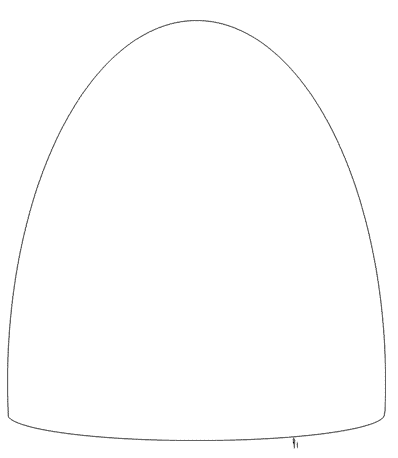

Michel Desmarquet
Thiaoouba Prophecy
( PDF -
Link )
Contents
5. Learning to live on another planet
6. The Seven Masters and the Aura
7. The Continent of Mu and Easter Island
8. Delving into the psychosphere
9. Our ‘so-called’ civilisation
10. A different alien and my former lives
12. Extraordinary journey meeting extraordinary ‘people’
Editorial Changes since the e-book edition 2000
----------
First published as
Abduction to the 9th planet
Believing is not enough...
You need to KNOW
----------
Publisher: Arafura Publishing 2004
Translated from French
manuscript (now lost) by Kay Smith
English translation edited and corrected by Dr Tom
Chalko, Louise Ovcar and
Manninder Sekhon in agreement with the author, Michel
Desmarquet. All changes are documented, except for spelling errors and grammar
corrections.
(c) Michel Desmarquet, 1993-2004, All rights
reserved
Report from the journey undertaken in June 1987
Manuscript completed in January 1989
Postscript written in April 1993
Frequently Asked Questions and contact:
http://thiaoouba.com
Previous editions:
“Abduction to the 9th Planet” 1993, paperback ISBN
0-646-15996-8
Reprinted
1993,1994,1999 (Australia), 1995 (USA) “Thiaoouba Prophecy” paperback ISBN
0-646-31395-9
Reprinted
1997 (Australia)
“Thiaoouba Prophecy” e-book 2000, ISBN 0 9577882 3 1
----------
I have written this
book as the result of orders received and which I have obeyed. Further, it
is an account of events that happened to me personally - this I affirm.
I imagine that, to some extent, this
extraordinary story will appear to some readers as science fiction - a
story entirely invented - but I do not have the imagination that such a
fabrication would require. This is not science fiction.
The reader of good faith will be able to
recognise the truth in the message I transmit from my new friends to
the people of the planet Earth.
This message, in spite of numerous references
to races and religions, reflects neither racial nor religious
bias on behalf of the author.
Michel Desmarquet,
January, 1989
They have eyes but they do
not see - ears, and they do not hear...
The Bible

I awoke suddenly, not knowing
how long I had slept. I was completely awake - fresh and alert - but good God,
what time could it be? Lina was sleeping beside me, her fists closed, but then
Lina always sleeps...
I
had no desire at all to go back to sleep and besides, it was possibly already
five in the morning. I got up, made my way to the kitchen and checked the
clock. Only 12.30am! It was unusual for me to wake up at such an hour.
I took off my pyjamas and dressed in trousers and a
shirt, why, I had no idea. Neither can I explain why I went to my desk, took a
sheet of paper and a biro and watched myself write, as if my hand had a mind of
its own.
‘My dear, I’ll
be away for about ten days. Absolutely no need to worry.’
Leaving the note by the telephone, I headed through
the door and on to the verandah. I avoided the table on which last night’s
chess game remained, with the white King still in checkmate, and silently
opened the door leading on to the garden.
The night seemed to be suffused with a strange
brightness, which had nothing to do with the stars. Instinctively, I tried to
recall what phase the moon was currently in, thinking that perhaps it was
about to rise. Here, in the north-east of Australia where I live, the nights are
generally quite clear.
I
descended the outside stairs and headed towards the pandanus. Usually, at this
time of night, we would have a veritable concert from the frogs and crickets
whose chirring sounds fill the night. Now however, there was a heavy silence
and I wondered why.
I
had only walked a few steps when, quite suddenly, the colour of the
philodendrons changed. The wall of the house too, and the pandanus - all were
bathed in a kind of bluish light. The lawn seemed to undulate beneath my feet
and the ground beneath the pandanus waved also. The philodendrons distorted
and the wall of the house resembled a sheet floating
in the wind.*1
[*1.
During one of his public lectures the author used words “heat haze”]
Beginning to believe that I
was not well, I decided to return to the house when, at that precise moment, I
felt myself lifted quite gently from the ground. I rose, slowly at first, above
the philodendrons, and then quicker, until I saw the house becoming smaller and
smaller below me.
‘What
is happening?’ I exclaimed in utter bewilderment.
‘All is well now, Michel.’
By then, I believed I was dreaming.
Before me, a human
being of impressive size, dressed in a one-piece suit and wearing a completely
transparent helmet on
‘her’ head, was looking at me - friendly and smiling.
‘No, you are not dreaming,’ she said, answering the
question in my mind.
‘Yes,’ I replied, ‘but it always happens this way in a dream and in the end you
find you’ve fallen out of bed and have a lump on your forehead!’ She smiled.
‘Further’, I continued, ‘you are speaking to me in
French, my native tongue, and yet we are in Australia. I do speak English, you
know!’
‘So do I’.
‘It has to be a dream - one of those stupid
dreams, moreover. If not though, what are you doing on my property?’
‘We are not on your property, but above it.’
‘Ah! It is a nightmare. You see I was right. I’ll
pinch myself!’ I accompanied the words with the action. Ouch!
She smiled again. ‘Now are you satisfied, Michel?’
‘But if it’s not a dream, why am I here sitting on
this rock? Who are those people over there, dressed in the fashion of the last
century?’
I was
beginning to distinguish, in a milky light, people talking and at a slight
distance, others moving around.
‘And you, who are you? Why aren’t you normal sized?’
‘I am a normal size, Michel. On my planet we are all
this size. But everything in good time, my dear friend. I hope you don’t mind me
calling you that? If we aren’t good friends already, I am sure that we will be
soon.’
She stood there
in front of me, intelligence reflected in her smiling face and goodness
emanating from her entire being. It would not be possible to meet anyone
with whom I could feel more at ease.
‘Of course, you may call me what you wish. And what is
your name?’
‘My name is
Thao, but first, I would like you to know, once and for all, that this is not a
dream. Indeed, it is something quite different. For certain reasons which will
be explained to you later, you have been chosen to undertake a journey
which very few Earthlings have made - particularly in recent times.
‘We are, you and I, at this moment, in a universe
which is parallel to that of Earth. In order to admit you, as well as
ourselves, we have made use of an ‘airlock’.
‘At this instant, time
has stopped for you, and you could remain here twenty or fifty of your Earthly
years and then return as if you hadn’t left. Your physical body would remain
absolutely unchanged.’
‘But what are these people doing?’
‘They exist as well as can be expected and, as you
will learn later, the population density is very low. Death only occurs by
suicide or accident. Time is suspended. There are men and women, as well as
some animals who are 30 000, 50 000 or even many more Earth years old.’
‘But why are they here and how did they come to be
here? Where were they born?’
‘On Earth. . . they are all here by accident.’
‘By accident? What do you mean?’
‘It’s very simple. You have heard of the Bermuda
Triangle?’ I nodded. ‘Well, quite simply, in this spot and in others less
well known, this parallel universe becomes confused with your universe so that
there exists between them a natural warp.
‘People, animals or even objects finding themselves in
the immediate vicinity of a warp are literally sucked into it. Thus, you can
have, for example, an entire fleet of boats disappear in several seconds.
Sometimes a person, or persons, can pass back into your universe after several
hours, several days or several years. More often, however, they never return.
‘When a man does return and relates his experience,
the vast majority of people don’t believe him - and if he persists, he is
assumed ‘crazy’. Most of the time, such a person recounts nothing at all,
realising how he will appear in the eyes of his peers. Sometimes too, he returns
amnesic, and if he recovers some memory, it is not of what happened in the
parallel universe, and therefore sheds no light on the subject.
‘There was,’ Thao continued, ‘a typical case of this
passage into a parallel universe in North America, where a young man literally
vanished while going to fetch water from a well which was situated several
hundred metres from his house. About an hour later, family and friends set out
in search of him and, as there had been a fresh snowfall of about 20
centimetres, it should have been quite simple - they had only to follow the
footprints left by the young man. But, right in the middle of the field - the
footprints stopped.
‘There were no trees around, no rocks on to which he could have jumped -
nothing strange or unusual - the footprints just stopped. Some people believed
that he had been taken by a spacecraft, but that could not have been, as you
will see later. This poor man had quite simply been sucked into the parallel
universe.’
‘I remember’,
I said, ‘I did hear of that particular case, but how do you know all about it?’
‘You will find out later how I know,’ she replied
enigmatically.
We were
interrupted by the sudden appearance of a group of people so bizarre that
again, I wondered if this was all a dream. About a dozen men, accompanied by
what seemed to be a woman, emerged from behind a pile of rocks a hundred metres
from where we were. The sight was even stranger, since these human
beings appeared to have stepped out of the pages of prehistoric records. With
the gait of gorillas, they brandished enormous clubs which modern man would not
have been able to lift from the ground. These hideous creatures were coming
straight for us, howling like wild beasts. I made a move to retreat,
but my companion told me there was nothing to fear and that I should stay
still. She put her hand on the buckle of her belt and turned so that she faced
them.
I heard a series
of small clicks and five of the strongest looking men fell to the ground,
motionless. The rest of the group stopped cleanly and began moaning. They
prostrated themselves before us.
I looked again at Thao. She stood like a statue, her
face set. Her eyes were fixed on those people as though she was trying to
hypnotise them. I later learned that she was giving orders by telepathy to
the female of the group. Suddenly, this woman got up and began, it seemed to
me, to issue orders in a guttural voice to the others. They then helped remove
the bodies, carrying them on their backs to the pile of rocks mentioned earlier.
‘What are they doing?’ I asked.
‘They will cover their dead with stones.’
‘Did you kill them?’
‘I had to.’
‘What do you mean? Were we really in danger?’
‘Of course we were. These are people who have been
here for ten or fifteen thousand years - who knows? We don’t have time to
establish that and besides, it is of no importance. Nevertheless, it illustrates
well what I was explaining to you a few moments ago. These people passed into
this universe at a certain time, and they have lived in that time ever since.’
‘It’s frightful!’
‘I agree. However it is part of natural, and
therefore universal, law. Furthermore, they are dangerous because they
behave more like wild beasts than human beings. Dialogue would not have been
possible between them and us, just as it is not possible between them and most
of the others living in this parallel universe. For one thing, they are unable
to communicate; and for another, they, less than anyone, understand what has
happened to them. We were in real danger and, if I do say so, I have done them a
favour just now, of liberating them.’
‘Liberating?’
‘Don’t look so shocked, Michel. You know quite well
what I mean by that.
‘They
are liberated from their physical bodies and are now able to continue their
cycle, like every living being, according to the normal process.’
‘So if I understand correctly, this parallel universe
is a curse - a kind of hell or purgatory?’
‘I didn’t realise you were religious!’
‘I just make this comparison to show you that I am
trying to understand,’ I
replied, wondering how she could know whether or not I
was religious.
‘I know,
Michel, I was only teasing. You were right in explaining it as a kind of
purgatory but, of course, this is quite accidental. In fact, this is one of
several accidents of nature. An albino is an accident, and a four-leafed clover
can also be considered as an accident. Your appendix is just as
much an accident. Your doctors still wonder what use it could possibly have
in your body. The answer - no use whatsoever. Now usually, in nature,
everything has a precise reason for existing - that’s why I list the appendix
among the natural ‘accidents’.
‘People living in this universe suffer neither
physically or morally. For example, if I hit you, you would feel no pain, but
if the blows were strong enough, although without pain, you could still die
from them. This might be difficult to comprehend, but it is so. Those existing
here know nothing of what I have just explained to you, and it is fortunate
because they would be tempted to commit suicide - which, even here, is not a
solution.’
‘What do they
eat?’
‘They don’t eat,
nor do they drink, because they don’t feel the need to. Here, remember, time has
stopped - those dead won’t even rot.’
‘But that’s terrible! In all, the greatest service
that one can render these people would be to kill them!’
‘You raise an important point there. Effectively
it would be one of two solutions.’
‘What is the other?’
‘To send them back where they came from - but that
would pose great problems. Because we are able to make use of the warp, we
could return many of them to your universe, and thus liberate [1] them, but I’m
sure you are aware of the enormous problems that would create for the majority
of these people. Here, as I have already said, you have people, who have been
here for thousands of years. What would happen if they found themselves back in
the universe they left so long ago?’
‘They might go insane. In all, there is nothing to
do.’ She smiled gently at my affirmation.
‘You are certainly the man of action we require,
Michel, but beware of jumping to conclusions - you have much more to see.’
She put her hand on my shoulder, having to incline
forward slightly to do so. Although I didn’t know it at the time, Thao
measured 290 centimetres, exceptionally tall for a human being.
‘I see with my own eyes that we made the right choice
in selecting you - you have an astute mind, but I cannot explain everything to
you now, for two reasons.’
‘Namely?’
‘First, it is still too soon for such an explanation.
By this, I mean that you must be instructed further on certain points before
proceeding beyond.’
‘I
understand - and second?’
‘The second reason is that they are waiting for us. We
must leave.’
With a
light touch, she turned me around. I followed her gaze and stared wide- eyed
with surprise. About 100 metres from us was an enormous sphere, from which
emanated a bluish Aura. I later learned that it measured 70 metres
in diameter. The light was not steady, but shimmered, resembling a heat haze
when one looks from a distance at sand heated by the summer sun.
This enormous sphere ‘shimmered’ about ten metres from
the ground. With no windows, no openings, no ladder, it appeared as smooth as
the shell of an egg.
Thao signalled for me to follow her and we set out towards the machine. I
remember that moment very well. During the short time we took in approaching
the sphere, I was so excited that I lost control of my thoughts. A constant
stream of images flashed through my mind, resembling a film in the
‘fast-forward’ mode. I saw myself relating this adventure to my family, and I
saw again newspaper articles I had read on the subject of UFOs.
I remember a feeling of sadness sweep over me when
I thought of my family whom I loved so much; I saw myself caught, as though in
a trap, and it occurred to me that I might never see them again...
‘You have absolutely nothing to fear, Michel,’ said
Thao. ‘Trust me. You will be reunited with your family very soon, and in good
health.’
I believe my
mouth fell open in surprise, triggering in Thao a melodious laugh, such as is
rarely heard among us Earthlings. That was the second time she had read my
thoughts; the first time I thought might have been a coincidence, but this time
there could be no doubt.
When we arrived in close proximity to the sphere,
Thao
placed me in a position opposite her and about a metre’s distance away.
‘Do not touch me under any pretext, Michel,
whatever happens. Under any pretext - do you understand?’
I was quite taken aback by this formal order, but I
nodded.
She
placed her hand on a type of ‘medallion’ I had noticed earlier ‘attached’ at the
height of her left breast, and with the other hand, she held what resembled a
large biro which she unclasped from her belt.
She pointed the ‘biro’ above our heads and in the
direction of the sphere. I thought I saw a green beam of light flash from it but
I couldn’t be sure. She then pointed the ‘biro’ at me, her other hand still on
the ‘medallion’ and quite simply, we rose, simultaneously, towards the wall of
the machine. Just when I was sure we were going to collide with it, a portion
of the hull retracted like an enormous piston in the core of a cylinder,
revealing an opening, oval in shape, of about three metres in height.
We regained our feet, Thao and I, on a type of landing
inside the craft. She let go of her ‘medallion’ and with a dexterity that
suggested she had done it often, she refastened her ‘biro’.
‘Come. We can touch each other now,’ she said.
Taking me by the shoulder, she guided me towards a
small blue light, so intense that I had almost to half close my eyes. I had
never seen a colour like it on Earth. When we were almost below the light, the
wall on which it was located ‘let us pass’. That is the only way to describe
it. From the way in which my mentor was leading me, I could have sworn I was
going to have a handsome lump on my forehead, but we passed through the walls
- like ghosts! Thao laughed heartily at the shocked expression on my face. That
did me good. I remember that laugh - like a refreshing breeze and reassuring at
a time when I was not feeling at ease.
I had often spoken with friends of ‘flying saucers’
and was persuaded that they did, in fact, exist - but when you are actually
faced with the reality, so many questions cloud your brain that you think it
will burst. Of course, deep down I was delighted. From Thao’s manner towards me,
I sensed that I had nothing to fear. However, she was not alone: I wondered
what the others were going to be like. In spite of my fascination with this
adventure, I still doubted if I would see my family again. Already, they seemed
so far away, when only several minutes earlier I was in my own garden.
We were now ‘gliding’ at ground level along a
tunnel-shaped corridor that led to a small room, the walls of which were of a
yellow so intense that I had to close my eyes. The walls formed a vault -
exactly as if we were inside an upturned bowl.
Thao covered my head with a helmet made from a
transparent material and I
found, by opening one eye, that this enabled me to
tolerate the light.
‘How
do you feel?’ she asked.
‘Better, thank you, but that light - how can you stand
it?’
‘It is not a light. It is just the present colour of
the walls in this room.’
‘Why ‘present’? Have you brought me here to repaint
them?’ I joked.
‘There
is no paint. There are only vibrations, Michel. You still believe that you
are in your Earthly universe, when you are not. You are now in one of
our super
long-range spacecraft, capable of travelling at several times the speed of
light. We will be leaving soon, if you will lie down on this bunk..?’
There, in the centre of the room were two boxes -
rather like coffins without lids. I stretched out in one of them and Thao in the
other. I heard her speak in a language unfamiliar to me, but very harmonious. I
wanted to lift myself up a little but couldn’t, being held by an unknown
and invisible force. The yellow colour progressively disappeared from the
walls, to be replaced by a blue that was certainly no less intense. The
‘paintwork’ had been redone...
One third of the room suddenly became dark and I
noticed minute lights sparkling like stars.
Thao’s voice was clear in the darkness. ‘These are
stars, Michel. We have left Earth’s parallel universe and will be leaving
your planet further and further behind, to take you to visit ours. We know you
are going to be greatly interested in the journey, but also in our departure
that will be quite slow, for your benefit.
‘We can watch on the screen you see in front of you.’
‘Where is Earth?’
‘We still can’t see it, being almost directly
above it, at approximately 10 000 metres altitude...’
Suddenly, a voice could be heard,
speaking what seemed to be the same language Thao had used moments earlier.
Thao answered briefly and then the voice spoke to me in French - excellent
French (although the tone was more melodic than is typical) welcoming me
aboard. It was very much the ‘welcome aboard’ of our airline companies, and I
recall being quite amused by that - in spite of the unique situation in which I
found myself.
At the
same instant, I felt a very light movement of the air and it became cool, as
though air-conditioned. Things began to happen quickly. On the screen,
appeared what could only have been the sun. At first, it seemed to touch the
edge of the Earth or, more precisely, South America, as I later learned.
Again, I wondered if I could be dreaming. Second by second America was
shrinking. Australia couldn’t be seen, as the sun’s rays had not yet
reached it. Now the contours of the planet could be distinguished, and
we
seemed to move around the globe, to a position above the North Pole.
There, we changed direction, drawing away from Earth at an incredible speed.
Our poor Earth became a basketball, then a
billiard ball until it finally disappeared - or almost - from the
screen. Instead, my vision was filled with the sombre blue of space. I turned my
head in Thao’s direction hoping for further explanation.
‘Did you like that?’
‘It was wonderful, but so fast - is it possible to
travel at such a high speed?’
‘That was nothing, my dear friend. We ‘took off’
very gently. Only now are we travelling at full speed.’
‘How fast?’ I interrupted.
‘Several times the speed of light.’
‘Of light? But how many times? It’s incredible! What
about the light barrier?’
‘I can well understand that it appears incredible to
you. Not even your experts would believe it - it is, however, the truth.’
‘You say several times the speed of light, but how
may times?’
‘Michel,
during this journey many things will be intentionally revealed to you - many
things, but there will also be details to which you will not have access. The
precise speed of our spacecraft is one such detail. I’m sorry, for I know it
will disappoint you not to have your great curiosity for all things satisfied,
but there will be so many new and interesting things for you to see and learn,
that you must not mind too much when information is withheld from you.’
Her manner indicated that the matter was closed
and I didn’t insist further, sensing that to do so would have been rude.
‘Look’ she said to me. On the screen a coloured dot had appeared and was growing rapidly.
‘What is it?’
‘Saturn.’
The reader must forgive me if the descriptions I
give are not as detailed as he/she might wish, but it must be understood that I
had not yet recovered all my senses. I had seen so much in so short a time, and
was somewhat ‘disoriented.’
As we approached, the famous Saturn grew rapidly
larger on the screen. Its colours were wonderful - incomparable to anything I
had ever seen on Earth. There were yellows, reds, greens, blues, oranges -
within each colour, an infinite range of nuances mingled, separated,
grew stronger then weaker, creating the famous rings and confined within
them...
It was an
amazing spectacle, which filled more and more of our screen.
Realising I was no longer restrained by the force
field, I wanted to remove my mask so as to see the colours better, but Thao
signalled that I should do nothing.
‘Where are the satellites?’ I asked.
10
Thiaoouba Prophecy
‘You can see two, almost side by side towards the
right of the screen.’
‘How far away are we?’
‘We must be approximately 6 000 000 kilometres or perhaps more. They know
exactly on the flight deck of course, but to give you a more precise estimate,
I’d have to know whether our ‘camera’ is on full zoom or not.’
Saturn suddenly disappeared from the left side of the
screen, which filled again with the ‘colour’ of space.
I believe it was at that moment I felt exalted, as I
never had before. It hit me that I was in the process of living an extraordinary
adventure - and why? I had asked for nothing and had never contemplated the
possibility (who would have dared?) of experiencing such an adventure.
Thao got up. ‘You can do the same now, Michel.’ I
obeyed and we found ourselves again, side by side in the centre of the cabin. It
was only then, I noticed Thao no longer wore her helmet.
‘Can you explain to me,’ I asked, ‘why just now, you
were still wearing a helmet while I was able to accompany you without one, and
yet now I have one while you don’t?’
‘It is very simple. We come from a planet
bacteriologically different from Earth, which, for us, is a veritable culture
medium. Thus, in order to contact you, I was obliged to take this basic
precaution. You, yourself, were a danger to me but you are no longer.’
‘I don’t follow you.’
‘When you entered this cabin, the colour was too
intense for you and I gave you the helmet you are now wearing, which was
specially designed for you. Indeed, we were able to anticipate your reaction.
‘During the very short time the cabin was yellow and
then blue, eighty per cent of the dangerous bacteria in you was destroyed. Then
perhaps you felt a coolness in the air, similar to when an air conditioner is
working; this was another form of disinfection by...let’s call it radiation,
although that is not the correct word - it cannot be translated into any Earth
language. In this way, I have been disinfected one hundred per cent, but you
still have enough bacteria to harm us considerably. I am going to give you these
two pills, and in three hours you will be able to consider yourself as ‘pure’
as one of us.’ As she spoke, she took a little box from beside her bunk,
removed the pills and held them out to me, along with a test tube containing
a liquid that I supposed to be water. I swallowed them both, lifting the base
of my helmet to do so. Next ... well, everything happened very quickly and it
was all very strange.
Thao took me in her arms, put me on the bunk and removed my mask. I saw that
happen from two or three metres from my body! I imagine that certain things in
this book will seem incomprehensible to the unwarned reader, but
I saw my body
from a distance and I was able to move about in the room just by thought.
Thao spoke. ‘Michel, I know that you see me and hear
me, but I am not able to see you myself, therefore I cannot look at you when I
speak to you. Your Astral being has left your body. There is no danger in this -
you needn’t worry. I know that this is the first time this has happened to
you, and there are people who panic...
‘I have given you a special drug in order to cleanse
your body of all bacteria that is dangerous to us. I have also given you another
drug that has caused your Astral being to leave your body - this will last three
hours, the time it will take to purify you. In this way, you will be able to
visit our spacecraft, without danger of contamination to us and without
wasting time.’
As
strange as it seems, I found this quite natural - and I followed her. It was
fascinating. She arrived in front of a panel that slid open to let us pass into
one chamber after another. I was following at some distance and each time,
if the panel had already closed by the time I reached it - I quite simply passed
through it. Finally, we reached a circular room, about 20 metres in diameter, in
which there were at least a dozen ‘astronauts’ - all women and all about
Thao’s size. Thao approached a group of four who were seated in enormous,
comfortable-looking armchairs, arranged in a circle. When she sat down in a
vacant seat, the four heads turned towards her questioningly. She almost
seemed to take delight in
making them wait: finally she spoke.
I was again charmed to hear that language - the
assonance was quite new to me, and the intonations so harmonious one would have
thought they were singing. They all seemed to be greatly interested in Thao’s
report. I supposed they were speaking of me, believing correctly that I was the
main purpose of their mission.
When Thao stopped, the questions streamed forth, and
two other astronauts joined the group. The discussion swelled and developed
a tone of increased excitement.
Not understanding a word of what was being said,
and having noticed on entering three people positioned in front of screens
displaying 3-dimensional images, more or less vividly coloured, I approached to
discover that this must certainly be the control room of the spacecraft. Being
invisible made it even much more interesting since each person was
performing her duties without being disturbed, or even distracted, by my
presence.
On a screen
bigger than the rest, I was able to discern dots - some larger than others and
some brighter, which moved steadily and without interruption in their prescribed
directions, several towards the left of the screen and others towards the
right.
12 Thiaoouba Prophecy
Their speed increased as
they grew on the screen and finally exited from it. Their colours were often
brilliant and extraordinarily beautiful, ranging from subtle tones to a
blinding yellow, like the light from our sun.
I soon realised that these were the planets
and suns among which we were navigating, and I was absolutely fascinated by
their silent progression across the screen. I can’t say how long I had been
watching them, when suddenly a strange sound filled the cabin - a sound which
was soft and at the same time, insistent, and which was accompanied by many
flashing lights.
The
effect was immediate. The astronauts that had been talking with Thao now
approached the control post and each took a seat that seemed to be personally
assigned to her. Everyone’s eyes were fixed attentively on the screens.
Right in the middle of these large monitors, I began
to distinguish an enormous mass that is difficult to describe. Let me say only
that it was round in form and blue-grey in colour. It remained immobile in the
centre of each screen.
In the room, all was silent. The general attention was focused on three
astronauts in command of oblong-shaped pieces of equipment resembling in
some ways, our computers.
Suddenly, covering a huge area of what I believed was
a wall of the cabin I was stupefied to see an image of New York - no! That’s
Sydney, I said to myself, and yet the bridge is different...was it even a
bridge?
My surprise was
such I had to ask Thao, at whose side I was standing. I had forgotten however,
that I was no longer in my physical body and no one could hear me. I was able to
hear Thao and others commenting on what they were seeing but, not understanding
their language, it didn’t get me far. I was convinced though, that Thao
had not lied to me and therefore we had well and truly left Earth behind. My
mentor had explained we were travelling at several times the speed of
light...and I had seen Saturn pass by and later, what I took to be planets and
suns - so had we come back, and why?
Thao spoke aloud and in French, which caused all
heads to turn in her direction.
‘Michel, we are stationed above the planet Arèmo X3
which is almost twice the size of planet Earth, and as you can see on the
screen, quite similar to your world.
‘I can’t explain at any length our current mission as
I am required to participate in the operation, but I will do so later. To put
you on the right track, I will tell you that our mission concerns atomic
radiation such as you know on Earth’.
Thao
13
Everyone seemed preoccupied: each knew exactly what
to do and when to do it. We were stationary. The large panel projected an
image of the centre of a town. The reader should understand that this large
panel was in fact, no more than an immense television screen, projecting an
image in relief so real, we could have been looking out the window of a tall
building.
My attention
turned to another smaller screen being monitored by two of my
‘hostesses’. On this panel I could see our
spacecraft, as I had already seen it in our parallel universe. As I
watched, I was surprised to see, slightly below the middle of our vessel, a
small sphere ejected, like an egg from a hen. Once outside, this sphere
accelerated rapidly towards the planet below. As it disappeared from view,
another sphere emerged in the same manner, and then a third. I noticed each
sphere was being monitored on separate screens by different groups of
astronauts.
The descent
of the spheres could now be easily followed on the large panel. The distance
should have made them invisible in quite a short time but they remained
in sight and I deduced that the camera had to have an extraordinarily powerful
‘zoom’. Indeed, the effect of the zoom was so strong that the first sphere
disappeared from the right of the panel and the second from the left. We could
now only see the middle one and followed its descent to the ground quite
clearly. It stopped in the centre of an immense square, situated among apartment
buildings. There it hovered, as though suspended several metres
from the ground. The other spheres were monitored in the same detail. One was
above a river that flowed through the town, and the other hovered above a
hill, near the city.
Unexpectedly, the panel projected a new image. I could now distinctly see the
doors of the apartment buildings, or rather, the doorways, for where doors
should have been, were gaping openings.
I remember clearly that, until then, I had not
realised how odd this town was...
Nothing had moved...
A single word can
impart what was being reflected from the panel: ‘Desolation’.
The street we were observing, piece by piece, was cluttered with ‘mounds’
generally arranged one behind the other. Some stood apart while others lay right
in the middle of the openings to the buildings. Imperceptibly, the camera zoomed
closer and I soon understood that these ‘mounds’ had to be vehicles - vehicles
that were somewhat similar in shape to flat-bottomed boats.
Around me, the astronauts were attending to
their desks. From each sphere emerged a long tube that descended slowly towards
the surface. When the end of the tube touched the ground, a little cloud
of dust rose, and I realised that the vehicles too were covered in a thick
blanket of dust, rendering them formless and unrecognisable. Of course, the
sphere that hovered above the river had its tube in the water. My attention was
now riveted on the panel, for the scene was quite fascinating - one had the
exact impression of being in the street.
My attention was especially drawn to a darkened place
in the entrance of a huge building. I could have sworn something moved...
I also felt there was a certain agitation among the
astronauts. Abruptly, and with a series of jerks, the ‘thing’ emerged into the
light. I was horrified by what I saw. As for my ‘hostesses’, apart from some
utterances spoken more quickly, and a few exclamations in which emotion could
be discerned, I must say that they didn’t really seem surprised. However,
what we were seeing so clearly on the panel was a horrible cockroach, about
two metres long and 80 centimetres high.
The reader will certainly have seen, at one time or
another, these nasty little insects we have on Earth, particularly in hot
climates, living in cupboards and damp places.
14
You will agree that they are loathsome, but the
biggest would be no more than five centimetres in length. Imagine then, one
with the dimensions I have just described. It was truly an abomination.
The tube from the sphere began to retract, yet was
still a metre from the ground when suddenly, the creature hurried forward
to attack this thing which moved. Untrustingly, it stopped again, when from
under the building, a veritable swarm of the creatures emerged, spilling one
over the other. Just then, a ray of intense blue light beamed from the sphere
and swept over the group, reducing it instantly to carbonised dust. A cloud of
black smoke hid the entrance to the building from view.
My curiosity further aroused, I watched the other
screens, but they indicated no problems. The sphere from the river was returning
towards us, and the sphere on the hill retracted its tube, moved a little
higher and lowered the tube again, along with a second cylinder above
the sphere. I had guessed, of course, that the astronauts were collecting
samples of soil, water and air. Being in Astral body, I couldn’t ask Thao any
questions; in any case, she seemed quite busy conferring with two of the
‘hostesses. The spheres began climbing towards us and were soon ready to be
‘reabsorbed’ by our spacecraft.
When the operation was complete, Thao and the two
astronauts mentioned took their places opposite their respective desks.
Instantly, the images we received on the panel and screens changed completely.
I understood we were leaving when each one took her
place. I observed that all the astronauts had a similar posture in their seats
that intrigued me. I later learned that a force field restrained them
exactly as a security harness would have restrained a stuntman on Earth.
The suns illuminated the planet through a reddish fog.
We had left by then, and I assumed we were following the contour of the planet,
at the same altitude. In fact, we could see a desert-like area passing by,
dissected by dry riverbeds that sometimes crossed each other at right angles.
It occurred to me they might be canals, or at least had been man made.
The panel revealed images of a town apparently intact,
then it disappeared and the screen went blank. The vessel had obviously gained
speed in flying over the planet, as the images on the smaller screens, showing a
lake or inland sea, flashed by quickly. Suddenly, several exclamations were
heard and we immediately slowed down. The panel was turned on and presented
a close-up of the lake. We stopped.
We could clearly see a portion of the coast and,
beyond some large rocks by the lake, we could make out cube-like structures
which I imagined to be habitations. As soon as we had stopped, the spheres began
their operations again, just as they had earlier.
We received some excellent shots taken from one of the
spheres that hovered above the beach at a height I judged to be 40 to 60 metres
from the ground. Its tube extended right to the shore. Very clearly, it
transmitted a scene of a group of human beings... Indeed, at first sight, they
were identical to people found on Earth.
We had a very close view. In the middle of the panel
appeared the face of a woman of uncertain age. She had brown skin, with long
black hair that fell to her breasts. As we could see on another screen, she
was quite naked. Only her face appeared to be deformed - she was Mongoloid.
When I saw her, I didn’t realise she was deformed, I
simply assumed we had to contend with a race of humans only slightly different
from our own - as science fiction writers like to describe them - all twisted,
with big ears or such like. Still, we had other shots and, in this group, the
men and women seemed to resemble the Polynesian race. It was, however, obvious
that more than half of these people were either deformed or eaten away by what
appeared to be leprosy.
They were looking towards the sphere and gesticulating, appearing to be greatly
agitated. Many more were emerging from the cubic constructions which proved to
be their habitations, and on which I will elaborate a little.
These structures closely resembled the ‘blockhaus’ of
the Second World War, to which had been added very thick chimneys
(installed, I supposed, for the ventilation of the buildings) which only
seemed to rise about one metre above the ground. These blockhaus were all built
with the same orientation and the people emerging from them, did so by openings
on the sides which were in shadow...
Without warning, I felt myself drawn backwards away
from the panel. Rapidly, I passed through several partitions until I found
myself once again, in the cabin where my physical being lay stretched out on the
bunk, just as I had left it.
Instantly, everything was completely black. How well
I remember the unpleasant sensation that followed! My limbs felt like lead and
when I tried to move them, it was as if I was paralysed. I could not understand
what prevented me from moving. I must confess I panicked a little and wished
with all my heart that I might leave my physical body again, but I couldn’t do
that either.
I don’t
know how much time elapsed before the cabin gradually became suffused with
the most restful blue-green light. Finally Thao entered, wearing a different
suit.
‘I am sorry to
have made you wait, Michel, but just as your physical body recalled you, it
was impossible for me to come and help you.’
‘Don’t apologise, I understand perfectly,’ I
interrupted, ‘but I believe I have a problem - I can’t move. I’m sure something
in me is disconnected.’
She smiled and put her hand just beside mine, undoubtedly operating a control
mechanism, and immediately I was freed.
‘Again, a thousand apologies, Michel. I should have
pointed out to you the spot where the control cell for the security harness is
found. All the seats, beds or bunks are equipped with them, and they
are automatically activated when occupied if there is the least possibility
of danger. [2]
‘When the
vessel arrives in a dangerous area, the three security computers cause the
closing of the force fields, to use their proper name. When the danger has
passed they automatically release them.
‘At the same time, if we do want to be released in a
zone deemed dangerous, or even if we simply want to change position, we have
only to pass a hand or just a finger in front of the cell and the force field
is immediately neutralised. When we return to our seats, we will be
automatically restrained again.
‘Now, I’m going to ask you to go and change - I’ll
show you where. In the room, you will see an open trunk where you can put your
clothes -in fact, all that you are wearing apart from the glasses. You’ll find a
suit there, which you are to put on before meeting me back here.’
Thao bent down and taking my hand, she helped me up. I
was really quite stiff. I went into the small room she had pointed out,
undressed completely and put on the suit, which fitted me perfectly. This was
surprising, given that, in spite of my
178 centimetres in height, I was a dwarf compared with
my hostesses.
A short
time later, back in the cabin, Thao handed me something in the form of a
bracelet, which was actually a pair of enormous glasses.
A little like motorcycle goggles, they were strongly
tinted. At her request, I put them on, but to do so, I was obliged to remove my
own glasses, as they would have been crushed by this larger pair. They fitted
exactly into the shape of my eye sockets.
‘A last precaution,’ she said.
Lifting her hand towards the partition, she in some
way released a certain mechanism, for the intense light reappeared and I
felt the intensity in spite of the strong glasses. I was again aware of the
current of cool air.
The
lights went out. The air current could no longer be felt, but Thao did not move,
appearing to be waiting for something. Eventually a voice was heard and she
removed my large tinted glasses. I replaced them with my own and she asked that
I follow her. We took the same route as when I followed her in Astral body, and
we found ourselves again, in the command room.
One of the older astronauts (I say older but perhaps
I should instead say ‘more serious’ as they all appeared to be about the same
age) signalled briefly to Thao who took me to a seat in front of the panel
and asked that I stay there. She quickly rejoined her colleague and I realised
they were very busy.
As
for me, I began checking whether I could in fact free myself from the force
field. As soon as I sat down, I was effectively plastered to my seat - a feeling
I did not like at all.
Moving my hand slightly, I found I was immediately liberated for as long as my
hand remained in front of the cell.
The panel relayed an image of about 500 people
standing on the shore and quite near the ‘blockhaus’. Thanks to the close-ups
possible with our cameras, we had an excellent view of these people, who were
quite naked, from the oldest down to the youngest. Again, I could see many of
them were either deformed or sporting ugly wounds. They were all gesturing
towards the spheres taking sand and soil samples, but no one approached. The
strongest looking men were holding what appeared to be machetes or sabres.
They seemed to be watching something.
I felt pressure on my shoulder and turned round,
surprised. It was Thao. She smiled at me and I clearly remember appreciating,
for the first time, the beauty and nobility of her face.
I have already mentioned her hair, which was long and
silky, golden-blond in colour, which fell to her shoulders and framed a face
that was perfectly oval in shape. She had a large, slightly protruding forehead.
Her blue-mauve eyes and long curled lashes would have
been the envy of many women on our planet. Her eyebrows curved upwards, similar
to the wings of a seagull, adding a unique charm. Under her eyes, which
sparkled and sometimes teased, was her nose, well-proportioned and slightly
flat at the bottom, which accentuated a sensual mouth. When she smiled, she
revealed perfect teeth - so perfect, one could believe they were false. (This
would have surprised me.) The chin, well-shaped but slightly angular, suggested
a wilful determination that was somewhat masculine, but this did not detract
from its charm. A faint shadow of hair above her upper lip could have spoiled
this perfect face, were it not blond.
‘I see you already know how to free yourself from the
force field, Michel.’
I
was about to reply, when an almost general exclamation made us turn our eyes to
the panel.
The people on
the beach were surging back en masse towards the habitations and dived inside
in one big rush, while a line of men had been formed armed with sabres or
picks, facing the most incredible ‘thing’ I could ever have imagined.
A group of red ants, each the size of a cow, were
rushing from behind the rocks onto the beach. They moved quicker than horses in
gallop.
The armed men
kept glancing behind, as if to compare the speed at which the people scrambled
to safety, with the advance of the ants. Already, the latter were near - too
near...
The men faced
them bravely as, with only a second’s hesitation, the first beast attacked. We
could distinguish the mandibles clearly - each the size of a man’s arm. At
first, the creature feigned, enabling the man to strike with his sabre, but he
slashed only air. Immediately, the mandibles encircled his waist, severing him
cleanly in two. Another pair of ants helped the first to shred him, while the
rest launched their assault on the fleeing combatants, gaining rapidly on them
- too rapidly...
From
the sphere, an electric-blue beam of unbearable intensity shot out, just as the
ants were upon the men. The creatures were struck dead, one after the other,
with amazing precision and effectiveness. Curls of smoke rose from the burnt
flesh of the animals strewn over the ground, their enormous legs convulsing in a
last spasm.
The beam
continued its devastation among the ants, instantly and systematically
annihilating the giant insects. They must have known instinctively that they
could not match this almost supernatural force and fled in retreat.
Everything had happened so quickly. Thao was
still at my side, her face reflecting disgust and sadness, rather than
anger.
Another glance at
the panel revealed a new scene - of the sphere pursuing the ants in their
hasty retreat, not only with the camera, but also with the deadly beam. The
rest of the swarm, which I estimated to comprise six or seven
hundred, were being decimated. Not one was left alive.
The sphere returned to its earlier position above
the beach and produced a special tool with which it combed through the
carcasses. I could see one of the astronauts seated at her desk, talking into
her computer. This prompted me to ask Thao if she was supervising the work being
carried out.
‘At the
moment, yes, for this work was not originally scheduled. We are taking samples
of these creatures, pieces of lung in particular, in order to analyse them. We
think that certain types of radiation have produced this mutant form of
creature. In fact, ants do not have lungs but the only logical explanation for
their sudden gigantism is...’
Thao stopped short. The camera was relaying a
picture of the men now re- emerging form their shelters, gesticulating
wildly at the sphere. They were holding their arms open-wide and
prostrating themselves on the ground. They repeated this pattern.
‘Can they see this vessel?’ I asked.
‘No. We are at an altitude of 40 000 metres, and,
further, there are presently three layers of cloud between the planet and us.
On the other hand, they can see our satellite and I think it is to that they
are addressing these gestures of gratitude.’
‘Perhaps they take the sphere to be a God which has
saved them from ruin?’
‘It’s quite possible.’
‘Can you tell me what is happening? Who are these people?’
‘It would take too long to explain to you, Michel,
especially now with so much activity in the vessel, but I can satisfy your
curiosity by explaining briefly.
‘These people are, in a way, the descendants of
certain ancestors of people existing still on your planet. In fact, a
group of their ancestors peopled a continent on the planet
Earth about 250 000 of your Earth years ago. Here,
they possessed a
civilisation which was very advanced but, having raised enormous political
barriers between themselves, they finally destroyed themselves, 150 years ago,
with the atom.’
‘Do you
mean - a total nuclear war?’
‘Yes, brought about by chain reaction. We come, from
time to time, to take samples in order to study the degree of radiation still
existing in various regions. Sometimes too, just as a few moments ago, we help
them.’
‘But they must
take you to be God himself after what you did just now!’
Thao smiled and nodded her head. ‘Ah yes, that’s
certainly true, Michel. They take us to be gods, exactly as, on your planet,
certain of your ancestors also took us to be gods. Still, they talk of us...
I must have shown complete surprise, as Thao threw me
a look of amusement.
‘I
told you a moment ago that my explanation is somewhat premature. We’ll
have plenty of time to talk of this again. Besides, that’s why you are with us.’
With that, she excused herself and resumed her place
in front of a ‘screen-desk’. The images were changing rapidly on the panel. The
sphere was on its way up and we had a view of a whole section of the continent,
on which, I noticed in places, patches of green and brown. The sphere took its
place again within the vessel and we departed.
We flew over the planet at a breathtaking speed and I
allowed myself to be imprisoned in my armchair by the force field.
On the screen were images of the waters of an
immense ocean. We could distinguish an island, which ‘grew’ rapidly.
It seemed to be a very low island although, for me,
the problems of estimating dimensions were very real.
The entire procedure, already described, was repeated.
We stopped above the coast and, this time, four spheres left the spacecraft and
descended to the island. On the panel I could see a beach which the camera was
scanning.
On the water’s
edge lay what looked like thick slabs, around which were gathered naked
men - the same kind we had seen earlier. They didn’t appear to have noticed the
sphere and I assumed that this time, it was at a much higher altitude, in spite
of the ever-closing images we were receiving.
On the panel, we could now see the men carrying one
of the slabs into the waves. It floated, as if made of cork. The men hoisted
themselves up on to it, grabbed large oars that they handled skilfully and the
boat took to the open sea. When they were a good distance from the shore, they
threw out fishing lines and, to my surprise, almost immediately, pulled up fish
of what seemed a respectable size.
It was quite fascinating to see how these men were
surviving, and to be capable of helping them, as if we were gods.
I had released myself from the force field, wanting to
go and study the other screens that were receiving different images. Just as I
was about to venture from my seat, I received an order, without hearing a sound:
‘Stay where you are, Michel.’ I was stupefied. It was as if the voice was
inside my head. I turned my head in Thao’s direction and she was smiling at
me. I decided to try something, and thought as hard as I could, ‘Telepathy
is great, isn’t it Thao?’
‘Of course,’ she replied in the same manner.
‘It’s wonderful! Can you tell me what the
temperature is down there at the moment?’
She checked the data at her desk. ‘Twenty-eight of
your degrees Celsius. By day, the average temperature is thirty-eight degrees.’
I said to myself if I was deaf and mute, I could
communicate with Thao quite as easily as I can with the spoken word.
‘Exactly, my dear.’
I looked at Thao with some surprise. I had been making
a personal reflection and yet she had intercepted my thoughts. I was a little
put out by this.
She
gave me a wide smile. ‘Don’t worry, Michel. I was merely being playful and
I ask that you forgive me.
‘Normally, I only read your thoughts when you ask me a
question. I just wanted to demonstrate what is possible in this domain; I won’t
do it again.’
I
returned her smile and redirected my attention to the panel. There I could see a
sphere on the beach, very close to a group of men who didn’t seem to notice
it. This sphere was removing sand samples from a spot about ten metres from the
group. By telepathy, I asked Thao why these people were unable to see the
machine.
‘It’s night,’
she answered.
‘Night?
But how is it that we can see things so clearly?’
‘Special cameras, Michel - something like your
infra-reds.’
Now I
better understood why the images received were less ‘luminous’ than on our
preceding stops. However, the close-ups were excellent. Just then, on the
panel, we had a shot of a face apparently that of a female. It was really
horrible. The poor creature had an enormous gash where her left eye should
have been. Her mouth was positioned to the right of her face and appeared as
a tiny little opening in the middle of her jaw, around which were lips that
seemed fused together. On the top of her head, a single tuft of hair hung
pitifully.
We could now
see her breasts, and very pretty they would have been, if one of them
hadn’t had a purulent wound on the side.
‘With breasts like that she must be young?’ I asked.
‘The computer puts the age at 19 years.’
‘Radiation?’
‘Of course.’
Other people appeared, some of whom were perfectly
normal looking. There were males among them, with an athletic build, who
looked to be in their twenties.
‘What is the age of the oldest? Do you know?’
‘At present, we have no record of anyone older than 38
years, and a year on this planet is 295 days of 27 hours. Now, if you look at
the screen, you can see a close-up of the genital area of that handsome and
athletic young man. As you will note, the genitals are totally atrophied. We’ve
already worked out, from previous expeditions, that there are very few men
actually capable of procreation - and yet, there are great numbers of
children. It’s the survival instinct of all races to reproduce as
soon as possible. Thus, the obvious solution would be that the males capable
of reproduction are ‘studs’. This man must be one of them, I think.’
Indeed, the camera was showing a man of about 30
years perhaps, possessing physical attributes certainly capable of producing
offspring.
We were also
able to see many children coming and going around small fires on which food was
cooking.
The men and
women seated around the fireplaces were taking cooked pieces and sharing them
with the children. The fires seemed like wood fires, but I couldn’t be
sure. They were fuelled by something shaped rather like stones.
Behind the fires, slabs similar to the boats seen
earlier, were piled and assembled so as to form shelters that looked quite
comfortable.
In the
camera’s field of vision, no trees could be seen - perhaps they did exist,
because I had noticed green patches earlier as we flew over the continent.
From between two huts, some little black pigs
appeared, pursued by three furious yellow dogs, only to disappear rapidly
behind another hut. I was dumbfounded and couldn’t help but wonder if I really
was looking down on another planet. These humans looked like me - or rather,
like Polynesians - and here were dogs and pigs. It was all more and more
surprising...
The sphere
began to return, as did the other spheres no doubt, that were being monitored
by screens I couldn’t easily see from my position. The operation
‘return to ship’ was initiated, and all the spheres
‘reabsorbed’ without incident, the same as before.
I assumed we were about to leave again and so
installed myself comfortably in my seat, allowing the force field to restrain me
thus.
Some moments
later, the suns of the planet appeared, two in number, then everything
dwindled rapidly, just as it had done when we left Earth. After a time, which
seemed quite short, the force field was neutralised and I understood that I was
free to get out of my seat. This was a good feeling. I noticed Thao heading
towards me accompanied by two of the ‘oldest’, if I can say so, of her
companions. I remained standing beside my seat before the three astronauts.
In order to look at Thao, I was already obliged to
raise my head, but when she introduced me, in French, to the ‘elder’ of them, I
felt even smaller. The latter was easily a head taller than Thao.
I was completely astonished when she, Biastra, spoke
to me correctly, although slowly, in French. She placed her right hand on my
shoulder, saying,1
‘I am delighted to have you on board, Michel. I hope
that all is well with you and that it continues to be so. May I present Latoli,
the second-in-charge of our spacecraft, myself being what you would call
‘Commander-in-Chief of the Alatora.’
Turning to Latoli, she spoke a few words in her own
language and Latoli too, placed her hand on my shoulder. With a warm smile,
she repeated my name several times slowly, as would someone who had difficulty
pronouncing a new language.
Her hand remained on my shoulder and a feeling of
well-being, a definite fluid sensation, passed through my body.
1. Alatora, in their language, is the name given to
their super long-distance spacecraft.
(Author’s comment)
I was so obviously overcome by this, that the three of
them began to laugh. Reading my thoughts, Thao reassured me.
‘Michel, Latoli possesses a special gift, although
not rare among our people. What you have been able to experience, is a
fluid which is magnetic and beneficial, and which emanated from her.’
‘It’s wonderful!’ I exclaimed. ‘Please compliment
her on my behalf1.’ I then
addressed the two astronauts. ‘Thank you for your
welcome, but I must confess I am absolutely astounded by what is happening
to me. It really is the most incredible adventure for an Earthling
such as me. Although I have always believed in the possibility that other
planets might be inhabited by human-like beings, I’m still having a hard time
convincing myself that this is not a fantastic dream.
‘I had often discussed things such as telepathy,
extra-terrestrials and what we call ‘flying saucers’ with friends on Earth, but
they were just words and grand phrases uttered in ignorance. Now I have the
proof of what I had suspected for so long regarding the existence of parallel
universes, the duality of our beings, and other unexplained occurrences. To
experience all that I have in these last few hours is so exciting it takes my
breath away.
Latoli,
admiring my monologue, uttered an exclamation, in words I didn’t
understand but which Thao immediately translated for me.
‘Latoli understands your state of mind perfectly well,
Michel.’ ‘As do I,’ added
Biastra.
‘How could she have understood what I said?’
‘She has ‘dipped’ telepathically into your mind while
you were speaking. As you must realise, telepathy is not hindered by language
barriers.’
My
astonishment amused them and perpetual smiles played on their lips. Biastra
addressed me.
‘Michel, I
am going to introduce you to the rest of the crew, if you will kindly follow
me.’ She guided me, by the shoulder, to the furthest desk, where three
astronauts were monitoring the instruments. I hadn’t yet approached these desks
and, even in Astral body, I had not paid any attention to the read-out of these
computers. The glance I now gave them immobilised me completely. The
numerals before my eyes were in Arabic! I know the reader will be as surprised
as I was, but it was fact. The 1s, 2s, 3s 4s etc. appearing on the monitors,
were the same numerals that occur on Earth.
Biastra noticed my astonishment. ‘It is true, isn’t it
Michel, for you there is one surprise after another. Don’t think we are having
fun at your expense, as we totally understand your wonder. All will fall
into place in good time. For the moment please allow me to introduce Naola.’
The first of the astronauts rose and turned towards
me. She placed her hand on my shoulder, as Biastra and Latoli had done. It
occurred to me that this gesture must correspond to our handshake. Naola
addressed me in her own language and then she, too, repeated my name three
times, as if she wanted to commit it to memory forever. She was about the same
size as Thao.
The same
ceremony followed each time I was introduced, and thus I officially made the
acquaintance of all the members of the crew. There was a striking
resemblance between them. Their hair, for example, varied only in length and
shade, which ranged from a dark copper to a light golden-blond. Some had
longer or broader noses than others, but all had eyes of a colour which
tended towards light rather than dark, and all had very neat, well-shaped ears.
Latoli, Biastra and Thao invited me to sit down in one
of the comfortable seats. When we were all comfortably installed, Biastra moved
her hand in a particular
way near the armrest of her seat and-I saw coming
towards us, floating in the air - four round trays. Each carried a container
of yellowish liquid and a bowl of something whitish with a consistency
similar to fairy-floss but in granulated form. Flat ‘tongs’ served as forks. The
trays came to rest on the arms of our seats.
I was quite intrigued. Thao suggested, if I wished to
partake of this refreshment, I might like to follow her lead. She sipped from
her ‘glass’ and I did likewise, finding it quite a pleasant-tasting drink,
similar to a water-honey mixture. My companions used the ‘tongs’ to eat the
mixture in the bowls. Following their example, I tasted for the first time what
we, on Earth, called ‘manna’. Similar to bread, it is however, extremely light
and without any particular flavour. I had eaten only half the amount in my
bowl when already, I felt satisfied, which surprised me considering the
consistency of this food. I finished my drink and, although I couldn’t say I’d
dined in fine style, I experienced a sense of well-being and was neither hungry
nor thirsty.
‘Perhaps
you would have preferred a French dish, Michel?’ asked Thao, a smile
twitching on her lips.
I
merely smiled, but Biastra snorted.
Just then, a signal drew our attention to the panel.
In the centre, and in close-up, appeared the head of a woman, resembling my
hostesses. She spoke rapidly. My companions turned slightly in their seats to
better attend to what was being said. Naola, at her desk, entered into a
dialogue with the figure on the screen, just as our television interviewers do
on Earth. Imperceptibly, the shot changed from the close-up to a wide angle,
revealing a dozen women each in front of a desk.
Thao took me by the shoulder and guided me over to
Naola, installing me in a seat in front of one of the screens. She took a seat
next to me and addressed the people on the monitor. She spoke for some time,
rapidly, in her melodious voice, turning frequently towards me. From all
evidence, I was the main topic of conversation.
When she had finished, the woman re-appeared in
close-up, responding in several brief sentences. To my great surprise,
her eyes fixed on me and she smiled. ‘Hello Michel, we wish you a safe
arrival on Thiaoouba.’
She waited for my reply. When I had overcome my surprise, I expressed warm
thanks. This, in turn, elicited exclamations and numerous comments from her
companions, appearing again in a wide-angle shot on the screen.
‘Did they understand?’ I asked Thao.
‘Telepathically yes, but they are delighted to hear
someone from another planet speak his own language. For most of them, this is
quite a rare experience.’
Excusing herself, Thao re-addressed the screen
and, what I assumed was a technical conversation, ensued, including
Biastra. Eventually, after a smile in my direction and a ‘see you soon’, the
picture was cut.
I say
‘cut’ because the screen did not simply become blank; rather, the image was
replaced by a beautiful, soft colour - a mixture of green and indigo blue -
which produced a sense of contentment. It gradually faded after a minute or
so.
Turning to Thao, I
asked what it had all meant - had we rendezvoused with another spacecraft and
what was this Thiaba or Thiaoula..?
‘Thiaoouba, Michel, is the name we have given to our
planet, just as you call yours ‘Earth’. Our intergalactic base has been in
touch with us, as we will be arriving in Thiaoouba in 16 of your Earth hours
and 35 minutes.’ This she had checked with a glance at the nearest computer.
‘Those people then, are technicians on your planet?’
‘Yes, as I just said, at our intergalactic base.’
‘This base monitors our spacecraft
continually and if we were in trouble for technical or human reasons, in eighty
one per cent of cases, they would be able to control our safe return to port.’
This did not particularly surprise me as I had
realised I was dealing with a superior race, whose technological
possibilities were beyond my comprehension. What did occur to me was that, not
only this spacecraft, but also the intergalactic base appeared to be manned by
only women. An all female team such as this would be quite exceptional on Earth.
I wondered if Thiaoouba was populated only by
women...like space Amazons. I smiled at the image. I have always preferred the
company of women rather than men: it was quite a pleasant thought..!
My question to Thao was direct. ‘Are you from a
planet solely populated by women?’
She looked at me with apparent surprise, then her face
lit up with amusement. I was a little concerned. Had I said something stupid?
She took me by the shoulder and asked that I follow her. We left the control
room and immediately entered a smaller room (called the Haalis) which had
quite a relaxing ambience. Thao explained that we would not be interrupted in
the room, since the occupants acquired, by their presence, the right to
absolute privacy. She invited me to choose one of the many seats that
furnished the room.
Some
were like beds, some like armchairs, others resembled hammocks, while others
again, were like high stools with adjustable backs. I would have been
difficult to please if one of them did not suit my requirements.
Once settled comfortably in a kind of armchair with
Thao facing me, I watched, as her face became serious again. She started to
speak.
‘Michel, there
are no women aboard this spacecraft...’
If she had told me that I wasn’t on a spaceship
but rather, in the Australian desert, I would have more readily believed her.
Seeing the expression of disbelief on my face, she added, ‘neither are there
any men.’ At this, my confusion was absolute.
‘But,’ I faltered, ‘you are - what? Just robots?’
‘No, I think you misunderstand. In a word, Michel,
we
are hermaphrodites. You know, of course, what an hermaphrodite is?’
I nodded, quite dumbfounded, and then asked, ‘Is your
whole planet inhabited only by hermaphrodites?’
‘Yes.’
‘And yet your face and mannerisms are more feminine
than masculine.’
‘Indeed, it might appear so, but believe me when I tell you that we are not
women, but hermaphrodites. Our race has always been this way.’
‘I must confess, this is all very confusing. I’m going
to find it difficult to think of you as ‘he’ rather than the ‘she’ I have done
since I’ve been among you.’
‘You have nothing to imagine, my dear. We are
simply what we are: human beings from another planet living in a world
different from yours. I can understand you would like to define us as one sex or
the other, for you think as an Earthling and a Frenchman. Perhaps, for once,
you could make use of the neuter gender of English and think of us as ‘it’.’
I smiled at this suggestion but continued to feel
disoriented. Only moments ago, I had believed myself to be among Amazons.
‘But how can reproduction of your race occur?’ I
asked. ‘Can an hermaphrodite reproduce?’
‘Of course we can, exactly as you do on Earth; the
only difference being that we genuinely control the births - but that is another
story. In good time, you will understand, but now we should rejoin the others.’
We returned to the control post, and I found myself
looking at these astronauts with new eyes. Looking at the chin of one, I found
it to be more masculine than it had seemed earlier. Another’s nose was decidedly
masculine, and the hairstyles of some were now manlier [12].
It occurred to me
that we really do see people as we think they are and not as they are.
In order to feel less embarrassed among them, I
created a rule for myself: I had taken them to be women, as to me they were
more like females than males: thus I would continue to think of them as women
and we’d see how that worked.
From where I was, I could follow, on the central
panel, the movement of stars as we proceeded on our way. Sometimes they
appeared enormous and blinding as we passed by a little too closely - a few
million kilometres from them. At times too, we noticed planets of strange
colours. I remember one was of an emerald green, so pure I was stunned. It
resembled an enormous jewel.
Thao approached and I took advantage of the
opportunity to ask her about a band of light that had appeared at the base
of the screen. This light was composed of what looked like millions of tiny
explosions.
‘These are
caused by our anti-matter guns, as you would call them on Earth, and are, in
fact, explosions. At the speed at which we travel, the most minuscule of
meteorites would shatter this spacecraft were we to hit it. So, we make use of
specific rooms to store certain forms of dust under enormous pressure, and this
is fed into our anti-matter guns. Our vessel could be considered to be a
cosmotron, firing streams of accelerated particles that disintegrate the
most microscopic of errant bodies in space, for great distances ahead and to the
sides of our spacecraft. This is what allows us to attain speeds that we can.
Around our vessel, we create our own magnetic field...’
‘Oh please, not so fast. As you know Thao, I have no
scientific background and if you speak of cosmotrons and accelerated particles,
you are going to lose me. I understand the principle, which is certainly very
interesting, but I’m not good on technical terms. Can you tell me instead,
why the planets on the screen are coloured the way they are?’
‘Sometimes because of their atmospheres and sometimes
because of the gases which surround them. Do you see a multicoloured point with
a tail, at the right of the screen?’ The ‘thing’ was approaching at high
speed. Second by second we were better able to admire it.
It seemed to explode constantly and change form, its
colours indescribably rich. I looked at Thao.
‘It’s a comet,’ she said. ‘It completes a revolution
around its sun in approximately 55 of your Earth years.’
‘How far are we from it?’
She glanced at the computer: ‘4 150 000 kilometres.’
‘Thao,’ I said, ‘How is it you use the numerals of
Arabic? And when you speak of “kilometres”, are you translating for me, or do
you actually use this measure?’
‘No. We count in Kato and Taki. We use the numerals
that you recognise as Arabic, for the simple reason that it is our own system -
one which we took to Earth.’
‘What? Please explain further.’
‘Michel, we have several hours before arriving at
Thiaoouba. This is probably the best time to start ‘educating’ you seriously on
certain matters. If you don’t mind, we’ll go back to the Haalis, where we were
before.’
I followed
Thao, my curiosity stronger than ever.
Once
comfortably re-established in the Haalis, the relaxation room previously
described, Thao began her strange recital.
‘Michel, 1 350 000 years ago precisely, on the
planet Bakaratini of the constellation Centaur, a decision was made by
the leaders of that planet, following numerous conferences and
reconnaissance expeditions, to send inhabited vessels to the planets Mars and
Earth.
‘There was
a very simple reason for this: their planet was cooling down
internally and would become uninhabitable within 500 years. They thought, with
good reason, that it was preferable to evacuate their people to a younger planet
of the same category...’
‘What do you mean by ‘the same category’?’
‘I will explain later, to do so now would be
premature. Going back to these people, I must tell you that these beings were
human - very intelligent and highly evolved. A black race, they had thick
lips, flattened noses and frizzy hair - resembling, in these ways, the blacks
now living on Earth.
‘These people had inhabited the planet Bakaratini for 8 000 000 years, in co-
habitation with a yellow-coloured race.
‘To be precise, this was what you call on Earth, the
Chinese race and they had inhabited Bakaratini for about 400 years prior to
the blacks. The two races witnessed numerous revolutions during their time on
the planet. We tried to provide relief, assistance and guidance but, in
spite of our intervention, wars broke out periodically. These, along with the
natural disasters occurring on the planet, served to thin the ranks in both
races.
‘Finally, a
nuclear war broke out on such a grand scale that the entire planet was plunged
into darkness and temperatures fell to minus 40 of your degrees Celsius. Not
only did atomic radiation destroy the population, but cold and lack of food
accomplished the rest.
30
‘It is a recorded fact that a mere 150
black people and 85 yellow people survived the catastrophe, from a
population of seven billion black and four billion yellow humans. A register
of survivors was taken just before they began to reproduce and when they had
stopped killing each other.’
‘What do you mean ‘killing each other’?’
‘Let me explain the whole situation to you and
you’ll be able to understand better.
‘First of all, it is important to explain that those
who remained were not, as you might expect, the leaders, well protected in
specially equipped shelters.
‘The survivors, comprising three groups of blacks and
five groups of yellows, had come, some from private shelters and others from
large public shelters. Of course, at the time of the war, there were many more
than 235 people in shelters: indeed it is believed there were over 800
000 in all. Following months of confinement in the darkness and intense cold,
they were eventually able to risk going outside.
‘The blacks ventured out first, finding almost no
trees, no plants and no animals to speak of, on their continent. It was a group,
isolated from their shelter in the mountains, who first knew cannibalism.
Because of the lack of food, when the weakest died, they were eaten; then, in
order to eat, they had to kill each other - and that was the worst catastrophe
on their planet.
‘Another group, near the ocean, managed to survive by eating the only living
things left on the planet, which were not too contaminated, that is, the
molluscs, some fish and crustaceans. They still had unpolluted drinking
water thanks to very ingenious installations enabling them to obtain water from
incredible depths.
‘Of
course, many of these people still died, as a result of lethal radiation on the
planet and from eating fish which were filled with radioactivity.
‘Much the same course of events occurred in the
yellows’ territory; so that, as I have said, 150 blacks and 85 yellows remained,
then finally, deaths resulting from the war ceased and reproduction began again.
‘All of this occurred, in spite of all the warnings
they had received. It should be said that before this almost total decimation,
both the black race and the yellow race had attained a very high level of
technological advance. The people lived in great comfort. They worked in
factories, private and government enterprises, offices - just as happens now on
your planet.
‘They had
a strong devotion to money which, to some, meant power and to others, wiser,
it meant well-being. They worked on average 12 hours per week.
‘On Bakaratini a week comprises six days of 21 hours
each. They tended to the material rather than the spiritual side of their
existence. At the same time, they allowed themselves to be duped and led in
circles by a structure of politicians and bureaucrats, exactly as is happening
now on Earth. Leaders fool the masses with empty words and, motivated by greed
or pride, they ‘lead’ entire nations towards their downfall.
‘Gradually, these two great races began to envy each
other and, as there is only one step from envy to hate, eventually they hated
each other so much and so completely that the catastrophe occurred. Both
possessing very sophisticated arms, they achieved their mutual destruction.
‘Our historical records show, then, that 235 survived
the disaster, six of them being children. These statistics were recorded five
years afterwards, and their survival is attributed to cannibalism and certain
marine life.
‘They
reproduced - not always ‘successfully’ as it was not uncommon for babies to be
born with horribly misshapen heads or ugly weeping sores. They had to endure
all the effects of atomic radiation on human beings.
‘One hundred and fifty years later, there were 190
000 blacks - men, women and children, and 85 000 yellows. I speak to you of this
150-year period because this was when both races began to re-establish and when
we were able to help them materially.’
‘What do you mean?’
‘Just a few hours ago, you saw our spacecraft stop
above the planet Arêmo X3 and take samples of soil, water and air, did
you not?’ I nodded. ‘Then,’ Thao resumed, ‘you watched as we quite easily
annihilated a mass of giant ants as they attacked the inhabitants of a village.’
‘Indeed.’
‘In that particular case, we helped those people by
intervening directly. You saw that they were living in a semi-wild state?’
‘Yes, but what happened on that planet?’
‘Atomic war, my friend. Always and eternally the same
story.
‘Don’t forget
Michel that the universe is a gigantic atom and everything is affected by
that. Your body is composed of atoms. My point is, in all galaxies, each time a
planet is inhabited, at a certain stage in its evolution, the atom is
discovered or rediscovered.
‘Of course, the scientists who discover it are
very soon aware that the disintegration of the atom can be a
formidable weapon, and, at one moment or another, the leaders want to use it;
just as a child with a box of matches is driven to set fire to a bale of straw
in order to see what will happen.
‘But, coming back to the planet Bakaratini, 150
years after the nuclear holocaust, we wanted to help these people.
‘Their immediate need was food. Still they were
subsisting essentially from products of the sea, resorting occasionally to
cannibalism to satisfy their omnivorous yearnings. They needed vegetables and a
source of meat. Vegetables, fruit trees, grains, animals - all that was edible
had disappeared from the planet.
‘There remained just enough inedible plants and bushes
to replenish the oxygen in the atmosphere.
‘At the same time, an insect, resembling in some ways
your praying mantis, had survived and, as a result of spontaneous mutation
caused by the atomic radiation, had evolved to gigantic proportions. It grew to
about eight metres in height and had become extremely dangerous to the people.
In addition, this insect, having no natural predator, reproduced rapidly.
‘We flew over the planet locating the whereabouts of
these insects. This was a relatively easy task thanks to technology that has
been at our disposal since time immemorial. When we detected the insects, we
destroyed them so that, in a short time, we had exterminated them.
‘Next, we had to re-introduce livestock, plants and
trees on the planet according to the species known to have adapted climatically
in specific regions before the catastrophe. This too, was relatively easy...’
‘It must have taken years for such a task!’
A large smile lit up Thao’s face. ‘It took just two
days - two 21-hour days.’
Faced with my incredulity, Thao burst into laughter.
She, or he, laughed so heartily that I joined in, still wondering however, if
the truth was being stretched somewhat.
How could I know? What I was hearing was so
fantastic! Perhaps I was hallucinating; perhaps I had been drugged; perhaps I
would soon ‘wake up’ in my very own bed? ‘No, Michel,’ interrupted Thao,
reading my thoughts. ‘I wish you would stop doubting in this way. Telepathy
itself should be enough to convince you.’
As she uttered this sentence, it struck me that, even
in the best-planned hoax, it would hardly be possible to bring together so many
supernatural elements. Thao was able to read my mind like an open book, and
proved it over and over again. Latoli, simply by placing her hand on me, had
produced such an extraordinary feeling of well-being, I must acknowledge the
evidence. I was well and truly experiencing an extra-extraordinary adventure.
‘Perfect,’ Thao agreed aloud. ‘May I continue?’
‘Please do,’ I encouraged.
‘So, we helped these people materially; but, as so
often when we intervene, we did not allow our presence to be known and there
are several reasons for that.
‘The first is security. The second reason is a
psychological one; if we had made these people aware of our existence and if
they had realised we were there in order to help them, they would passively have
allowed themselves to be helped and would have felt sorry for themselves. This
would adversely affect their will to survive. As you say on Earth: ‘God helps
those who help themselves.’
‘The third and last reason is the main one. Universal
Law is well-established and is as strictly enforced as that which controls the
planets revolutions around their suns. If you make a mistake, you pay the
penalty - immediately, in ten years time, or in ten centuries time, but errors
must be paid for. Thus, from time to time we are permitted, or even advised,
to offer a helping hand but we are formally forbidden to ‘serve the meal on
a plate’.
‘Thus, in two
days, we repopulated their planet with several pairs of animals and
re-established numerous plants so that eventually the people could raise
the animals and cultivate the plants and trees. They had to start from scratch
and we guided their progress, either by dream or telepathy. At times we did it
by means of ‘a voice coming from the heavens’; that is to say, the ‘voice’ came
from our spacecraft but, to them, it came from ‘heaven’.’
‘They must have taken you to be gods!’
‘Exactly so, and it is in this way that legends and
religions are established; but, in cases as urgent as that one was, the end
justified the means.
‘Finally, after several centuries, the planet was almost as it had been before
the nuclear holocaust. All the same, in some places, deserts had been
definitely established. In other spots less affected, the flora and fauna
were easily developed.
‘One hundred and fifty thousand years later,
the civilisation was highly successful but, this time, not only
technologically: happily the people had learned their lesson and had also
evolved to a high psychic and spiritual level. This occurred in both races
and the blacks and the yellows had developed strong bonds of friendship.
‘Thus, peace reigned on the planet, for the legends
remained quite clear; many of them recorded in writing, so that future
generations would know exactly what had provoked the nuclear catastrophe and
what its consequences had been.
‘As I said earlier, the people knew that their
planet was going to become uninhabitable within 500 years. Knowing there were
other planets, inhabited and inhabitable, in the galaxy, they mounted one of
the most serious exploratory expeditions.
‘Eventually, they penetrated your solar system,
first visiting Mars which was known to be inhabitable and which, at that
time in fact was inhabited.
‘The human beings on Mars had no technology but, by
contrast, they were spiritually, highly evolved. They were very small
people measuring in height between 120 centimetres and 150 centimetres, and
of Mongoloid type. They lived in tribes, in huts of stone.
‘The fauna on Mars was scarce. There was a kind of
dwarf goat, some very large hare-like creatures, several species of rat,
and the largest animal resembled a buffalo but had a head like a tapir.
There were also some birds and three species of snakes, one of which was quite
venomous. The flora was also poor, trees attaining no more than four metres
in height. They had too, an edible grass that you might compare with buckwheat.
‘The Bakaratinians conducted their research, realising
soon that Mars was also cooling down at a rate which indicated that it would no
longer be inhabitable in four to five thousand years. In terms of its flora and
fauna, it was barely rich enough to sustain those already living there, let
alone cope with an emigrant mass from Bakaratini. Besides, the planet did not
appeal to them.
‘Thus,
the two spacecraft headed for Earth. The first landing took place where
Australia is now found. At that time, it should be explained that Australia, New
Guinea, Indonesia and Malaysia were all part of the one continent. A strait
existed, about 300 kilometres wide, exactly where Thailand is now found.
‘In those times, Australia possessed a great inland
sea fed by several large rivers, so that diverse and interesting flora and
fauna flourished there. All things considered, the astronauts chose this
country as their first immigration base.
‘I must say, to be more precise, that the black
race chose Australia and the yellow people established themselves where Burma
is now - here too, was a land rich in wildlife. Bases were quickly set up on
the coast, on the Bay of Bengal, while the black people constructed their first
base on the shores of the Inland Sea in Australia. Later, further bases were
established where New Guinea is presently located.
‘Their spacecraft were capable of super-light speeds
and took approximately 50 of your Earth years to bring 3 600 000 black people
and the same number of the yellow race, to Earth. This bears witness to
the perfect understanding and excellent association between two races
determined to survive on a new planet and exist in peace. By common agreement,
the aged and infirmed remained in Bakaratini.
‘The Bakaratinians had explored all of the planet
Earth before establishing their bases, and were absolutely persuaded that no
human life existed before their arrival. Often they thought they had located
a humanoid form of life, but on closer inspection, realised they had
made contact with a species of large apes.
‘Gravity on Earth was stronger than on
their planet and it was quite uncomfortable initially, for the two
races, but eventually they adapted very well.
‘In building their towns and factories, they were
fortunate to import from Bakaratini, certain materials which were very light
and, at the same time, very strong.
‘I have not yet explained that, at that time,
Australia was on the equator. Earth rotated on a different axis - taking 30
hours and 12 minutes to complete a rotation, and achieved a revolution
around its sun in 280 such days. The equatorial climate was not as you
will find it today. It was much more humid than now, for the Earth’s atmosphere
has changed.
‘Herds of
huge zebras roamed the country, in company with enormous edible birds,
referred to as ‘dodos’, very large jaguars, and another bird
measuring almost four metres in height, which you have called Dinornis. In
certain rivers, there were crocodiles up to 15 metres in length and snakes 25 to
30 metres long. They, at times, nourished themselves on the new arrivals.
‘Most of the flora and fauna on Earth was totally
different from that on Bakaratini - both from a nutritional and ecological
point of view. Numerous experimental farms were established in an endeavour to
acclimatise plants such as sunflower, maize, wheat, sorghum, tapioca and others.
‘These plants either didn’t exist on Earth or else
existed in such a primitive state that they couldn’t be consumed. The goat and
the kangaroo were both imported, for the immigrants were quite partial to these,
consuming them in great numbers on their planet. They were particularly
keen to raise kangaroos on Earth, experiencing enormous difficulties
however, in acclimatising them. One of the main problems was food. On
Bakaratini, the kangaroo fed on a fine, hardy grass called arilu, which was
totally unknown on Earth. Each time the Bakaratinians tried to grow it, it died,
attacked always by millions of microscopic fungi. So it happened that the
kangaroo were hand-fed, so to speak, for several decades, as they gradually
adapted to the grasses on Earth.
‘The black race persevered in its endeavours and
finally succeeded in growing the plant, but it had taken so long that the
kangaroos no longer required more than their new pastures. Very much later,
some arilu plants took root and, as there were no animals to eat them, they
spread throughout Australia. They still
exist under the botanical name Xanthorrhoea and the
popular name “grass trees’’ 1.
‘On Earth, this grass grows much taller and thicker
than it did on Bakaratini, but that often happens when species are introduced
from other planets. This plant is one of the rare vestiges of those distant
times.
1. “grass trees’’ - original text was ‘black boys’.
This term is currently avoided in Australia due to the racist connotation.
(Editor's comment)
‘It
indicates, by being found only in Australia, along with the kangaroo, that the
Bakaratinians remained in that particular part of the planet for a very long
time before seeking to colonise other parts. I am about to explain this, but I
wanted first, to cite the examples of the kangaroo and the Xanthorrhoea so that
you might better understand all the problems of adaptation these people had to
overcome; of course, it is only one small example among so many others.
‘The yellow race had settled, as I said, in the
hinterland of the Bay of Bengal. Most were in Burma where they too, had
established cities and experimental farms. Principally interested in
vegetables, they had imported from Bakaratini cabbages, lettuce, parsley,
coriander and some others. For fruit, they brought the cherry tree, the banana
and the orange trees. These last two were difficult to establish, for the
climate of the time was generally colder than it is now. Thus, they gave some of
the trees to the blacks who, by contrast, had enormous success with them.
‘In the same way, the yellow people had far greater
success in the growing of wheat. In fact, the wheat from Bakaratini produced
enormous grains, around the size of a coffee bean, with ears measuring up to 40
centimetres in length. Four varieties of wheat were grown and the yellow race
wasted no time in establishing a very high production level.’
‘Did they also bring rice to the planet?’
‘No, not at all. Rice is a plant absolutely native to
Earth, although it was greatly improved by the yellow people on its way to
becoming what it is now.
‘To continue, immense silos were constructed and soon,
commercial exchanges began between the two races. The black race exported
kangaroo meat, dodos (which were prolific at the time) and zebra meat. In
domesticating the latter, the blacks in fact, produced breeds that were equal
in taste, to kangaroo meat and more nutritious. Trade was carried out using
Bakaratini spacecraft, bases for these vessels having been set up all over the
land...’
‘What you are
saying, Thao, is that the first men on Earth were black and yellow. How is
it then, that I come to be white?’
‘Not so fast, Michel, not so fast. The first men
on Earth were, indeed, the blacks and the yellows, but for the moment I will
continue to explain how they organised themselves and how they lived.
‘Materially, they were successful, but they were also
careful not to neglect the construction of their immense meeting halls, in which
they practised their cult.’
‘They had a cult?’
‘Oh yes, they were all Tackioni, which is to say,
they all believed in re- incarnation; something in the way present-day
Lamaists do on your planet.
‘There was much travel between the two countries and
they even combined efforts to explore deeper into certain regions of Earth. A
mixed group of blacks and yellows landed one day, on the tip of South Africa,
now called the Cape of Good Hope. Africa has changed very little since those
times - apart from the Sahara, the north-eastern area and the Red Sea, which
didn’t exist then. But that is another story we will get to later.
‘At the time of the exploration, they had already been
established on Earth for three centuries.
‘In Africa, they discovered new animals such as the
elephant, the giraffe and the buffalo, and a new fruit that they had never
before encountered - the tomato. Don’t imagine Michel, that this was the
tomato as you know it today. When discovered, it was the size of a very small
currant and very acidic. The yellow people, having developed great expertise in
such things, undertook to improve the tomato over the succeeding centuries,
just as they did with rice, until it became the fruit you are now familiar
with. They were equally surprised to find banana trees that, at first sight,
resembled those they had imported. They had no reason to regret their efforts
however, for the African banana was practically inedible and filled with
large seeds.
‘This
African expedition comprised 50 blacks and 50 yellows, bringing home elephants,
tomatoes and many mongeese, for they soon discovered the mongoose to be the
mortal enemy of snakes. Unfortunately, they also brought with them without
realising it, the terrible virus which is now called ‘yellow fever’.
‘In a very short time, millions of people had died,
without their medical experts even knowing how the sickness had spread.
‘Since it is mainly spread by the mosquito, and
since there are many more mosquitoes in equatorial climates where there is no
winter to reduce their numbers, it was the blacks in Australia who suffered
most. In fact, they counted four times more victims than the yellows.
‘The yellow race on Bakaratini has always been
superior in the field of medicine and pathology; nevertheless, it took many
years before they discovered a remedy for this curse, during which time hundreds
of thousands died in terrible suffering. Eventually the yellow people produced
a vaccine that was immediately made available to the blacks - a gesture that
reinforced the bonds of friendship between the two races.’
‘What were they physically like, these blacks?’
‘When they migrated from Bakaratini, they were about
230 centimetres tall - their women too. They were a beautiful race. The yellow
people were smaller in size, the average man measuring 190 centimetres and
the women, 180 centimetres.’
‘But you said that the present-day blacks are the
descendants of those people - why is it they are now so much smaller?’
‘Gravitation, Michel. Being stronger on Earth than
on Bakaratini, both races gradually became smaller in size.’
‘You also said that you are able to help people in
trouble - why did you not give any assistance in regard to the yellow fever
outbreak. Was it that you weren’t able to find the vaccine either?’
‘We could have helped; you will realise our potential
when you visit our planet - but we didn’t intervene because it wasn’t in the
program that we had to follow. I have already told you, and I can’t repeat it
often enough, we can help in certain situations but only so far. Beyond a
certain point, the law strictly forbids aid of any kind.
‘I’ll give you a simple example. Imagine a child who
goes to school each day in order to learn. Returning home in the evening, this
child asks for assistance with his homework. If his parents are
smart, they will help him understand the concepts involved so that the child
can complete his task himself. If, however, his parents did his work for him, he
wouldn’t learn much, would he? He’d have to repeat each year and his parents
would have done him no favours.
‘As you will see later, although you know it already,
you are on your planet in order to learn how to live, suffer and die, but also
to develop spiritually as much as you can. We’ll come back to this point later
when the Thaori speak to you. For now, I want to tell you more of these
people...
‘They overcame
the curse of the yellow fever and spread their roots deeper on this new planet.
Not only was Australia heavily populated, but so was the area now known
as Antarctica - of course, in those days, its position meant that its climate
was temperate. New Guinea was also densely settled. By the end of the yellow
fever scourge, the blacks numbered 795 million.’
‘I thought that Antarctica was not really a
continent?’
‘At that
time, it was attached to Australia and very much warmer than now, since Earth
rotated on a different axis. The Antarctic climate was more like southern
Russia is now.’
‘Did
they never go back to Bakaratini?’
‘No. Once established on Earth, they made strict
rules that no one would return.’
‘What became of their planet?’
‘It cooled down as predicted and became a desert -
much like Mars.’
‘What
was their political structure like?’
‘Very simple - election (by raised hands) of the
leader of a village or district. These district leaders elected a town
leader as well as eight old people chosen from among those most respected for
their wisdom, common sense, integrity and intelligence.
‘They were never selected on the basis of wealth
or family, and all were between 45 and 65 years of age. The town or
regional leaders (a region comprised eight villages) had the role of
negotiating with the eight old people. The council of eight elected (by a secret
ballot requiring that at least seven voted in accord) a delegate to represent
them at meetings of State Council.
‘In Australia, for example, there were eight states,
each of which comprised eight towns or regions. At state council meetings there
were thus, eight delegates, each representing a different town or region.
‘At a state council meeting, presided over by a
great sage, they discussed the type of day-to-day problems that confront any
government: water conveyance, hospitals, roads etc. In regards to roads, both
the black and the yellow races used very light vehicles, with a hydrogen
motor, which travelled above the ground, thanks to a system based on
antimagnetic and anti-gravitational force.
‘But, to get back to the political system, there was
no such thing as a ‘party’, everything being based solely on reputation for
integrity and wisdom. Long experience had taught them that to establish an
order that would endure, required two golden ingredients: fairness and
discipline.
‘I will
speak to you some other time of their economic and social organisation, and give
you an idea now, of their system of justice. A thief for example,
genuinely considered to be guilty, was branded with a red-hot iron on the back
of the hand he or she ordinarily used. So, a right-handed thief was branded on
the right hand, a subsequent offence resulted in the left hand being cut off.
This is a practice that still occurred quite recently among the Arabs - a
practice conserved throughout time past. If he or she continued to steal, the
right hand would be cut off and the forehead marked with an indelible symbol.
Without hands, the thief was at the mercy and pity of his family and passers-by
for food, for everything. Because people would recognise the symbol as that of
a thief, life became very difficult. Death would have been preferable.
‘In this way, the thief became a living example of
what happened to a habitual offender. Needless to say, theft was a rare
occurrence.
‘As for
murder, this too was rare, as you will see. Accused murderers were taken to a
special room and left alone. Behind a curtain, a ‘mind-reader’ would be
installed. This was a man who not only possessed a special telepathic gift but
who also cultivated that gift in a constant endeavour, in one or another of the
special universities. He would intercept the thoughts of the supposed murderer.
‘You are going to retort that it is possible, with
training, to make one’s mind blank - but not for six hours at a stretch.
Further, at various times when he or she might least expect it, certain
predetermined sounds would be heard, obliging the
‘subject’ to break concentration.
‘As a precautionary measure, six different
‘mind-readers’ were used. The same procedure was applied to witnesses for the
prosecution or defence, in another building some distance away. Not a word would
be exchanged and, on the two following days, the procedure would be repeated,
this time for eight hours.
‘On the fourth day, all the ‘mind-readers’ submitted
their notes to a panel of three judges, who interviewed and cross-examined the
accused and the witnesses. There were no lawyers or juries to impress. The
judges had before them all the particulars of the case, and wanted to be
absolutely sure of the guilt of the accused.’
‘Why?’
‘The penalty was death Michel, but a terrible death,
the murderer being thrown alive to the crocodiles. As for rape, which was
considered worse than murder, the punishment was even crueller [13]. The
offender was coated with honey and buried to the shoulders in the
immediate vicinity of an ant colony. Death, at times, would take ten or 12
hours.
‘As you will now
understand, the crime rate was extremely low among both races and, for this
reason, they had no need for prisons.’
‘Don’t you consider that excessively cruel?’
‘Consider the mother of a 16-year-old-girl, for
example, who was raped and murdered. Doesn’t she endure, in the loss of her
child, cruelty of the worst kind? She did not provoke or seek her loss but she
must suffer. The criminal, on the other hand, is aware of the consequences of
his actions; thus, it is just that he be punished very cruelly. As I have
explained however, criminality was almost non- existent.
‘Returning to religion: I said earlier that both races
believed in reincarnation, but there were variations on their beliefs that, at
times, divided them. Certain priests diverted masses of people to group them,
under their leadership, in these variant religions. The divisions
that resulted among the blacks had disastrous repercussions.
‘Eventually, about 500 000 blacks emigrated in the
wake of their priests, to Africa - to the area where the Red Sea is now. At
that time, the Red Sea did not exist and the land was African. They began to
construct villages and towns, but the political system as I described to you,
which was fair and effective in all respects, was abandoned. The priests
themselves elected the heads of government, so that these leaders became, more
or less, puppets manipulated by the priests. From that time on, the people had
to face many of the problems that are so familiar to you on Earth at the present
time: corruption, prostitution, drugs and all manner of injustices.
‘As for the yellow people they were very well
structured and, in spite of some slight religious distortions, their priests had
no say in the affairs of state.
‘They lived in peace and affluence - quite different
from the secessionist black race in Africa.’
‘And in regard to arms, what sorts of weapons did they
have?’
‘It was quite
simple and, as simplicity is often superior to complexity, it worked
wonderfully well. Both races brought with them what we could call ‘laser
weapons’. These weapons were under the control of a special group which,
in turn, was under the direction of the leaders of each country. By common
accord, each race had exchanged 100 ‘observers’ whose presence was permanent in
each foreign country. These observers were ambassadors and diplomats for their
own countries, at the same time, ensuring that an arms excess did not occur.
This system worked perfectly and peace was maintained for 3550 years.
‘The blacks who emigrated to Africa however, had not
been allowed to take these weapons with them, being, as they were, a
secessionist group. Little by little they spread further, settling the area that
is now the Sahara desert. In those times, it was a rich land with a temperate
climate, providing a well-vegetated habitat for many animals.
‘The priests had temples constructed and, to satisfy
their desire for wealth and power, they taxed the people heavily.
‘Among a people who had never before known poverty,
there now formed two distinct classes: the very rich and the very poor. The
priests of course, belonged to the former, as did those who helped them to
exploit the poor.
‘Religion became idolatry and the people worshiped stone or wooden gods,
offering sacrifices to them. It was not long before the priests insisted that
the sacrifices must be human.
‘From the beginning of the secession, the priests took
pains to ensure that the people were kept in ignorance to the greatest extent
possible. By lowering their intellectual and physical level of development over
the course of years, the priests were better able to maintain
domination over them. The religion which had
‘developed’ had absolutely nothing in common with the
‘cult’ that had originally inspired the secession; so control of the masses was
essential.
‘Universal
Law decrees that man’s principal obligation, regardless of which planet he
happens to inhabit, is to develop his spirituality. These priests, by
degrading an entire ‘nation’ through keeping them in ignorance and leading them
with lies, infringed this fundamental Law.
‘We decided at this point, to intervene, but, before
doing so, offered the priests a last chance. Using telepathy, as well as a
dream, we contacted the Great Priest:
‘Human sacrifices must cease and these people must be
led back to the Right Path. Man exists physically for the sole purpose of
developing spiritually. What you are doing contravenes Universal Law.’
‘The Great Priest was terribly shaken and, the next
day, called a meeting of his priests, telling them of his dream. A few among
them accused him of betrayal; others suggested senility; and some suspected
hallucinations. Eventually, following several hours of discussion, 12 of
the 15 priests who formed this council, remained determined to preserve the
religion as it was, claiming that the ideal was to maintain control and to
promote the belief in, and fear of, ‘vengeful gods’ whose representatives they
were on Earth. They didn’t believe a word of what the Great Priest had told them
regarding his ‘dream’.
‘Sometimes our position is very delicate, Michel. We could have appeared with
our spacecraft and spoken directly to the priests, but they were able to
identify vessels from space, having had them too, before the secession.
‘They would have attacked us immediately - no
questions asked - for they were very suspicious and fearful of losing their
pre-eminence within their ‘nation’. They had formed an army and possessed quite
powerful weapons, to be used to counter possible revolutions. We could also
have destroyed them and spoken directly to the people in order to lead them
back to the Right Path but, psychologically, this would have been a mistake.
These people were accustomed to obeying their priests and would not have
understood why we interfered in the affairs of their country - thus all would
have been spoiled.
‘So
it was that one night we flew above the country at an altitude of 10 000 metres
in one of our ‘tool spheres’. The temple and the Holy City were situated about
one kilometre from the town. We woke, by telepathy, the Great Priest and the two
acolytes who had followed his advice, making them go, on foot, to a beautiful
park, one-and-a-half kilometres from the Holy City. Then, by collective
hallucination, we had the guards open the gaols and release the prisoners.
Servants, soldiers - in fact, all the inhabitants of the Holy City, with the
exception of the 12 evil priests, were evacuated. Inspired by strange ‘visions’
in the sky, everyone ran for the other end of the town.
‘In the sky, winged personages hovered around an
enormous incandescent cloud which shone in the night...’
‘How is that done?’
‘Collective illusion, Michel. Thus, in a very short
time, it was arranged that only the 12 evil priests remained in the Holy City.
When all was ready, the ‘tool sphere’ destroyed it all, including the Temple,
by means of the same weapon that you have already seen in action. Rocks were
shattered and walls crumbled to a height of one metre, that their ruins might
bear witness to the consequence of this ‘sin’.
‘Indeed, if they had been totally effaced, men would
soon have forgotten, for men easily forget...
‘Further, and for the edification of the people,
a voice issuing from the incandescent cloud, warned that the anger of
God could be terrible - much worse than they had seen - and that they must obey
the Great Priest and follow the new way which he would show them.
‘When it was all over, the Great Priest stood before
the people and spoke to them. He explained to the poor wretches that he had been
wrong, and that it was now, important that everyone strive together to follow
the new way.
‘He was
assisted in his work by the two priests. Of course, times were often hard, but
they were aided by the memory and the fear of the event that had destroyed,
in a matter of minutes, the Holy City and killed the evil priests. Needless
to say, this ‘event’ was considered by all to be a miracle of the Gods, for it
also involved the liberation of more than 200 prisoners who were
to face human sacrifice the next day.
‘All the details of the incident were noted by the
scribes, but they were also distorted in the legends and tales passed on through
the centuries. Nevertheless, the immediate consequence was that everything
changed. The rich who had previously had a hand in the exploitation of the
people, now, in view of what had happened to the evil priests and the Holy City,
were fearful of meeting a similar fate. They were considerably humbled and
assisted the new leaders in instigating the changes required.
‘Gradually, the people became contented again, as
they had been in times prior to the secession.
‘Inclined towards pastoral rather than industrial
or urban pursuits, they spread throughout Africa during the course of
the centuries that followed and numbered, eventually, several
million. Nevertheless, towns were only established in the area where the Red
Sea is now, and along the banks of a large river that flowed through the centre
of Africa.
‘The people
managed to develop their psychic abilities enormously. Many were able to travel
short distances by means of levitation, and telepathy resumed its significance
in their lives, becoming commonplace. There were also frequent instances
of physical ailments being cured by the laying on of hands.
‘Amicable relations were re-established with the black
people in Australia and New Guinea who came to visit them regularly on
‘chariots of fire’ as they sometimes called the spaceships still being used
by their Australian brothers.
‘The yellow race, being closer neighbours,
began to immigrate, in small numbers, to northern Africa, and were
fascinated by the tales of ‘The arrival of God on a Chariot of Fire’. This is
how the legends subsequently referred to our intervention.
‘The yellow people were the first to mix with the
black race physically speaking, I mean. It might be surprising, but never, on
Bakaratini, had the race mixed to the extent that they did on Earth. The
ethnologists were greatly interested in the results of this union, which
produced on Earth, a great new tribe. Indeed, these
‘crossbreeds’ as I’ll call them, being crossed with
more yellow blood than black, ended up feeling more at ease among themselves
than with either black or yellow. Eventually, they grouped together and settled
in the area now called Algeria - Tunisia, North Africa. Thus, a new race was
born - the Arab race that you know. Don’t think though, they immediately
resembled the race they are now. Climate and time, the passing of centuries, had
its effect. My story simply gives you the idea of how the race began through
inter-breeding.
‘And so,
all was going well for the inhabitants of the planet Earth, except for one
thing...the astronomers and scholars were very worried, for an
enormous asteroid was approaching Earth, almost imperceptibly, but unmistakably.
‘It was first picked up by the observatory of Ikirito,
located in the centre of Australia. After several months, it could be seen by
the naked eye, provided one knew where to look, glowing a most sinister, vivid
red. In the weeks to follow it became ever more readily visible.
‘The governments of Australia, New Guinea and
Antarctica made a most important decision, which was soon agreed to by
the yellow leaders. Ahead of the inevitable collision with the asteroid, they
agreed that all space vessels in a condition to fly, would leave Earth,
carrying on board as many specialists and experts as possible - doctors,
technicians etc. - of the kind most likely to be of service to the community
following the catastrophe.’
‘Where were they going? To the Moon?’
‘No Michel, at that time Earth didn’t have a moon.
Their spacecraft were now capable of 12 weeks autonomous flight. For a long
time, their capability for super long distance travel had been lost to them.
Their plan was to remain in orbit around the earth, ready to land as soon as
possible and give assistance where it was most needed.
‘Eighty Australian spacecraft were equipped and loaded
to carry an elite group, which was chosen as a result of meetings held day and
night. The yellow race followed the same procedure, making 98 spacecraft
ready. In Africa of course, there had never been any spaceships.
‘I ask you to note, in passing, that apart from the
supreme leader of each country, none of his ‘ministers’, as you might call
them, was given a place on any vessel. This will probably seem odd to you,
for if the same situation were to occur today on Earth, many politicians would
be pulling strings to save their own skins.
‘All was ready. The people were then warned of the
impending collision. The role of the spacecraft was kept secret though,
for fear that the people would believe they had been betrayed by their leaders
and that a panic would be created, perhaps even an attack on the airports. By
the same token, the leaders had played down the impact the collision was
likely to have, in order to minimise the collective panic.
‘The collision was now as much imminent as it was
inevitable, considering the estimated speed of the asteroid. It was only 48
hours away. The experts all agreed with this calculation - well, almost all.
‘The spaceships were to take off together - 2
hours before the supposed collision time, their very late departure intended
to allow them to remain in space for the full 12 weeks if necessary,
following the catastrophe. It had been calculated that the asteroid would hit
where South America is now.
‘So, all was ready and the signal for take-off to be
given on D-day, at 12 noon, Central Australian Time. Whether there had been
an error in the calculations, although highly unlikely, or whether there was a
sudden, unpredicted acceleration of the asteroid, it appeared in the sky at 11
am, shining like an orange sun. The order for take-off was given immediately and
all the spacecraft took to the sky.
‘In order to leave Earth’s atmosphere and
gravitational force quickly, it is necessary to make use of a ‘warp’ 1,
which at that time, was above present day
Europe. In spite of the speed these space vessels were
capable of, they had not quite made it to the warp, when the asteroid
hit Earth. When it entered the Earth’s atmosphere it had broken into three
huge pieces. The smallest, which measured several kilometres in diameter, hit
where the Red Sea is now.
‘Another, much bigger, hit where the Timor Sea is
now, and the largest of the three landed in the region of the actual Galapagos
Islands.
‘The
simultaneous impacts were terrible. The sun became a dull red and slid
towards the horizon like a falling balloon. Soon, it stopped and climbed
slowly, but when only to half the distance, it ‘fell’. The Earth had suddenly
changed the inclination of its axis! Explosions of incredible force occurred,
for two larger pieces of asteroid had pierced the Earth’s crust. Volcanoes
erupted in Australia, New Guinea, Japan, South America - indeed,
just about everywhere on the planet. Mountains formed instantly and tidal
waves more than 300 metres in height swept over
four-fifths of Australia. Tasmania separated from the
Australian continent and a huge portion of Antarctica sank in the waters,
creating two immense underwater canyons between Antarctica and Australia. An
enormous continent rose from the waters in the centre of the South Pacific
Ocean. A huge piece of Burma subsided where the Bay of Bengal is now.
Another basin of land subsided and the Red Sea was formed.’
1. Warp here means ‘a gravitational hole’ - a region
of weak gravity. (Editor’s note based
on the explanation of the Author)
‘Was there time for the spaceships to get out?’
‘Not quite, Michel, for the experts had made one
mistake. It could be said in their defence that they could not really have
anticipated what would happen. They had predicted the tilting of the Earth on
its axis but what they hadn’t been able to predict was its oscillation. The
spacecraft were literally caught [3] and dragged in the ‘backwash’
caused by the re-entry of the asteroid into the Earth’s atmosphere. Further,
they were bombarded by millions of particles coming from the asteroid and
trailing in its wake.
‘Only seven vessels, three with black passengers and four with yellow,
struggling with all the power they could manage, succeeded in
escaping the horror occurring on Earth.’
‘It must have been a frightening sight for them to
watch Earth change before their eyes.
‘How long did it take for the continent you mentioned
in the Pacific Ocean to emerge?’
‘Merely a matter of hours. This continent was raised
by gaseous belts resulting from upheavals, occurring as deep as the centre of
the planet.
‘The
upheavals on the Earth’s surface continued for months. In the three points of
impact of the asteroids, thousands of volcanoes were created. Poisonous gases
spread over most of the Australian continent, causing painless death
within minutes, of millions of blacks. Our statistics indicate an almost total
annihilation of humankind and of animals in Australia. A count taken when calm
was restored indicated a mere 180 people had survived.
‘The poisonous gases were the cause of this
frightful toll. In New Guinea, where less gas had drifted, there were fewer
deaths.’
‘I have been
wanting to ask you a question, Thao.’
‘Please do.’
‘You said that it was the black people from
Australia who spread to New Guinea and Africa. How is it then, that now, the
Aborigines are so different from the blacks throughout the world?’
‘Excellent question, Michel. My account should have
included more detail. You see, as a result of the catastrophe, there had been
such an upheaval, that deposits of uranium scattered on the surface of the
Earth emitted strong radiation. This happened only in Australia, and those who
escaped death were badly affected, just as in an atomic explosion.
‘They were genetically affected, so that today,
the genes of Africans are different from those of Aborigines. Further, the
environment totally changed and their diet drastically altered too. With the
progress of time, these descendants of Bakaratinians were ‘transformed’ into the
Aboriginal race of today.
‘As the upheavals continued, mountains were formed,
some suddenly, others within days. Crevasses opened swallowing entire
towns, and then closing, removing all traces of existing civilisation.
‘On top of all the horror, there was a deluge such as
the planet had not known for eons. In fact, the volcanoes spat so many ashes
into the sky simultaneously, and to such incredible altitudes, that the sky
darkened. The vapour from the oceans, which in places actually boiled over
an area of thousands of square kilometres, combined with the clouds of ashes.
The thick clouds thus created, burst with rain so torrential you’d find it hard
to imagine...’
‘And the
vessels orbiting in space?’
‘After 12 weeks, they were obliged to return to Earth.
They chose to descend over the area we now know as Europe, having absolutely no
visibility over the rest of the planet. Of the seven vessels, only one managed
to land.
‘The others
were hurled into the ground by gales, which occurred all over the planet -
cyclonic winds of 300-400 kilometres per hour. The main cause of these winds was
differences in temperature - these in turn, caused by the sudden volcanic
eruptions.
‘So, the
sole remaining spaceship managed to land in what is now called
Greenland. There were 95 yellow passengers on board, many of whom were
doctors and experts of various kinds. Having landed in extremely adverse
conditions, damage was incurred which made it impossible for the vessel to take
off again. However, it remained useful for a shelter. They had provisions
enough to last a long time and so they organised themselves as best they could.
‘About one month later, they were all engulfed in an
earthquake - the spacecraft too, and it was with this last catastrophe that all
trace of civilisation on Earth was destroyed. The chain of catastrophes that
followed the collision with the asteroid had dispersed entire populations - in
New Guinea, Burma and China, and in Africa, although the region of the
Sahara suffered to a lesser extent than elsewhere. However, all the towns
established in the Red Sea area were engulfed by the newly-formed sea. In
brief, no city remained on Earth and millions of people and animals had
been wiped out. It was, therefore, not long before widespread famine
occurred.
‘Needless to
say, the wonderful cultures of Australia and China were no more than memories
that would become legends. And so it was, that the people (suddenly
disseminated and separated from each other by newly gouged chasms and newly
formed seas) experienced for the first time on the planet Earth,
cannibalism.’
As Thao was winding up her narrative, my attention
was drawn to lights of different colours, which had lit up near her seat. When
she had finished talking, she made a gesture. On one of the walls of the room,
there appeared a series of letters and numbers, which Thao examined
attentively. Then the light went out and the image disappeared.
‘Thao,’ I said, ‘you spoke just now of hallucination
or collective illusion. I have trouble understanding how you can delude
thousands of people -isn’t it charlatanism, just as when an illusionist on
stage fools the crowd with a dozen, more or less ‘chosen’ subjects?’
Thao smiled again. ‘You are right in a certain sense,
for it is extremely rare these days on your planet and especially on stage
to find a true illusionist. I must remind you that we are experts in all
manner of psychic phenomena Michel, and for us it is quite easy because...’
At that moment, a shock of extraordinary violence
shook the spacecraft. Thao looked at me with horrified eyes - her whole face had
completely changed and one could read in it sheer terror. With a dreadful
cracking sound, the vessel split into several pieces and I heard screams from
astronauts, as we were all hurled into space. Thao had grabbed hold of my arm
and we were flung through the sidereal emptiness at a giddying speed. I
realised, only because of the speed we were travelling, that we were about to
cross paths with a comet - exactly like the one we had passed by several hours
earlier.
I felt Thao’s
hand on my arm but didn’t even think to turn my head in her direction - I was
literally mesmerised by the comet. We were going to collide with its tail - that
was certain - and already I could feel the terrible heat. The skin on my face
was ready to burst - it was the end...
49
‘Are you OK, Michel?’ asked Thao gently from her seat.
I thought I was going mad. I was sitting opposite her in the same seat where
I had listened to her account of the first man on Earth.
‘Are we dead or mad?’ I asked.
‘Neither, Michel. There is a saying on your planet
that a picture is worth a thousand words. You asked me how we were able to
delude crowds of people. I replied immediately by creating an illusion for you.
I realise I should have chosen a less frightening experience, but the subject is
a very important one in this case.’
‘It’s fantastic! I never would have believed that it
could happen like that - and so suddenly. It was so very real - the whole
scenario. I don’t know what to say... The only thing I ask of you is not to
frighten me like that again. Besides, I could die of fright...’
‘Not at all. Our physical bodies were
in our seats and we simply separated our...let’s call them ‘astropsychic’
bodies from our physical ones and from our other bodies...’
‘What other bodies?’
‘All the others: the physiological, the psychotypical,
the astral, and so on. Your astropsychic body was separated from the others
by a telepathic system originating in my brain which, acts in this case,
like a transmitter. A direct correlation is established between my
astropsychic body and yours.
‘All that I imagined was projected in your
astropsychic body exactly as if it was happening. The only thing is, not
having had time to prepare you for the experience, I had to be very cautious.’
‘What do you mean?’
‘Well, when you create an illusion, the subject, or
subjects, should be prepared to see what you want them to see. For example, if
you want people to see a spaceship in the sky, it is important that they are
expecting to see one. If they expect to see an elephant, they will never see
the spaceship. Thus, with the right words and cleverly controlled suggestions,
the crowd will unite around you in anticipation of seeing a spaceship, a white
elephant, or the Virgin of Fatima - a typical case of the phenomenon on Earth.’
‘It would have to be easier with a single subject than
with 10 000.’
‘Not at
all. On the contrary, with several people, a chain reaction is produced. You
release the astropsychic bodies of the individuals and when you put
the procedure in motion, they telepathise among themselves. It’s a bit like the
famous domino-lines - when you make the first one fall, all the others must
fall right down to the last one.
‘So it was a very easy game with you. Since you left
Earth, you have remained more or less anxious. You don’t know what will
logically happen next.
The Golden Planet 51
‘I took advantage of this
typical case of conscious or unconscious fear that is always present when one
travels in a flying machine - the fear of exploding or crashing. Then, as you
had seen the comet on the screen, why not use it too? Rather than cook your
face as you approached the comet, I could have made you cross the tail believing
it to be frozen.’
‘In
all, you could have driven me insane!’
‘Not in such a short time...’
‘But that had to have lasted more than five
minutes..?’
‘No more
than ten seconds - just as in a dream, or should I say a nightmare, which
occurs by the way, in approximately the same manner. For example, you are
sleeping and you begin to dream... You are in a field with a wonderful white
stallion. You approach to catch him, but each time you try, he runs away. After
five or six attempts, which take time of course, you leap on the horse’s back
and begin to gallop and gallop. Faster and faster you go and you are
happily intoxicated by the speed... The stallion gallops so fast that he no
longer touches the ground. He is airborne and the countryside passes beneath
you - river, plains and forests.
‘It is truly wonderful. Then a mountain appears on
the horizon, looming taller and taller as you approach. You have to rise
higher with difficulty. The horse flies up and up - it is almost over the
highest peak when his shoe strikes a rock, unbalancing you, so that you fall
- down and down - you go into a chasm that seems to have no end...and you find
you have fallen out of bed on to the floor.’
‘No doubt you are going to tell me this dream lasts
only a few minutes.’
‘It
would have lasted four seconds. The dream started as though, from a certain
point you wound back a film on video and then watched it. I know it is
difficult to comprehend but in this particular dream, all would have begun at
the moment you lost your balance in bed.’
‘I confess that I don’t understand.’
‘I’m not at all surprised, Michel. To understand
completely requires much more study in the field and, on Earth at the
present time, you don’t have anyone capable of instructing you on the
subject. Dreams don’t really matter for the moment Michel, but without your
realising it, during the few hours you have spent with us, you have made
great progress in certain areas and this is what matters. Now it is
time to explain to you our motives for bringing you to Thiaoouba.
‘We are entrusting you with a mission. This mission is
to report all that you are going to see, live and hear during your time with us.
Report everything in one, or several books that you will write when you
return to Earth. We have been observing the behaviour of the people on your
planet for thousands and thousands of years, as you now realise.
‘A certain percentage of these people are arriving at
a very critical point in history and we feel that the time has come to try to
assist them. If they will listen, we can ensure that they take the right path.
This is why you have been chosen...’
‘But I am not a writer! Why haven’t you chosen a good
writer - someone well known, or a good journalist?’
Thao smiled at my vehement reaction. ‘The only writers
who might have done it, as it must be done, are dead - I mean Plato or Victor
Hugo - and they still would have reported the facts with too much stylistic
embellishment. We require the most precise account possible.’
‘Then you need a journalist reporter...’
‘Michel, you know yourself, that journalists on
your planet are so inclined towards sensationalism, that they often distort
the truth.
‘How often
for example, do you see news reports that differ from channel to channel or
paper to paper? Whom do you believe when one gives the death toll in an
earthquake as 75, another as 62 and another as 95? Do you really imagine we
would trust a journalist?’
‘You’re absolutely right!’ I exclaimed.
‘We have observed you and we know all about you
as we know about some others on Earth - and you were selected...’
‘But why exactly me? I am not the only one on Earth
capable of objectivity.’
‘Why not you? In time, you will learn the principal
reason behind our choice.’
I didn’t know what to say. Moreover, my objections
were ridiculous since I had already embarked on this affair and there was no
going back. Ultimately, I had to admit I was enjoying this space voyage more
and more. Certainly, millions of human beings would have given all they owned
to be in my place.
‘I
will argue no further Thao. If this is your decision, I can only yield to it. I
hope I will be equal to the task. Have you considered that ninety nine per cent
of people will not believe a word of what I say? For most people it will be
too incredible.’
‘Michel, almost 2000 years ago, did they believe that Christ was sent by God as
he claimed? Certainly not, for they wouldn’t have crucified him had they
believed. Now however, there are millions who believe what he said...’
‘Who believes him? Do they really believe him Thao?
And who was he anyway? First of all, who is God? Does he exist?’
‘I have been expecting this question and it is
important that you ask it. On an ancient stone tablet, which I believe is
Naacal, it is written: In the beginning there was nothing - all was darkness and
silence.
The Golden Planet 53
‘The Spirit - the Superior
Intelligence decided to create the worlds and he commanded to four superior
forces...
‘It’s
extremely difficult for the human mind, even when highly developed, to
comprehend such a thing. In fact, in a sense, it is impossible. On the other
hand, your Astral Spirit assimilates it when it is freed from your physical
body. But I’m getting ahead of myself - let’s go back to the very beginning.
‘In the beginning there was nothing except darkness
and a spirit - THE Spirit.
‘The Spirit was, and is, infinitely powerful
- powerful beyond the comprehension of any human mind. The Spirit is so
powerful that he was able, by the action of his will alone, to trigger an atomic
explosion with chain reactions of unimaginable force. In fact, the Spirit
imagined the worlds - he imagined how to create them - from the most enormous to
the most minuscule. He imagined the atoms. When he imagined them he created, in
his imagination, all that moved and will move: all that lived and will live; all
that is motionless, or seems to be - every single thing.
‘But it existed only in his imagination. All was still
in darkness. Once he had an overall view of what he wanted to create, he was
able, by his exceptional spiritual force, to create, instantaneously, the four
forces of the Universe.
‘With these, he directed the first and the most gigantic atomic explosion of all
time - what certain people on Earth call ‘The Big Bang’. The Spirit was at its
centre and induced it. Darkness was gone and the Universe was creating itself
according to the will of the Spirit.
‘The Spirit was thus, is still, and always will be, at
the centre of the Universe for he is the Master and Creator of it...’
‘Well then,’ I interrupted, ‘it’s the story of God as
the Christian religion teaches it - or just about - and I never believed in
their nonsense...’
‘Michel, I speak of no religion such as exists on Earth and especially not the
Christian religion. Don’t confuse religions with the Creation and the simplicity
of all that ensued. Don’t confuse logic with the illogical distortions of
religions. We will have the opportunity to talk again later on this subject,
and you are certainly in for some surprises.
‘For the moment, I was trying to explain the Creation
to you. During billions of years (for the Creator of course, it is eternally the
‘present’, but it is more at the level of our understanding to count by billions
of years), all the worlds, suns and atoms were formed, as you are taught in
schools, the planets revolving around their suns, and sometimes with their own
satellites etc. At certain times in certain solar systems, some planets cool
down - soil is formed, rocks solidify, oceans are formed and landmasses become
continents.
‘Finally, these planets become habitable for certain forms of life. All this was
in the beginning, in the imagination of The Spirit. We can call his first force
the
‘Atomic force’.
‘At this stage, by his second force, he conceived the
primary living creatures and many of the primary plants, from which later
derived the sub-species. This second force we will call the ‘Ovocosmic
Force’, as these creatures and plants were created by simple cosmic rays, which
ended up with cosmic eggs.
‘At the very beginning, The Spirit imagined
experiencing feelings through a special creature. He had imagined Man by
means of the third force that we will call the ‘Ovoastromic Force’. Thus Man
was created. Have you ever considered Michel, what intelligence it took to
create a human being or even an animal? Blood that circulates thanks to
the heart that beats millions of times independently of the will...lungs that
purify the blood by means of a complex system...the nervous system...the
brain which gives the orders, aided by the five senses...the spinal cord
which is ultra-sensitive and which will make you [instantly] withdraw your
hand from a hot stove so you won’t burn yourself - it would have taken one
tenth of a second for the brain to issue the order to prevent your
hand from being burnt. [4]
‘Have you ever wondered why, that of the billions of
individuals on a planet like yours, there are no two fingerprints the same:
and why, what we call the
‘crystalline’ of the blood, is just as unique among
individuals as the fingerprint?
‘Your experts and technicians on Earth, and on other
planets, have tried and still try to create a human body. Have they succeeded?
In regards to the robots they have made, not even the most highly perfected will
ever be more than a vulgar machine in comparison with the human mechanism.
‘To go back to the crystalline I mentioned just now,
it is best described as a certain vibration particular to the blood of each
individual. It has nothing to do with the blood group. Various religious sects
on Earth believe absolutely in the
‘rightness’ of refusing blood transfusions. Their
reasons relate to the teachings and books of their religious teachings and
their own interpretations of these, whereas they should look to the real
reason, which is the impact the different vibrations have on each other.
‘If it is a large transfusion, it can have an
influence on the recipient to a degree and, for a length of time, which
varies according to the volume of the transfusion. This influence, of
course, is never dangerous.
‘After a time, which never exceeds one month, the
vibrations of the recipient’s blood takes over, leaving no trace of the
vibrations of the donor’s blood.
‘It shouldn’t be forgotten that these vibrations are
much more [5] a feature of the physiological and fluidic body than that of the
physical body.
‘But I
notice that I have deviated greatly from my subject, Michel. In any case, it is
time now to rejoin the others. We are not far from arriving at Thiaoouba.’
I didn’t dare ask Thao then, about the nature of the
fourth force, for already she was heading for the exit. I left my seat and
followed her back to the command post. There, on the panel and in close-up view,
a person was talking slowly and almost continuously. Numbers and figures, with
luminous dots of different bright colours were continually crossing the screen,
interspersed with symbols.
Thao sat me down in the seat I had previously
occupied and asked me not to interfere with my security system. She then moved
away, to confer with Biastra who seemed to be supervising the astronauts,
each of who was busy at her respective desk. Finally, she came back and sat
down in the seat next to mine.
‘What is happening?’ I asked
‘We are reducing speed progressively as we approach
our planet. We are now
848 million kilometres away and will arrive in about twenty-five minutes.’
‘Can we see it now?’
‘Patience, Michel. Twenty-five minutes is not the end
of the world!’ She winked, evidently in good humour.
The close-up view on the panel was replaced by a
wide-angle shot, allowing us a general view of the command room of the
intergalactic base, as we had seen earlier. Now each operator was deep in
concentration at her particular desk. Many of the ‘desk-computers’
were operated orally, rather than manually, responding to the operators’
voices. Figures, accompanied by luminous dots of various colours, crossed the
screen rapidly. No one in the spacecraft remained standing.
Suddenly, there it was, right in the middle of the
panel. The intergalactic centre had been replaced by... Thiaoouba!
My guess had to be correct - I could feel it. Thao
immediately telepathised an affirmative, leaving me in no doubt.
As we approached and Thiaoouba grew on the panel, I
couldn’t take my eyes off the sight, for what I saw before me was indescribably
beautiful. Initially, the first word which sprang to mind was ‘luminous’ - this
then was juxtaposed with
‘golden’ - but the effect produced by this colour was
beyond any description. If I were to invent a word, perhaps one that might apply
would be ‘lumino-vapour- golden’. In fact, one had the impression of plunging
into a luminous and golden bath - almost as if there were very fine gold dust in
the atmosphere.
We
were descending gently on to the planet and the panel no longer showed its
contours, but rather, the contours of a continent could be distinguished,
ending abruptly at an ocean, that was sprinkled with a multitude of islands of
different colours.
The
closer we came, the greater was the detail discernible - the zoom lenses were
not used at the time of landing, for a reason which was explained to me later.
What captivated me most, was the colour before me - I was dazzled!
All the colours were, in each tonal variation more
vivid than ours. A bright green, for example, almost shone - it radiated
colour. A dark green had the opposite effect - it ‘kept’ its colour. It is
extremely difficult to describe, for the colours on this planet could not be
compared with any that exist on Earth. A red could be recognised as red, but
it wasn’t the red we know. There is a word in Thao’s language which defines
the types of colours on Earth and on planets similar to ours. Our colours are
Kalbilaoka which I translate as ‘dull’, theirs, on the
other hand, are Theosolakoviniki 2 which means
they radiate their colours from
within.
My attention was soon drawn to what looked, on the
screen, like eggs - yes, eggs!1I could see the ground dotted with eggs, some
half covered with vegetation,
and others quite bare. Some seemed bigger than
others and some lay down. Others were upright with what looked like the
pointed end towards the sky.
I was so astonished by this sight that I turned again
towards Thao to ask her about these ‘eggs’, when suddenly on the screen, there
appeared a round form surrounded by several spheres of different sizes, and,
slightly further away, yet more ‘eggs’. These ones were enormous.
I recognised the spheres to be space vessels just like
ours.
‘Affirmative’,
said Thao from her seat, ‘and the round form you see is the cell in which our
spacecraft will be accommodated in a few moments, for we are in the process of
docking.
‘And the
gigantic eggs, what are they?’
Thao smiled. ‘Buildings, Michel, but just now,
there is something more important that I must explain to you. Our planet
contains many surprises for you, but there are two, which could have harmful
effects on you. I must therefore ensure that you take certain elementary
precautions. Thiaoouba does not have the same gravitational force as your
planet. Your weight would be 70 kilograms on Earth - here it will be 47 kg. When
you leave the spacecraft, if you aren’t careful, you risk losing your sense of
equilibrium in your movements and your reflexes. You’ll be inclined to take too
great a stride, and perhaps fall and injure yourself...’
1. I should say half an egg, as we
shall see later on, the description would be more
appropriate. (note of the Author)
2. Theosolakoviniki, - a similar effect can be
observed with pure monochromatic colours, when light vibrates in a narrow band
of frequencies. The author had confirmed this when he was shown such colours. Is
it a coincidence that ‘Theos’ in ancient Greek means ‘God’? Are these colours
‘pure’ and hence “Godly”? (Explanation of the Editor)
‘But I don’t understand. In your spacecraft, I feel
fine.’
‘We have related
the internal gravitational pull to correspond with that of Earth
- or almost.’
‘Then you must be extremely uncomfortable, for you
must weigh about 60 kilograms more than your normal weight, given your size.’
‘It’s true that under this force, our bodies are
heavier, but we have counter-balanced this by a semi-levitation, thus we are
not uncomfortable, and at the same time, we have the satisfaction of seeing you
move among us at ease.’
A slight jolt indicated we had docked. This extraordinary trip was over - I was
going to put my foot on another planet.
‘The second point,’ Thao resumed, ‘is that you will
be obliged to wear a mask, for a while at least, for the brightness and the
colours will literally intoxicate you, just as if you had drunk alcohol. The
colours are vibrations that act on certain points on your physiological body.
On Earth, these points are so slightly stimulated, so little exercised, that
here, consequences could be unfortunate.’
The security force field of my seat had just
been ‘turned off’ liberating me again, to move about as I pleased. The panel
was blank but the astronauts were still busy. Thao led me towards the door and
back into the room I’d first entered where I had lain for three hours. There,
she took a helmet, very light, which covered my face from my forehead to just
below my nose.
‘Let’s
go, Michel, and welcome to Thiaoouba.’
Outside the spacecraft, we walked along a very short
walkway. Immediately, I felt lighter. The sensation was very pleasant, although
somewhat disconcerting, since several times I lost balance and Thao had
to steady me.
We saw no
one, a fact that surprised me. Earthly perspective had led me to expect to be
welcomed by a crowd of reporters, cameras flashing...or something similar -
perhaps a red carpet! Why not the head of state in person? For heaven’s sake,
these people wouldn’t be visited by an extra-planetarian every day!
But nothing...
After a
short distance, we arrived at a round platform, to the side of the
walkway. Thao sat down on a circular seat inside the platform [6] and
signalled that I should sit down opposite her.
She took out an object the size of a walkie-talkie and
immediately I felt myself pinned to the seat, just as I had been in the
spaceship, by an invisible force field. Then, quite gently and with a barely
perceptible hum, the platform rose by several metres and moved off
rapidly towards the ‘eggs’, about 800 metres away. The thin and slightly
perfumed air was lashing the exposed area of my face below my nose, which was
very nice, its temperature being around 26 degrees Celsius.
In just seconds, we arrived, and passed through the
walls of one of the ‘eggs’, as if we’d passed through a cloud. The platform
stopped and came to rest gently on the floor of the ‘building’. I looked around
me in all directions.
It
seemed absurd, but the ‘egg’ had disappeared. We had indeed, entered the
‘egg’ and yet around us, as far as the eye could see,
stretched the countryside. We could see the landing ground and the docked
spaceships just as though we were outside...
‘I understand your reaction, Michel,’ said Thao who
knew what I was thinking,
‘I’ll explain the mystery to you later.’
Not far from us, were gathered twenty or thirty
people, all busy to some extent, in front of desks and screens which flashed
with coloured lights - similar to inside the spacecraft. A type of music played
very softly, elevating me to a state of euphoria.
Thao signalled me to follow her and we headed towards
one of the smaller
‘eggs’ situated near the ‘supposed inside walls’ of this larger one. As we went,
we were greeted with happiness by all we passed.
I must mention here, that Thao and I made an odd
couple as we moved across the room. The great difference in our heights meant
that, as we walked side by side, she was obliged to move slowly so that I
didn’t have to run to keep up - my movements were more like ungainly jumps,
for each time I tried to hurry, I exacerbated the problem. I had the task of
coordinating muscles that were accustomed to moving a weight of 70 kilograms
and now had only to move 47 kilograms - you can imagine the effect we created.
We headed for a light that was shining on the wall of
the small ‘egg’. In spite of my mask, I was very conscious of its brilliance. We
passed beneath the light and went through the wall into a room that I
immediately recognised as the one featured on the screen in the
spaceship. The faces too, were familiar to me. I realised I was in the
intergalactic centre.
Thao took off my mask. ‘It’s all right for now, Michel, you won’t need it here.’
She introduced me personally to each of the dozen people there. They all
exclaimed something and put a hand on my shoulder as a
gesture of welcome. Their faces wore expressions of sincere joy and goodness
and I was deeply
touched
by the warmth of their reception. It was as if they considered me one of them.
Thao explained that their principal question was: why
is he so sad - is he ill?
‘I am not sad!’ I protested.
The
'I know, but they are not
accustomed to the facial expressions o
Earth. Faces here, as you can see, reflect a perpetual
happiness.'
It was true. They looked as though every second, they
received e
I had been aware that something was strange about
these people hit me: Everyone I had seen, seemed to be r!f the same age!
5. Learning to live on another
planet
It seemed that Thao was
also very popular here and she found herself answering numerous
questions - always with her natural, broad smile. Before long,
however, several of our hosts were required to resume their duties and we took
this as our cue to leave. My mask was put on again and we left these people, as
well as those in the larger room, amidst many gestures of friendship and
goodwill.
We rejoined
our vehicle and immediately accelerated away in the direction of a forest, which
could be seen in the distance. We flew at a height of approximately five or
six metres and at a speed I would have estimated to be 70 or 80
kilometres per hour. The air was warm and fragrant and I again felt euphoric, in
a way I had never experienced on Earth.
We arrived at the edge of the forest and I
remember having been greatly impressed by the size of the largest trees. They
looked to rise about 200 metres into the sky.
‘The tallest is 240 of your metres, Michel.’ Thao
explained without me having to ask, ‘and between 20 and 30 metres in diameter at
the base.
‘Some of these
are 8000 of our years old. Our year consists of 333 days of 26 karses. A karse
is a period of 55 lorse, a lorse comprising 70 kasios, and a kasio being
almost equivalent to one of your seconds. (Now there’s a sum for you...) Would
you like to go to your ‘apartment’ or to have a look at the forest first?’
‘Let’s visit the forest first, Thao.’
The vehicle greatly reduced its speed and we were
able to glide between, or indeed, stop and observe more closely, the trees
at heights that ranged from almost ground level to 10 metres above the ground.
60
Thao was able to guide our ‘flying platform’ with
amazing precision and expertise. Our vehicle, and Thao’s manner of driving
it, put me in mind of a flying carpet, which was taking me on a magical tour of
this magnificent forest floor.
Thao leaned towards me and removed my mask. The
undergrowth was luminous and softly golden but I found it quite tolerable.
‘It is a good time to begin accustoming yourself to
the light and colour, Michel. Look!’
Following her gaze, I spotted, very high among the
branches, three butterflies, vividly coloured and of enormous size.
These lepidoptera, which must have had one metre
wingspans, fluttered high in the foliage, but we were lucky to see them fly
closer and closer to us, on wings of blue, green and orange. It is as clear to
me as if it were yesterday. They brushed against us with their wings that
were strangely fringed, to create the most beautiful and breathtaking
effect. One of them came to rest on a leaf just a few metres from us and I was
able to admire its body, ringed with silver and gold, and its jade-green
antennae. Its proboscis was golden and the tops of its wings were green with
streaks of bright blue alternated with dark orange diamond shapes. The
under-sides were dark blue, but luminous, as though they had been
illuminated from above by a projector.
For the duration of time this giant insect remained on
the leaf, it seemed to emit a soft whistling sound and I was quite surprised by
this. I had certainly not heard a lepidopteran on Earth make any sound at all.
Of course, we were no longer on Earth but on Thiaoouba, and this was only the
beginning of a long series of surprises for me.
On the forest floor, grew an incredible variety of
plants, each one stranger than the next. They covered the ground completely, but
I noticed very few bushes among them. I imagine the forest's giants prevented
them from developing.
In
size, these plants varied from a ground-covering moss-like plant, to one the
size of a large rose bush. One kind, with leaves as thick as a hand in
various shapes - sometimes heart-shaped or circular, sometimes very long and
thin - was of a colour tending much more towards blue than to green.
Flowers of every shape and colour, even of the
purest black, entwined each other. From our altitude of several metres,
the effect was absolutely glorious.
We rose till we were up among the highest branches and
I put my mask back on according to Thao’s direction. We emerged from the canopy
and moved slowly, just above the foliage of those enormous trees.
Above the forest the light was, once again,
incredibly intense and I had the impression of travelling through a landscape
of pure crystal.
Marvellous birds were perched on the tops of the taller trees, watching us pass,
without fear. Their colours, varied and rich, were a veritable feast for my eyes
in spite of the subduing effect of my mask. Here were varieties of macaw,
with blue, yellow, pink and red plumage; and, among them a type of bird of
paradise strutted amidst a cloud of what appeared to be hummingbirds.
These hummingbirds were of a brilliant red colour
flecked with gold. The red, pink and orange tail feathers of the birds of
paradise, would have measured 250 centimetres in length and their wingspans
almost two metres.
When
these ‘jewels’ took flight, the underside of their wings revealed a very
soft, misty pink, with just a touch of bright blue on the tips - so
unexpected, especially as the tops of their wings were of an orange-yellow
colour. Their heads wore plumes of impressive size, each feather being a
different colour: yellow, green, orange, black, blue, red, white, cream....
I feel frustrated that my attempts to describe the
colours I saw on Thiaoouba are so inadequate - I feel I need a whole new
lexicon, as my language fails me. I had the constant impression that the
colours came from within the objects I looked at, and the colour was more
than I had known it to be. On earth, we know perhaps 15 shades of red; here
there must have been over a hundred...
It wasn’t only the colours that claimed my attention.
The sounds that I had heard since we began to fly over the forest inspired me to
seek an explanation from Thao. It was almost a background music, very light
and soft, similar to a flute which continually played the same air but at a
distance.
As we moved
on, the music seemed to change, only to return to the original tune.
‘Is that music I hear?’
‘It is vibrations emitted by the thousands of insects
which, when combined with the vibrations of the colours reflected by solar rays
on to certain plants, such as the Xinoxi, for example, produce the very
musical results that you hear. We, ourselves, only hear it if we particularly
attune to it, for it comprises an integral part of our life and our environment.
It is restful, isn’t it?’
‘Absolutely.’
‘According to the experts, if these vibrations
were to cease, we would experience considerable eye trouble. This
will perhaps seem odd at first, since these vibrations appear to be perceptible
to the ear rather than the eye. However, experts are experts, Michel, and, in
any case, it is of little concern to us, for they also say that the chance of
their ceasing is as remote as the chance of our sun extinguishing itself
tomorrow.’
Thao
turned our vehicle and in a few moments, we had left the forest tops and were
flying over a plain, across which flowed a jade-green river.
We descended to an altitude of about three metres
and followed its course. Now we were able to follow the movements of strange
fish - fish that resembled platypuses more than fish, as I knew them to be. The
water was pure, like crystal, and at this altitude we could distinguish
everything down to the smallest pebble.
Looking up, I saw we were approaching the ocean.
Palm trees resembling coconut palms waved their majestic fronds at impressive
heights, on the edge of a beach of golden sands. The blue of the ocean
contrasted pleasantly with the bright red of rocks encrusted in small
hills, which overlooked a section of its beach.
A hundred or so people basked on the sand or swam,
entirely naked, in the transparent waters of the ocean.
I felt a little dazed, not only because of the
new and wondrous things I was constantly discovering, but also because of the
perpetual sensation of lightness, due to the change in gravity. This sensation
was my reminder of Earth - what a strange word, and how difficult it was to
visualise Earth now!
The
auditory and visual vibrations were also affecting my nervous system
enormously. Usually a highly-strung person, I was feeling completely relaxed -
as if I had plunged into a warm bath, allowing myself to float in the bubbles
while soft music played.
No, even more relaxed than that - so relaxed I felt
like crying.
We
proceeded, quite rapidly, across the waters of the immense bay, flying about
12 metres above the waves. On the horizon, I could
distinguish several dots - some larger than others, and I realised these were
islands; no doubt those I had seen prior to our landing on Thiaoouba.
As we headed for the smallest island, I looked
below and saw that we were being followed by numerous fish, amusing
themselves by criss-crossing the shadow our vehicle projected on the water.
‘Are they sharks?’ I asked.
‘No, they’re Dajiks - the brothers of your dolphin.
You see? They are as fond of playing as your dolphins are.’
‘Look!’ I interrupted Thao. ‘Look!’
Thao looked to where I was pointing and began
laughing - I was astonished to see a group of people approaching us, seemingly
without the aid of a vehicle.
They were about two metres above the water, in a
vertical position, and not only floating in the air, but moving quite rapidly
towards us.
Soon
our paths crossed and grand gestures of friendship were exchanged. At the same
instant, a wave of well-being flowed through me lasting several seconds. It was
the same sensation Latoli had produced and I recognised it as a sign of
greeting from these ‘flying people’.
‘How do they do that? Is it levitation?’
‘No, they have a Tara1 on their waists and a
Litiolac2 in their hands. These
produce certain vibrations that neutralise the cold
magnetic force of the planet, allowing neutralisation of the gravitational
force. Even a weight of millions of tonnes compares with that of feathers.
Then, by other vibrations resembling those of ultra-sound, they can steer
themselves precisely to wherever they choose, as they are doing now. On
this planet, everyone wanting to travel some distance uses this method.’
‘Then why are we using this vehicle?’ I asked,
for I would have loved to experiment with such equipment, which, by the way,
was absolutely noiseless.
‘Michel, you are impatient. I have brought you by
this means because you are not capable of flying with a Litiolac. Without
practice, you could hurt yourself. Later, perhaps, if there is time, I will
teach you how to use it. Look, we are nearly there.’
Indeed, we were fast approaching an island and could
clearly see a golden beach where several people basked in the sun. Almost
immediately, we were flying beneath palm fronds along a wide path, bordered
with two rows of flowering and very fragrant bushes. The area was alive with the
sound and colour of insects, butterflies and birds.
The vehicle proceeded slowly at ground level and,
after a final bend in the path, we arrived before a ‘little egg’, nestled among
small trees and flowering vines. It seemed that every building on this planet
had the shape of an egg, most often lying on their ‘sides’ but occasionally
upright, as I have said, with the pointed end upwards. The ‘shells’ were
off-white in colour and had no windows or doors.
This particular egg lay on its side, apparently half
buried in the ground. It was about 30 metres long and 20 metres in diameter -
quite small in comparison with those I’d seen so far.
Thao stopped the vehicle in front of a bright light
centred on the wall of the egg. Leaving the platform, we entered the
habitation. As we did so, I felt a light pressure, with no more force than the
weight of an eiderdown. I remembered experiencing the same sensation earlier,
when we passed
through
the wall of the space centre.
Having neither doors nor windows on these buildings is
extraordinary in itself, but once inside, it was stranger still. As I have
mentioned before, the overall impression was of still being outside.
1. The Tara is an apparatus worn like a belt when you
wish to fly. (Author’s comment)
2. The Litiolac works in concert with the Tara to fly,
but is held in the hand. (Author’s comment)
The startling beauty of colour was everywhere; the
greenery; the branches of the trees dissecting the blue-mauve sky above; the
butterflies; the flowers...I recall a bird that came to rest right in the middle
of the ‘roof, so that we could see the bottom of its feet. It was as though it
had miraculously stopped in mid-air - the effect was quite extraordinary.
The only contrast with the outside was provided by the
floor that was covered in a type of carpet on which were arranged comfortable
looking seats and large pedestal tables. All of these furnishings were, of
course, on a large scale - appropriate to these ‘large-scale’ people.
‘Thao,’ I asked, ‘how are your walls transparent and
yet we can’t see in from the outside? And how can we pass through your walls
as we did?’
‘First of
all, Michel, let’s take off this mask of yours. I will regulate the internal
light so that it will be bearable for you.’
Thao approached an object on the floor and touched it.
When I removed my mask, I found the light to be no less tolerable than with it
on, although the shiny quality was restored.
‘You see, Michel, this habitation exists because of a
magnetic field that is quite special. We have copied the forces of nature and
the creations of nature to our own ends. Let me explain. Every body - human,
animal or mineral - possesses a field around itself. The human body, for
example, is surrounded both by an Aura
and by an etheric force (field)1 of oval shape. You
know that, don’t you?’
I nodded.
‘The latter comprises, in part, electricity and, to a
greater extent, vibrations that we call Ariacostinaki.
‘These vibrations occur continuously for your
protection while you are alive, and they are not to be confused with the
vibrations of the Aura. With our habitations, we have copied nature in
creating a field of mineral electro-etheric vibrations around a nucleus.’ Thao
indicated an ‘egg’, the size of an ostrich egg, located in the middle of the
room between two seats. ‘Will you push this seat please, Michel?’
I looked at Thao, surprised by her request,
considering the size of the seat and the fact that she had never before asked
anything of me. I tried to oblige, but with some difficulty for the seat was
indeed heavy; however I succeeded in moving it about 50 centimetres.
‘Very good,’ she said. ‘Now you will pass me the egg.’
I smiled. In comparison, this would be a simple task.
I could lift it with one hand and without any effort; but in order not to drop
it, I took it in two hands and...fell to my knees! I had not expected it to be
so heavy and had overbalanced. I stood up and tried again, this time with all my
strength...nothing happened.
-
1. Editor’s comment
Thao touched my shoulder. ‘Watch,’ she said. Turning
towards the seat I had found so difficult to move, she placed one hand under it
and raised it above her head. Still with one hand, she set it down again,
apparently with no effort. Next, she took the egg in both hands and pushed and
pulled with all her might till the veins swelled in her neck. Still the egg
didn’t move a tenth of a millimetre.
‘It is welded to the floor,’ I suggested.
‘No, Michel, it is the Centre and cannot move. It is
the nucleus I spoke of earlier. We have created a field around it, so
strong that the wind and the rain can’t penetrate this field. As for the sun’s
rays, we can regulate the extent to which they penetrate. The birds too, which
come to rest above, are not heavy enough to pass through the field and, if by
chance a heavier bird does land, he will start to sink. This produces such a
frightening sensation for the bird that he will fly away immediately without
having come to any harm.’
‘It’s so ingenious,’ I said, ‘but what is the
significance of the light at the entrance? Couldn’t we pass through the
walls anywhere we chose?’
‘Indeed, we could. It’s just that from the outside,
it’s not possible to see the interior and so you can’t know that you won’t hit a
piece of furniture on the other side. The best place to enter is always
indicated by an external light. Come, let me show you around.’
I followed her and discovered, behind a richly
decorated partition, a truly magnificent setting. There was a miniature
swimming pool that seemed to be of green porphyry and, nearby, a matching
basin over which a porphyry swan was bending, its beak open...the effect was
beautiful.
Thao held her
hand under the swan’s beak and immediately the water began to flow over her hand
and into the basin. She withdrew it and the flow ceased. She indicated that I
should try. The basin was about 150 centimetres above the floor so that I had to
lift my arm quite high but I managed and the water spurted out again.
‘How clever!’ I explained. ‘Do you have water which is
drinkable on this island, or have you had to sink bores?’
Again Thao’s face lit with her smile of amusement. It
was quite familiar to me, appearing each time I said something that, to her,
seemed ‘quaint’.
‘No,
Michel, we don’t procure our water as you do on Earth. Under this
magnificent stone bird, is an apparatus which draws air from outside and
transforms it into drinking water as required.’
‘That’s wonderful!’
‘We are merely exploiting a natural law.’
‘And what if you want hot water?’
‘Electro-vibratory force. For warm water, you put
your foot here, and for boiling water, you put it there.
‘Cells positioned on the side, control the functioning
of the apparatus...but these are only material details and of no great
significance. ‘This here,’ said Thao, following the direction of my gaze,
‘is the relaxation area. You can stretch out there.’ She pointed to a thick
mat that was on the floor, a little further down towards the base of the
egg.
I lay down and
immediately felt as though I were floating at ground level. Although
she continued to speak, I could no longer hear Thao’s voice. She had disappeared
behind a misty curtain, so that I had the impression of being
enveloped in a thick fog of cotton wool. At the same time, musical
vibrations could be heard, and the total effect was marvellously relaxing.
I stood up again and after several seconds, Thao’s
voice was audible again, growing louder as the ‘fog’ lifted and disappeared
completely.
‘What do you
think of that, Michel?’
‘It really is the height of comfort!’ I replied enthusiastically. ‘But there is
one thing I haven’t yet seen and that is the kitchen - and you know how
important the kitchen is to the French!’
‘This way,’ she said, smiling again and taking several
steps in another direction.
‘Do you see this transparent drawer? Inside you
have various compartments. From left to right: fish, shellfish, eggs, cheese,
dairy products, vegetables and fruits, and here in the last, we have what you
call ‘manna’, which is our bread.’
‘Either you are teasing me or you are making fun of
me. All I see in your drawer is red, green, blue, brown and blends of these
colours...’
‘What you
see are concentrates of the various foods - fish, vegetables etc, of the best
quality prepared by excellent cooks using various special methods. When you
taste it, you will find all this food excellent and very nourishing.’
Thao then uttered several words in her own language
and, in a few moments, I had before me on a tray, selected items of food
arranged in a manner pleasing to the eye. When I tasted it, my palate was
agreeably surprised. It was indeed, excellent, although very different from
anything I had ever eaten before in my life. The manna I had already tasted in
the spaceship. I ate some of it again and found it a good accompaniment to the
dishes presented.
‘You
tell me that, on Earth, this bread is known as ‘manna’. How is it that it
exists on Earth at all?’
‘It is a product we always carry on our
intergalactic spacecraft. It is very practical, being easily compressed and
highly nourishing. In fact, it’s a complete food. It comes from wheat and oats
and you could live on it alone for months.’
Just then, our attention was drawn by the approach of
some people, flying at ground level beneath the branches of the trees. They set
down at the entrance to the ‘egg’, unfastened their Taras and placed them on a
block of marble, no doubt there for the purpose. One after the other, they
entered and I recognised with pleasure, Biastra and Latoli and the rest of the
crew from the spacecraft.
They had changed from their space uniforms into long
Arabian-style robes of shimmering colours. (Later, I was to understand why the
colour of each robe was so flattering to the individual who wore it.) For the
moment, it was difficult to believe these were the same people I had
known and spoken with on the spacecraft, they were so completely transformed.
Latoli approached me, a radiant smile lighting up her
face. Placing her hand on my shoulder she said, telepathically, ‘You seem
somewhat stunned, my dear. Are our habitations not to your liking?’
She ‘read’ my affirmative and admiring response and
was delighted by it. Turning back to the others, she relayed my response, and
comments flew thick and fast, everyone talking at once. They had all sat down,
looking much more at home in their seats than I felt in mine. I felt as odd as
a duckling among chickens in that my size corresponded with nothing that had
been built on their scale.
Thao went to the ‘kitchen’ and filled a tray with
things to eat. Then, at a word from her, all hands were held out in the
direction of the tray, which rose slowly in the air.
It moved around the room, stopping before each guest,
without her having to touch it. Finally, it stopped in front of me and, with
great caution, lest it fall (which vastly amused everyone) I took a glass of
hydromel. The tray departed of its own accord, returning to its place of origin,
and all hands were lowered.
‘How is that done?’ I asked Thao. My question was
understood telepathically by everyone and there was a general burst of laughter.
‘By what you would call ‘levitation’, Michel. We can,
as readily, lift ourselves in the air, but that serves no great purpose other
than our own amusement.’ Having said that, Thao, who was sitting
cross-legged, began to rise above her seat and floated about the room, finally
coming to rest in mid-air. I stared at her, but soon realised I was the only
one fascinated by her accomplishment. Indeed, I must have looked idiotic, for
all eyes were fixed on me. Evidently, Thao’s behaviour was perfectly normal
to my friends but they were more interested in the astonished expression on
my face.
Thao descended
slowly on to her seat.
‘That demonstrates one of the many sciences you have lost on Earth, Michel -
apart from a few individuals who are still capable of doing it.
‘There was a time when it was practised by many,
along with many other skills.’ We passed the time pleasantly
that afternoon, my new friends and I,
communicating telepathically in a light-hearted way,
until the sun was low in the sky.
Then Thao explained, ‘Michel, this ‘doko’, as
we call our habitations on this planet, will be your home during your brief stay
on Thiaoouba. We’ll be leaving you now for the night, to let you sleep. If you
wish to bathe, you know how to arrange it and you can sleep on the relaxation
bed. But try to be organised within the next half-hour, as there is no lighting
in this habitation. We are able to see as well by night, as by day, and have no
need of it.’
‘Is this
building secure? Am I safe here?’ I asked worriedly.
Again Thao smiled. ‘On this planet, you could
sleep on the ground in the middle of town and you would be safer than in a
building with armed guards, dogs and alarms on Earth.
‘Here, we have only very evolved beings and
certainly, none resembling the criminals you have on Earth. In our eyes, they
must be likened to the worst of savage beasts. On that note, good night.’
Thao about-turned and passed through the
‘wall’ of the doko to rejoin her friends. They must have brought a ‘Litiolac’
for her because she flew off with the group.
I prepared then, to spend my first night on Thiaoouba.
6. The Seven Masters and the
Aura
A huge flame burned blue; orange yellow and red flames
burned around it. An enormous black snake slid straight through the flames,
heading for me. Giants appeared from nowhere, running, and trying to catch the
snake. It took seven of them together, to stop it before it reached me. But it
turned and swallowed the flames, only to spit them back out, like a dragon,
at the giants. They were transformed into immense statues just as they were -
mounted on the tail of the snake.
The reptile became a comet and carried the statues
off - to Easter Island.1 Next,
they were greeting me, wearing strange hats. One of
the statues, resembling Thao, caught me by the shoulder and said, ‘Michel,
Michel...wake up.’ Thao was shaking me and gently smiling.
‘My goodness!’ I said, opening my eyes, ‘I was
dreaming you were an Easter
Island statue and that you caught hold of me by the
shoulder...’
‘I am an
Easter Island statue, and I did take you by the shoulder.’
‘Anyway, I’m not dreaming now, am I?’
‘No, but your dream was really quite strange, for on
Easter Island, there is a statue which was sculptured a very long time ago to
immortalise me and which was given my name.’
‘What are you telling me now?’
‘The simple truth, Michel, but we will explain all
that to you in good time. For now, we will try on these clothes I’ve brought for
you.’
Thao handed me a
richly-coloured robe which quite delighted me and, after a warm and perfumed
bath, I dressed in the garment. A feeling of euphoria, which was totally
unexpected, overwhelmed me. I mentioned it to Thao, who was waiting with a
glass of milk and a little manna for me.
70
1. ‘Easter Island’ - an isolated island in the
Pacific with no trees, several thousand
kilometres from the shore of Chile, on which there are
numerous gigantic statues from stone. Some of these statues are 50 meters high
and since time immemorial have been considered ‘one of the seven wonders
of the world’. Their existence has intrigued archaeologists and historians
for centuries. (Editor’s comment in agreement with the Author)
‘The colours of your robe were chosen according to
those of your Aura; that’s why you feel so good. If people on Earth were able to
see Auras, they too could choose colours, which suit them and thereby enhance
their feeling of well-being. They’d make use of colour rather than aspirin.’
‘What do you mean, exactly?’
‘I’ll give you an example. Do you ever remember saying
of someone: ‘oh, those clothes don’t suit you at all. He, or she, has no
taste'?'
‘Yes, quite
often, in fact.’
‘Well,
in such cases, those people have simply chosen their clothes less skilfully than
others, or mixed them less successfully. As you say in French, they jurent or
‘clash’, but more in the eyes of others than in their
own. However, such people will not feel good in themselves, without realising
why. If you were to suggest it be because of the colours they were wearing,
they would think you odd. You could explain that the vibrations of the colours
were in discord with those of their Auras, but they would be no more inclined to
believe you. On your planet, people only believe in what they see or touch...and
yet the Aura can be seen...’
‘The Aura is actually coloured?’
‘Of course. The Aura vibrates constantly with colours
that vary. At the top of your head is a veritable bouquet of colours, where
almost all the colours you know are represented.
‘Around the head too, is a golden halo, but it is
only really obvious in the most highly spiritual people and in those who have
sacrificed themselves in order to help someone else. The halo resembles a
golden mist, much like painters on Earth depict the haloes of ‘saints’ and of
Christ. The haloes were included in their paintings because, in those times,
some of the artists actually saw them.’
‘Yes, I have heard mention of that, but I love to hear
it from you.’
‘The
colours are all there in the Aura: some shine more strongly, others are dull.
People in poor health, for example, or people with bad intentions...'
‘I would like so much to see the Aura. I know there
are people who can see it.’
‘Many people on Earth could see it and read it a
very long time ago, but there are few now. Calm yourself, Michel. You will see
it, and not only one but several. Including your own. Now, though, I’ll ask you
to follow me, because we have so much to show you and little time available.’
I followed Thao, who placed my mask on my face and led
the way to the flying platform we had used the day before.
We took our places and immediately Thao began
manoeuvring the machine so that it dodged below the branches of trees.
In a matter of moments, we had emerged on the beach.
The sun had just risen behind the island and lit up
the ocean and surrounding islands. From water level - the effect was magical. As
we proceeded along the beach, I could see other dokos through the foliage,
nestled among flowering bushes. On the beach, the inhabitants of these
dwellings bathed in transparent waters or strolled together on the sand.
Apparently surprised to see our flying platform, they followed our progress as
we passed. It occurred to me that this was not the usual means of transport on
the island.
I should
mention too, although swimmers and sunbathers are always completely naked on
Thiaoouba, those who stroll or move any significant distance, always dress to
do so. On this planet, there is neither hypocrisy, exhibitionism nor false
modesty (this will be explained later).
It was not long before we reached the end of the
island and, accelerating, Thao guided the vehicle at water level.
We headed in the direction of a large island,
which could be seen on the horizon. I could not help but admire the dexterity
with which Thao piloted the flying machine, especially when we arrived at the
shore of the island.
Approaching the coast, I could recognise enormous dokos, their points as usual
towards the sky, I counted a group of nine, but the island was sprinkled with
others, smaller and less visible amongst the vegetation. Thao took us higher and
we were soon flying over what Thao called Kotra quo doj Doko - ‘The City
of the nine Dokos’.
Skilfully, Thao brought us down between the dokos, to a beautiful park located
in their midst. In spite of my mask, I was aware that the golden mist
that enveloped Thiaoouba was much denser around these dokos than elsewhere.
Thao confirmed I was not mistaken in my perception,
but she was not then able to explain the phenomenon, as they were waiting for
us.
She led me beneath
an archway of greenery and along a path, which ran beside small ponds. Here
wonderful water birds frolicked and little waterfalls murmured.
I found myself almost running to keep up with Thao,
but didn’t like to ask her to slow down. She appeared preoccupied in a way that
was not typical of her. At one point, there was almost a catastrophe when I
tried to jump, as much to amuse myself as to catch up with Thao. Due to
the difference in gravity, I misjudged my leap and had to catch hold of
a tree, which grew right on the water’s edge, to prevent myself from falling in.
Eventually, we reached the Central Doko and stopped
below the entrance light. Thao seemed to concentrate for several seconds,
then she took me by the shoulder and we passed through the wall.
She immediately removed my mask, advising at the same
time, that I half-closed my eyes, which I did. Light filtered through my lower
lids and after a time, I was able to open my eyes normally.
I must say, that this brightness, more golden
that in my own doko, was considerably uncomfortable at first. I was most
curious now, especially since Thao, who was usually very free and without
protocol in her relations with everyone, seemed to have abruptly changed in her
manner. Why?
This doko
must have been 100 metres in diameter. We headed directly, although more
slowly, for the centre, where seven seats, each occupied, were arranged in a
semi-circle. The occupants sat as though petrified and, at first, I thought
them to be statues.
In
looks they resembled Thao, although their hair was longer and their facial
expressions more serious, giving them the air of being older. Their eyes seemed
to be illuminated from within, which was somewhat disturbing. What struck me
most of all, was the golden haze, even stronger here than outside, which seemed
to concentrate in haloes around their heads.
Since the age of fifteen, I don’t recall ever
having been in awe of another person. No matter how grand a personage: no
matter how important he or she was, (or thought they were) I have not felt
intimidated by position: neither have I had qualms about expressing my opinion
to anyone. To me, the president of a nation is still just a person and it
amuses me that people regard themselves as VIPs. I mention this to make it clear
I am not impressed by mere status.
In the doko, all that changed.
When one of them raised a hand to indicate Thao and I
should each take a seat facing them, I was indeed awestruck, and the word is
feeble. I could not have imagined it possible that such radiant beings could
exist: it was as though they were on fire inside and emitting rays from within.
They sat on block-like seats, fabric-covered, with
straight backs. Each seat was of a different colour - some only slightly
different and others vastly different from their neighbours. Their clothes
too, differed in colour, suiting each wearer perfectly. All of them sat in what
we call on Earth, the ‘lotus position’ that is, the sitting position of Buddha,
with hands resting on knees.
As previously mentioned, they formed a semi-circle
and, since there were seven of them, I reasoned that the central figure had to
be the principal one, with three acolytes on either side. Of course, at the
time, I was too overcome to note such details. It only occurred to me later.
It was the central figure who addressed me, in a voice
so melodious and, at the same time, so authoritarian. I was stunned by it,
particularly since he spoke in perfect French.
‘You are welcome among us, Michel. May The Spirit
assist and enlighten you.’ The others echoed: ‘May The Spirit enlighten you.’
He began to rise gently above his seat still in the
lotus position, and floated towards me. This did not entirely surprise me
since Thao had previously demonstrated this technique of levitation. I wanted
to rise before this undoubtedly great and highly spiritual personage, as a
measure of the infinite respect inspired in me. In trying to move, I found
I couldn’t - as though paralysed in my seat.
He stopped just above and in front of me, placing both
his hands on my head; the thumbs joined on my forehead above my nose, opposite
the pineal gland, and the fingers joined at the top of my head. It was Thao who
described these details to me later, for at the time, I was overwhelmed by such
a sensation, that the details didn’t register.
During the time his hands were on my head, it seemed
that my body no longer existed. A gentle warmth and delicate perfume originated
within me, emanating in waves and blending with soft music that was barely
audible.
Suddenly, I
could see amazing colours surrounding the figures opposite me and, as the
‘leader’ returned slowly towards his seat, I could see a multitude of radiant
colours around him; ones I had been unable to perceive before. The principal
colour was a mass of pale pink which enveloped the seven figures, as though in
a cloud, and their movements caused that wonderful, glowing pink to encircle us
also!
When I had
sufficiently recovered my senses to turn towards Thao, she too, was surrounded
with wonderful colours, although less brilliant than those around the seven
figures.
You will notice
that, in speaking of these great personages, I instinctively use
‘he’ rather than ‘she’. In explaining this, I can only
suggest that the personalities of these special beings were so strong and
their bearings so imposing, that I recognised more of the masculine in them
than the feminine - I mean no offence to women - my reaction was instinctive.
It’s a bit like imagining Methuselah as a woman… However, women or men, they
had transformed me. I knew that the colours surrounding them were their Auras. I
was capable of seeing Auras - who knew for how long - and I wondered at what I
saw.
The ‘leader’ had
resumed his seat and all eyes were fixed on me, as if they wanted to see
inside me, which indeed, is what they were doing. Silence reigned for a time,
which seemed interminable. I watched the varied colours of their Auras
vibrate and dance around them, sometimes far in the distance and
recognised the ‘bouquet of colour’ Thao had spoken of earlier.
The golden haloes, clearly defined, were almost
saffron coloured. It occurred to me, they could not only see my Aura, but
possibly read it as well. I suddenly felt quite naked before this learned
assembly. The question that haunted me was: why have they brought me here?
Abruptly, the ‘leader’ broke the silence. ‘As Thao
has already explained to you, Michel, you have been chosen by us, to visit our
planet, in order to report certain messages and to offer enlightenment on
several important issues when you return to Earth. The time has come when
certain events must occur. After several thousand years of darkness
and savagery on the planet Earth, a so-called
‘civilisation’ appeared and, inevitably, technology
was developed - a development, which was accelerated during the last 150 years.
‘It has been 14 500 years since a comparable level
of technological advance existed on Earth. This technology, which is nothing
compared with true knowledge, is nevertheless, sufficiently advanced to become
harmful to the human race on Earth in the very near future.
‘Harmful, because it is only material knowledge and
not spiritual knowledge. Technology should assist spiritual development, not
confine people, more and more, within a materialistic world, as is happening now
on your planet.
‘To an
even greater extent, your people are obsessed with a single goal - affluence.
Their lives are concerned with all that the pursuit of wealth entails; envy,
jealousy, hatred of those richer and contempt for those poorer. In other words
your technology, which is nothing compared with what existed on Earth more than
14 500 years ago, is dragging your civilisation down, and pushing it closer and
closer to moral and spiritual catastrophe’.
I noticed that each time this great personage spoke of
materialism, his Aura and those of his acolytes, flashed with a dull and ‘dirty’
red, as though momentarily, they were in the middle of burning bushes.
‘We, the people of Thiaoouba, are assigned
to assist, guide and sometimes punish the inhabitants of planets under our
guardianship.’
Fortunately, Thao had briefed me on Earth’s history during our journey to
Thiaoouba. Otherwise, I’d have surely fallen off my seat on hearing
such a speech.
‘I
think,’ he resumed, ‘that you already know what we mean by ‘harmful to the
human race’. Many people on Earth believe atomic arms to be the major danger,
but it is not so. The greatest danger concerns ‘materialism’. The people of your
planet seek money - to some it’s a means of attaining power; to others
it’s a means to acquire drugs, (another curse) yet to others, it’s a way of
possessing more than their neighbours possess.
‘If a businessman owns a large store he then wants a
second, then a third. If he commands a small empire, he wants to
increase it. If an ordinary man owns a house in which he could live happily
with his family, he wants a larger one or to own a second one, then a
third...
Why this folly?
Besides, a man will die and have to abandon all he has amassed. Perhaps his
children will squander his legacy and his grandchildren will live in poverty?
His whole life will have been preoccupied with purely material concerns, with
insufficient time allowed for matters of the spirit. Others with money turn
to drugs in their endeavour to procure an artificial paradise and these people
pay more dearly than do the others.
‘I see,’ he continued. ‘I am going much too fast and
you are not following me, Michel. You should be able to follow, however, since
Thao has already initiated your education in these matters during your voyage.’
I felt ashamed, almost like when reprimanded by a
teacher at school; the only difference being, here I was not able to cheat by
saying I had understood when it wasn’t true. He could read me like an open book.
He deigned to smile at me and his Aura, which had been
flaming like a fire, returned to its original hue.
‘Now, once and for always, we will teach you and
provide you with what you
French call ‘the key to the mystery’.
‘As you have heard, in the beginning there was the
Spirit alone and he created, by his immense force, all that exists materially.
He created the planets, the suns, plants, animals, with one goal in mind: to
satisfy his spiritual need. This is quite logical since he is purely
spirit. Already I see you are wondering why the need to create material things
in order to attain spiritual fulfilment. I offer this, by way of explanation:
the creator sought spiritual experiences through a material world. I see you
still have difficulty following - but you are making progress.
‘In order to have these experiences, he wanted to
embody a tiny part of his Spirit in a physical entity. To do this, he called on
the Fourth force - the force which Thao has not yet spoken of and which
concerns only spirituality. In this domain, Universal Law also applies.
‘You most certainly know that the pattern of
the
Universe dictates that nine planets revolve around their sun1. It is also the
case that these suns revolve
around a bigger sun, which is the nucleus for
nine such suns, and their nine planets. So it continues, right to the centre
of the Universe from where the explosion referred to by the English as the
‘Big Bang’ originated.
‘Needless to say, certain accidents occur and sometimes a planet will disappear
in a solar system, or perhaps enter it, but later in time, the solar system will
revert and base its structure again on the number nine.
1. ‘their sun’ - sometimes 9 planets revolve around
two small suns (twin star) - explanation
of the Author on request of the Editor.
‘The Fourth force had a very important role to play:
it had to bring to fruition all that the Spirit had imagined. It ‘inserted’
thus, an infinitesimal part of the Spirit in the human body. This comprises what
you could call the Astral body, which forms one ninth of the essential human
being and consists of one ninth of a ‘Higher-self’, which is sometimes called ‘overself'.
The Higher-self of man is, in other words, an entity which sends one ninth of
itself into a human body, becoming the person’s Astral being. Other
physical bodies are inhabited, similarly, by other ninths of the same
Higher-self and yet each part remains integral to the central entity.1
‘Further, the Higher-self is a ninth part of a
superior Higher-self which, in turn, is a ninth part of a more superior
Higher-self. The process continues as far back as the source, and allows the
enormous filtration of spiritual experience required by the Spirit.
‘You must not think that the Higher-self of the first
category is insignificant in comparison with the others. It functions at a
lower level, but is nevertheless
extremely powerful and important.
It is capable
of curing illness2 and even
resuscitating the dead. There are many instances
of people, declared clinically dead, who are brought back to life in the
hands of doctors who had abandoned all hope for them. What generally happens in
these cases, is that the person’s Astral body meets with the Higher-self. This
portion of the Higher-self has left the physical body during the period of
‘death’. It perceives its physical body below, and the doctors trying to
resuscitate it; it can also perceive loved ones who mourn for it. In his present
state, the Astral body, the person will feel perfectly well - even blissful.
Usually he abandons his physical body, frequently the source of much suffering,
to find himself catapulted down a ‘psychic canal’, at the end of which is a
wondrous light and beyond, a state of bliss.
‘If before passing through this canal into the
blissful light which is his Higher- self he has the least will not to die - not
on his own account but for the sake of those who need him, young children for
example, he will ask to return. In certain cases it will be permitted.
‘You are in constant communication with your
Higher-self by means of your cerebral canal. Acting as a transmitting and
receiving post, it conducts special vibrations directly between your Astral
body and your Higher-self. Your Higher- self monitors you continually, by day
and by night and can intervene to save you from an accident.
1. ‘central entity’ - it means that each of us shares
a Higher Self with 8 other people on
Earth - explanation of the Author on Editor’s request.
2. What is known on Earth as Spiritual Healing,
can be achieved with the help of the Higher-self of the healer, without
the patient being present. Providing the patient gives permission, the
competent healer can assist the patient from anywhere in the world. (Author’s
comment) This is not an exchange of any ‘energy’ but exchange of ‘information’
at the level of Higher Selves. (Editor’s comment)
‘Someone, for example, who is to catch a plane, finds
that the taxi breaks down on the way to the airport; a second taxi
called also breaks down - just like that...just like that? Could you really
believe in such a coincidence? The plane in question crashes thirty minutes
later, leaving no survivors. Another person, an old and rheumatic woman and
barely able to walk, starts to cross a street. There is a loud horn blast
and a screeching of tyres, but this person is miraculously able to leap to
safety.
‘How is this
explained? It was not yet her time to die and so her Higher-self intervened. In
one hundredth of a second the Higher-self triggered a reaction in her adrenaline
glands which, for a few seconds, provided enough strength to her muscles to
enable her to execute the leap which saved her life. Adrenaline released
into the blood can make it possible to flee from imminent danger, or to defeat
the ‘unbeatable’ through anger or fear. In too strong a dose, however,
adrenaline becomes a lethal poison.
‘It isn’t only the cerebral canal which is able to
conduct messages between the Higher-self and the Astral body. Another channel
exists sometimes in dreams - or, I should even say, in sleep. At certain times
during sleep, your Higher-self is able to call your Astral body to itself and,
either communicate instructions or ideas, or to regenerate it in some way,
replenishing its spiritual strength or enlightening it in regard to solutions to
important problems. For this reason, it is essential your sleep is undisturbed
by intrusive noise or by nightmares resulting from harmful impressions received
during the day. Perhaps you will better understand the importance of your old
French saying: ‘Night brings counsel’.
‘The physical body in which you exist at the moment is
already very complex, but still, it is nothing compared with the complexity of
the process of evolvement which occurs with Astral bodies and Higher-selves. In
order to allow ordinary people on your planet to understand as easily as
possible, I will make my explanation in the simplest [14] terms.
‘Your Astral body, which inhabits every normal human
being, transfers to its Higher-self all the sensations that are experienced
during a lifetime in a physical body. These sensations pass through the immense
‘filter’ of nine Higher-selves before arriving in the etheric ‘ocean’ that
surrounds the Spirit. If these sensations are based essentially on materialism,
the Higher-selves have enormous trouble filtering them, just as a water
filter clogs quicker if it filters dirty water than if the water was already
clear.
‘If, through the
numerous experiences you have in your life, you ensure your Astral body benefits
in a spiritual sense, it will acquire more and more spiritual understanding. In
time, which can vary from 500 to even 15 000 of your Earth years, your
Higher-self will have nothing more to filter.
‘This part of itself, embodied in the Astral being of
Michel Desmarquet, will be so spiritually advanced, it will have arrived at the
next stage where it will have to contend directly with the more superior
Higher-self.
‘We
can compare this process with a nine-stage filter, intended to rid the water
passing through, of nine elements. At the end of stage one in the process, one
will have been completely eliminated, with eight remaining. Of course, to make
this information easier to digest, I am making enormous use of imagery...
‘This Astral body then, will have completed its cycle
with the Higher-self of the first category and will then detach itself from
Higher-self number one to rejoin the Higher-self of the second category; the
entire process will be repeated. By the same token, the Astral body will be
sufficiently spiritually advanced to pass to a planet of the next category, as
well.
‘I see you are
not following me very well and I am anxious that you will understand
absolutely, all that I explain to you.
‘In his wisdom, The Spirit, by means of the Fourth
force, provided for nine categories of planets. At present, you are on the
planet Thiaoouba which is in the ninth category; that is, at the top of the
scale.
‘Earth is a
planet of the first category and therefore at the bottom of the scale. What
does this mean? The planet Earth could be likened to a kindergarten with the
emphasis on teaching basic social values. A planet of the second
category would then correspond with a primary school where further values are
taught - in both schools, adult guidance is imperative. The third category would
comprise secondary schools where a foundation of values allows exploration
beyond. Next, you would go to university, where you are treated as an adult, for
you would not only have attained a certain amount of knowledge, but you would
also start to accept civic responsibility.
‘This is the type of progress occurring with the nine
categories of planets. The more spiritually advanced you are, the more you will
benefit, on a superior planet, by an environment and general way of life which
is superior. The very way in which you procure food is much easier, which in
turn, simplifies the process of organising your way of life; the consequence is
more effective spiritual development.
‘On the higher planets, Nature itself, enters the
stage to assist ‘the pupil’ and, by the time you reach planets of the sixth,
seventh, eighth and ninth category, not only is your Astral body highly evolved,
your physical body has also benefited from your development.
‘We know you have already been favourably impressed by
what you have seen on our planet. As you see more, you will appreciate that it
is what you would call on Earth, ‘a paradise’; and yet, compared with true
happiness, when you become a pure spirit, it is still nothing.
‘I must be careful not to make this explanation too
long, for you must report it word for word, changing nothing in the book that
you will write. It is absolutely essential you allow no personal opinion to
intrude.
‘No,
don’t get anxious - Thao will help you with the details when the time comes to
start writing...
‘From
this planet, it is possible either to remain in a physical body or be
reunited with the Great Spirit in the ether.’
As these words were uttered, the Aura surrounding
the leader shone more brightly than ever and I was surprised to see him
almost disappear in a golden mist, only to reappear a second later.
‘You have understood that the Astral body is a
body which inhabits your physical body recalling and noting all the
understanding acquired during the course of its various lives.
‘It can only be enriched spiritually - not materially.
The physical body is merely a vehicle which, in most cases we abandon when we
die.
‘I will elaborate,
for I see that ‘in most cases’ has confused you. By this, I mean that some of
us, including all on our planet, are able to regenerate the cells of our bodies
at will. Yes, you have already noticed that most of us seem to be of the same
age. We are one of three planets that are the most highly evolved in this
galaxy. Some of us can, and do, directly join what we call the great ether.
‘So, on this particular planet, we have arrived at a
stage near perfection, both materially and spiritually. But we have our
roles to perform, as does every creature existing in the universe; in
fact, everything, including a single pebble, has its role.
‘Our role, as beings of a superior planet, is to
guide - to help with spiritual development and even, sometimes, materially.
We are in a position to give material assistance because we are
technologically the most advanced people. Indeed, how could a father give
spiritual guidance to his child if he were not older, more educated and more
skilled in diplomacy than the child?
‘If the child should require physical punishment, as
unfortunately, is sometimes the case, isn’t it important that the parent be
physically stronger than the child? Certain adults, who refuse to listen and who
are absolutely stubborn, also need to be corrected by physical means.
‘You, Michel, come from the planet Earth, which is
sometimes called ‘The Planet of Sorrows’. Indeed, the name is
appropriate, but it is this way for a precise reason - it is intended to
provide a learning environment of a quite specific kind. It is not because
life there is so difficult that you have to intervene
- you cannot lightly go against Nature, destroying
rather than conserving what the Creator has put at your disposal; that
is, interfering with ecological systems, which have been intricately designed.
Certain countries, like Australia, where you are from, are beginning to show
great respect for ecology and it is a step in the right direction; but even in
that country, what case is made of pollution - both water and air pollution?
What is ever done about one of the worst forms of pollution? Noise.
‘I say ‘worst’ because people such as Australians pay
virtually no attention to it at all.
‘Ask someone if traffic noise bothers him and the
response will surprise you - eighty five per cent of the time it will be; ‘What
noise? What are you talking about? Oh that noise - we get used to it.’ And it
is precisely because they ‘get used to it’ that the danger exists.’
Just then, Thaora, as this high figure was called,
made a gesture and I turned around. He was replying to a question I had mentally
posed; ‘How can he speak of percentages and know so much about our planet with
so much precision?’
Turning around, I almost uttered a cry of surprise for, behind me, stood
Biastra
and Latoli. In itself, this was nothing surprising, but the friends I knew
who measured 310 and 280 centimetres in height respectively, were now reduced in
size to correspond with my height. My mouth must have continued to gape, for
Thaora smiled.
‘Can you
understand, that sometimes, and very often in these days, some of us
live among your people on Earth? - and there is my
answer to your question.
‘To continue on the very important subject of noise,
it is such a danger that, if nothing is done, catastrophe is certain.
‘Let us take the example of a discotheque. The people
who expose themselves to music that is typically played three times too loudly,
are subjecting their brains and their physiological and astral bodies to
vibrations which are so harmful. If they could see the damage that is
caused, they would vacate the discotheque quicker than if there was a fire.
‘But vibrations don’t only come from noise; they also
come from colours and it is astonishing that, on your planet, experiments
conducted in this field have not been followed up. Our ‘agents’ reported a
particular experiment involving a man
who was capable of lifting a certain weight. It was
found (that)1, after staring for a
moment at a pink-coloured screen, he
consistently lost thirty per cent of his strength.
‘Your civilisation pays no attention to such
experimentation. In fact, colours can enormously influence the behaviour of
human beings and yet, control of this influence requires that an individual’s
Aura be taken into account. If for example, you want to paint or wallpaper your
bedroom with the colours that are truly appropriate for you, you must be aware
of the colours of certain principal points of your Aura.
‘By matching the colours of your walls with those
of your Aura, you can improve your health or maintain good health. Further,
the vibrations emanating from these colours are essential for good mental
balance, exerting their influence even while you sleep.’
I was wondering how we could be expected to know these
significant colours in our Auras when, on Earth, we were not capable of
perceiving Auras.
1.
Editor’s addition
Of
course, Thaora replied immediately, without me having to say a word aloud.
‘Michel, it is now very important that your experts
invent the special equipment necessary, to enable perception of the Aura, as
this, in turn, will ensure that correct choices are made at the critical
cross-roads ahead.
‘The
Russians have already photographed the Aura. This is the beginning, but the
results obtained allow them only to read the first two letters of the alphabet,
as it were, in comparison with what we are able to decipher. The reading of the
Aura in order to heal the physical body is nothing compared with what such a
reading can achieve for the psychic body, or the physiological body. It is in
the area of the psyche that, on Earth, your greatest problems exist.
‘At the moment, most responsibility is taken for the
physical body, but this is a serious mistake. If your psyche is poor, it will
influence your physical appearance accordingly, but, regardless, your physical
body will wear out and die one day, whereas your psyche, being part of your
Astral body, never dies. On the contrary, the more you cultivate your mind, the
less you will be burdened by your physical body and the quicker you will proceed
through your cycle of lives.
‘We could have brought you to our planet in Astral
body, but instead, we have brought you here in physical body - and for an
important reason. I see you already understand our reason. This pleases
us and we thank you for your willingness to assist us in our task.’
The Thaora stopped talking and seemed to lapse into
thought, at the same time, fixing me with his luminous eyes. I cannot say how
much time elapsed. I know my state became more and more euphoric and I was aware
that the Auras of the seven personages were gradually changing. The colours
became more vivid in places, softer in others, while the outer edges
became misty.
This mist
became more golden and pink as it spread, gradually blurring the seven
figures. I felt Thao’s hand on my shoulder.
‘No, you are not dreaming, Michel. It’s all quite
real.’ She spoke very loudly and, as if to prove her point, she pinched my
shoulder so hard, she left a bruise that could be seen for several weeks.
‘Why did you do that? I would not have thought you
capable of such violence, Thao.’
‘I’m sorry, Michel, but sometimes strange means
are employed. The Thaori always disappear - and sometimes appear in this
manner - and you might have thought it part of a dream. I am entrusted with the
task of ensuring that you recognise what is real.’
With these words, Thao pivoted me around and I
followed her, as we departed by the same route we had come.
7. The
Continent of Mu and Easter Island
Before leaving the doko,
Thao fitted a mask on my head - a mask that was different from the one I’d
worn previously. I was able to see colours that were much more vivid and much
more luminous.
‘How do
you feel in your new voki Michel? Do you find the light tolerable?’
‘Yes...it’s...fine, it’s so beautiful and I feel
so...’ With that, I collapsed at Thao’s feet. She took me in her arms and
carried me to the flying platform.
I awoke in my doko, quite astonished. My
shoulder was hurting; quite instinctively I put my hand to the pain, and
grimaced.
‘I am really
sorry, Michel, but it was necessary.’ There was just a hint of remorse in Thao’s
expression.
‘What
happened to me?’
‘Let’s
say that you fainted, although the word is not quite appropriate; rather, you
were overwhelmed with beauty. Your new voki allows fifty per cent of the
vibrations of colour on our planet to pass, whereas your former voki subdued
all but twenty per cent.’
‘Only twenty per cent? - that’s incredible! All those
marvellous colours I could see - the butterflies, the flowers, the trees,
the ocean... No wonder I was overcome. I remember, during a journey I made
from France to New Caledonia, we called in at the island of Tahiti. While there,
I toured the island with family and friends, in a hired car. The
islanders were delightful and made such a charming picture, with their
straw hats constructed on the banks of lagoons amidst bougainvillea,
hibiscus and exoras - red, yellow, orange and purple, surrounded by
well-kept lawns and shaded by coconut trees.
83
84
Thiaoouba Prophecy
‘The backdrop to these scenes was provided by the blue
of the ocean. We spent all day touring the island and I described it in my
journal as having been an entire day of inebriation for my eyes. I was, indeed,
intoxicated by the beauty around me; and yet, now, I admit all that was nothing
compared with the beauty here on your planet.’
Thao had listened to my description with marked
interest, smiling all the while. She placed her hand on my forehead and said,
‘Rest now, Michel. Later you will feel better and will be able to come with me.’
I fell asleep immediately and slept peacefully,
without dreaming, I think for about 24 hours. When I awoke, I felt rested and
refreshed.
Thao was
there, and Latoli and Biastra had joined her. They had regained their normal
size and I commented on the fact straight away.
‘Little time is required for such a metamorphose,
Michel,’ explained Biastra, ‘but that is not important. Today we are going to
show you something of our country and introduce you to some very interesting
people.’ Latoli approached me and touched my shoulder with her fingertips,
just where Thao had bruised me. Instantly, the pain vanished and I felt
quivers of well-being run through my whole body. She returned my smile and
handed me my new mask.
I
still found that, outside, I had to squint against the light. Thao gestured to
me indicating that I should climb on to the Lativok as our flying platform was
called. The others chose to fly independently, fluttering about our vehicle, as
though playing a game - and no doubt they were. On this planet, the inhabitants
seemed perpetually happy; the only ones I had found to be serious - in fact,
even a little
severe,
despite their air of benevolence - were the seven Thaori.1
We flew at high speed, several metres above
the water and, although my curiosity was constantly aroused, I often had to
close my eyes to allow them to
‘recover’ from the brightness.
Still, it appeared I was going to become accustomed
to it...I wondered how I would cope though, if it occurred to Thao to give me a
mask which permitted seventy per cent of the light to penetrate - or even more?
We rapidly approached the coast of the mainland,
where waves were breaking over rocks of green, black, orange and gold.
The iridescence of the water, crashing against the rocks, under the
perpendicular rays of a midday sun, created a memorably lovely effect. A band
of light and colour was formed, one hundred times more crystalline than a
rainbow on Earth. We rose to an altitude of about
200 metres and proceeded to travel over the continent.
1.1Thaori is the plural of Thaora (Author’s comment)
Thao flew us over a plain on which I could see
animals of all sorts
-
some were two-legged and resembled little ostriches; others were four-legged
creatures, similar to mammoths, but twice as big. I also watched cows graze
side by side with hippopotamuses. The cows were so similar to those we have
on Earth, I couldn’t help but remark on it to Thao, pointing as I did so,
at a particular herd, just like an excited child at the zoo. She laughed
heartily.
‘Why shouldn’t
we have cows here, Michel? Look over there and you’ll see donkeys and
there, giraffes - although they are somewhat taller than on Earth. See how
lovely those horses are as they run together.’
I was thrilled, but wasn’t I constantly thrilled by
this experience -sometimes a little more, sometimes a little less? What
really rendered me speechless, to the amusement of my friends, was the sight
of horses bearing the heads of very pretty women - some blonde, others
auburn or brown and even some with blue hair. As they galloped, they would
often soar for tens of metres. Ah yes! In fact, they had wings, folded back
against their bodies, which they made use of from time to time - something like
the flying fish which follow or precede ships. They lifted their heads to see us
and tried to rival the speed of the Lativok.
Thao reduced speed and altitude, enabling us to
approach within several metres of them. There were more surprises ahead of me,
as some of these horse-women cried out to us in a language that was recognisably
human. My three companions answered in the same language, and the exchange was
obviously a pleasant one. We didn’t linger long at that low altitude, however,
as some of the horse-women soared to such heights, they almost touched our
vehicle, thereby risking injury to themselves.
The plain we flew over was, in places, embossed with
small knolls, all of about the same size. I remarked on them and Biastra
explained that, millions of years ago, these knolls had been volcanoes. The
vegetation below us had none of the exuberance of the forest I had ‘experienced’
on my arrival. On the contrary, here the trees were grouped in small stands,
reaching no more than 25 metres in height. As we passed, large white birds
took flight by the hundreds, only to land again, a ‘safe’ distance away. A
wide water-course flowed to the horizon, dissecting the plain with its lazy
wanderings.
I could make
out some small dokos grouped together on a bend of the river. Thao guided the
Lativok above the river, reducing altitude to water level as we approached the
settlement. We landed in a small square between two dokos and were immediately
surrounded by the inhabitants. They didn’t scramble or push to get near us;
rather, they stopped what they were doing and calmly approached us. They formed
a circle large enough to be comfortable and for all to have equal opportunity to
see an alien face to face.
Again, it struck me that these people all seemed to be
of the same age, apart from about half a dozen that could have been older.
Age, here, did not detract but added a quality of surprising nobility.
I had also been struck by the absence of children on
the planet; and yet, in this settlement and among the crowd that approached, I
saw six or seven of them. They were charming and appeared to be quite level
headed for children. According to Thao, they would have been eight or nine
years old.
Since my
arrival on Thiaoouba, I had not yet had occasion to meet so great a number of
these people. Glancing around the circle, I could appreciate a calmness
and reserve about them, as well as the great beauty in their faces that I’d
grown to expect. There was a strong resemblance between them, as if they were
all brothers and sisters; and yet, isn’t that our first impression when we
encounter a group of blacks or Asians together? In fact, the same physical
variety in facial features existed among these people, as exists within races
on Earth.
In height,
they varied from 280 to 300 centimetres, their bodies being so well-
proportioned, they were a pleasure to behold - neither too muscly nor too
puny, and without deformity of any kind. Their hips were somewhat larger than
you would expect in a man, but then I’d been told that some of them gave birth
to children.
All
possessed magnificent heads of hair - most of a golden-blond colour, others
platinum-blond or coppery-blond and occasionally, a bright chestnut colour.
There were also some, like Thao and Biastra, with a fine down of hair on the
upper lip, but, apart from this, these people had absolutely no other body hair.
(This is not, of course, an observation that I made at the time but one which I
made later, when I had occasion to see from quite near, a group of naked
sunbathers.) Their skin-type reminded me of Arab women who protect themselves
from the sun - it was certainly not the pale skin typical of blondes with such
light eyes. So light, indeed, were the mauve and blue eyes around me, that I
might have wondered if they were blind, had I been on Earth.
When I speak now, of their long legs and rounded
thighs - they reminded me of our female long-distance runners, as
well as their beautifully proportioned breasts, firm and shapely in
every case, the reader will understand my error in believing Thao to be a
female giant when first we met. It occurred to me that women on Earth would be
most envious of the breasts of these people - and men would be most delighted by
them...
I have already
commented on the beauty of Thao’s face, and others in this crowd had similar
‘classic’ features; still others I would describe as ‘charming’ or
‘alluring’. Each face, though slightly different in
shape and features, seemed to have been designed by an artist.
Each had been given its own unique charm; but, above
all, the quality most evident in their faces and in their manner and
deportment, was the quality of intelligence.
In all, I could find no fault with these people who
grouped around us, beaming smiles of welcome which revealed rows of perfect
white teeth. This physical perfection did not surprise me, since Thao had
explained their ability to regenerate their body cells at will. There was
no reason, therefore, that these magnificent bodies should age.
‘Are we interrupting them in their work?’ I asked
Biastra, who happened to be by my side.
‘No, not really,' she replied. ‘Most of the people in
this town are on vacation - it is also a place where people come to meditate.’
Three of the ‘elders’ approached and Thao asked that I
address them in French, and loudly enough for everyone to hear. I believe I
said; ‘I am very happy to be among you and to be able to admire your wonderful
planet. You are fortunate people and I, myself, would like to live among you.'
This speech released a concert of exclamation,
not only on account of the language, which most of them had never before heard
spoken, but also for the sense of what I had said, which had been telepathically
communicated.
Biastra
signalled we should follow the three ‘elders’, who led us into one of the dokos.
When the seven of us were comfortably installed, Thao began; ‘Michel, I would
like to introduce you to Lationusi.’ She held her hand towards one of the three
and I bowed. ‘Lationusi was, about 14 000 of your years ago, the last King of
the continent Mu on Earth.’
‘I don’t understand.’
‘You don’t want to understand, Michel, and, at this
particular moment, you resemble many of your peers on Earth.’
I must have looked troubled, for Thao, Biastra and
Latoli laughed loudly.
‘Don’t look like that, Michel. I just meant to jostle you a little. Now,
in the presence of Lationusi, I am going to explain one of the mysteries that
elude many experts on your planet - who, I might add, would do better to
devote their precious time discovering more useful things. I am going to unveil
not one, but several of the mysteries which obsess them.’
Our seats were arranged in a circle, Thao sat next to
Lationusi and I sat facing them.
‘As I already explained during our journey to
Thiaoouba, the Bakaratinians arrived on Earth 1 350 000 years ago. Thirty
thousand years later came the terrible cataclysm that gouged out seas and
caused the emergence of islands and even continents. I made mention also, of an
enormous continent which arose in the middle of the Pacific Ocean.
‘This continent was called ‘Lamar’ but is better known
to you as the continent of Mu. It emerged virtually in one piece, to be
shattered 2000 years later, by seismic shock, into three principal continents.
‘With the passing of years, vegetation established
on these continents, large areas of which were located in equatorial regions.
Grass grew, forests established and, gradually, animals migrated across the very
narrow isthmus that bound Mu to North America.
‘The yellow race that had better managed to come to
terms with the disastrous consequences of the cataclysm, were first to construct
ships and explore the seas. About 300 000 Earth years ago, they landed on the
northwest coast of Mu, where they eventually founded a small colony.
‘This colony barely grew over the course of centuries
as there were difficulties in expatriating, which would take too long to explain
and which does not concern us now.
‘About 250 000 Earth years ago, the inhabitants
of planet Arèmo X3, on which we stopped to take
samples during our journey here, embarked on an interplanetary
voyage of exploration penetrating your solar system. After having skirted
Saturn, Jupiter, Mars and Mercury, they landed on the planet Earth in
China, where their spacecraft caused considerable panic among the
populace. Their legends refer to ‘fire dragons’ descending from the sky.
The fear and mistrust of the Chinese, led them eventually, to attack the
aliens, who were forced to use violence in order to defend themselves. This
they hated, for they were not only technologically advanced but also highly
spiritual people who abhorred killing.
‘They moved on, continuing their exploration of the
planet. It turned out, that the continent of Mu had most appeal for them for two
main reasons. First, the continent appeared to be virtually uninhabited and
second, by virtue of its latitude, it was a veritable paradise.
‘They had become particularly cautious since their
confrontation with the Chinese and felt it would be wise to establish a base to
which they could retreat, should they encounter further hostilities of a serious
nature from Earth people. I have not yet explained that their reason for
exploring Earth was their intention of resettling several million people from
Arèmo X3 - a planet that was becoming uncomfortably over-populated. This
operation was much too serious to take risks of any kind. Thus, it was decided
that their base of retreat would be set up, not on Earth, but on the moon, which
was quite close and considered very safe.
‘Fifty years were spent establishing the lunar bases
and it wasn’t until they were ready that emigration to Mu began. All went well.
The small Chinese colony that had existed in the north-west of Mu had been
totally destroyed some decades after their first visit, so in effect, they had
the entire continent to themselves.
‘Work began immediately on the construction of towns,
canals and roads, which they paved with immense flagstones. Their usual means of
transport was a flying chariot, not unlike our Lativoks.
‘From their planet, they imported animals such as
the dog and the armadillo - which they were very partial to on Arèmo X3, and
also the pig.’
When she
told me about all those imported animals, I remembered how
astonished I’d been to see pigs and dogs on that famous planet during our
earlier visit. Suddenly, everything was very clear to me.
‘In height, these people averaged 180 centimetres
for the males, and 160 centimetres for the females. Their hair was dark, their
eyes of a beautiful black and their skin lightly bronzed. You saw some of their
kind when we stopped at Arèmo X3 and I believe you have already guessed them to
be the ancestors of the Polynesians.
‘So they established settlements throughout the
length and breadth of the continent, including 19 large cities, seven of which
were sacred. Small villages were also numerous, for these people were highly
skilled farmers and graziers.
‘Their political system was modelled on that of Arèmo
X3. They had long ago discovered that the only way to govern a country properly
was to place at the head of government, seven men of integrity, representing
no political party, but sincerely committed to doing what they could for their
nation.
‘The seventh
among them was the Supreme Judge whose vote on council was worth two. If four
were against him and two with him on a particular issue, they were at deadlock,
and hours or days of debate would ensue, until at least one of the seven was
persuaded to change his vote. This debate was conducted within a context of
intelligence, love and concern for the people.
‘These high figures received no great material
benefits for leading the nation. It was their vocation to lead and they did it
for the love of serving their country - this avoided the problem of hiding
opportunists among the leaders.’
‘The same can’t be said of our national leaders now,’
I remarked with a hint of bitterness. ‘Where were such men found?’
‘The procedure was as follows: In a village or
district, a man of integrity was elected by referendum. No one with a record of bad conduct or a tendency towards fanaticism could be chosen - the chosen
one would have demonstrated integrity in all spheres. He would then be sent to
the nearest town, along with other representatives from neighbouring villages,
and there, further elections would be held.
‘For example, if there were 60 villages, there would
be 60 men elected by the people for their integrity and not for promises which
they made, but couldn’t keep.
90
Thiaoouba Prophecy
‘Representatives from all over the nation would meet
together in the capital city. They would be divided into groups of six and each
group assigned a particular conference room. For the next ten days the group
would be together - holding discussions, sharing meals, enjoying shows and,
eventually, they would elect a group leader. So, if there had been 60
representatives, divided into ten groups, there would be ten group leaders. Of
these ten, seven would be elected by the same process, and from the seven, an
eventual Supreme Leader would emerge. He was given the title of King.’
‘So, he was a republican King,’ I said.
Thao smiled at my remark and Lationusi gave a slight
frown.
‘The King was
elected in this way only if his predecessor died without having nominated a
successor, or if the successor was not unanimously accepted by the council of
seven. He was given the title of King, first because he was the
representative on Earth of the Great Spirit, and second because nine times out
of ten, he would be the son or near relative of the preceding King.’
‘Something like the Roman method, then.’
‘Yes indeed. However, if this King manifested the
slightest tendency towards dictatorship, he was overthrown by his council of
peers. But let’s go back now to our emigrants from Arèmo X3...
‘Their capital city, given the name Savanasa, was
situated on a plateau overlooking the Gulf of Suvatu. The plateau was 300
metres high and, except for two hills - one in the south-west and one in the
south-east, this was the highest point on the continent of Mu.’
‘I’m sorry, Thao - may I interrupt? When you explained
the cataclysm which knocked the Earth off its axis, you said that refuge on the
moon was not possible because it didn’t exist - and yet now, you say that safety
bases were established on the moon for these emigrants...’
‘There was no moon at the time when the blacks
populated Australia, or for a very long time afterwards.
There had been two very
small moons much earlier - about six million years ago, which revolved around
Earth, eventually colliding with it. Earth was not inhabited at the time so,
although terrible cataclysms followed, it didn’t really matter.
‘About 500 000 years ago, Earth ‘captured’ a much
larger moon - the one which exists now. It was passing too close to your planet
and was attracted into an orbit. This often happens with moons. Further
catastrophes were provoked by this event...’
‘What do you mean when you say ‘passing too close’ to
Earth? Why didn’t it crash? And anyway, what is a moon?’
‘It could have crashed indeed, but that doesn’t
often happen. A moon is originally a small planet revolving around
its sun in a spiral that becomes increasingly tight. The smaller planets
spiral more rapidly than the larger ones, because their [7] inertial force is
less.
‘Their spiral
being faster, the smaller planets often catch up to the larger planets and, if
they pass too closely, the gravitational attraction of the planet will
be stronger than that of the sun. The smaller planet begins to orbit the larger
one, still in a spiral, which will sooner or later result in a collision.’
‘Are you saying that our beautiful moon celebrated in
poem and song, will one day fall on our heads?’
‘One day, yes...but not for about 195 000 years.’
I must have seemed relieved and my fright somewhat
comical, for my hosts all laughed.
Thao continued. ‘When that happens - when the moon
collides with the Earth - that will be the end of your planet. If the people of
Earth are not sufficiently spiritually and technologically advanced at the
time, it will mean a holocaust; but, if they are, they will have evacuated
to another planet. Everything in its time though, Michel - for now, I must
finish off my story concerning the continent of Mu.
‘Savanasa then, was situated on a vast plateau
overlooking plains which rose, on average, no more than 30 metres above sea
level. On this plateau and in the centre, an enormous
pyramid was constructed. Each stone used
in its construction, some weighing more than 50 tonnes, was cut precisely to
within one fifth of a millimetre, using what we can call ‘ultrasonic vibratory
systems’. This was done in the quarries of Holaton, now found on Easter Island,
which was the one place on the entire continent where this special rock could be
found. There was, however, another quarry at Notora, south-west of the
continent.
‘The enormous
stones were transported using anti-gravitational techniques well known to these
people. (They were carried on platforms, 20 centimetres above the paved roads,
and were constructed using the same principals as those of the pyramids.) Roads
such as these were built all over the country, converging, like a massive
spider’s web, on the capital, Savanasa.
‘The huge stones were taken to Savanasa and put into
position according to directions from the ‘master’ or chief architect on the
project. When finished, the pyramid measured exactly 440.01 metres in height
and its four faces were oriented precisely towards the four points of the
compass.
‘Was this
intended to be the King’s palace, or his tomb?’ Everyone wore the same
indulgent smile that often appeared when I asked a question.
92
Thiaoouba Prophecy
‘Nothing of the sort, Michel. This pyramid was much
more important - it was a tool. An enormous tool, I admit, but a tool just
the same. So, too, was the Pyramid of Cheops, in Egypt, though it was much
smaller in size.’
‘A
tool? Please explain - I’m no longer with you.’ It was true I was having
trouble following Thao, but I could sense one of the great mysteries was about
to be revealed to me - one which had provoked so much inquiry and had been
the subject of so much writing on Earth.
‘You will have realised,’ Thao resumed, ‘that these
were highly advanced people. They possessed a profound understanding of
Universal Law and used their pyramid as a ‘captor’ of cosmic rays,
forces and energies, as well as terrestrial energies.
‘Inside, rooms positioned according to a precise
plan, served the King and certain other great initiates, as
powerful communications centres, enabling
(telepathic) 1 communication with other planets and
other worlds in the universe.
Such communication with extra-terrestrials is no
longer possible for people on Earth; but the people of Mu in those days, by
natural means and by exploiting cosmic forces, were in constant communication
with other beings and were even able to explore parallel universes.’
‘Was this the sole purpose of the pyramid?’
‘Not quite. Its second use was to make rain. By a
system of plates, made of a special alloy incorporating silver as its major
component, these people were able, in a few days, to cause the accumulation of
clouds above the country, and so, to have rain as they needed it.
‘Thus, they were able to create, virtually, a
paradise over the whole continent. Rivers and springs never dried up, but
flowed lazily across the numerous plains of a land that was essentially flat.
‘Fruit trees were laden with fruit, bowing under
the weight of oranges, mandarins or apples, according to latitude. Exotic
fruits, of kinds that actually no longer exist on Earth, were harvested in
abundance. One such fruit, called the Laikoti, possessed a property that
caused an excitation of brain activity, allowing whoever ate it to solve
problems which would normally be beyond them. This property was not actually a
drug but the fruit was, nevertheless, condemned by the sages. The Laikoti was
only authorised to be planted in the gardens of the King.2
‘Man being what he is, however, the fruit was secretly
planted in various places throughout the continent. Those caught with the fruit
were harshly punished for they had directly disobeyed the King of Mu. In
matters of religion and government, he was to be obeyed absolutely, as he
was the representative of the Great Spirit.
1. (telepathic) - addition of Editor in agreement
with the Author.
2. In
writing this book, I feel it is interesting to emphasise the striking similarity
between this prohibition from eating the Laikoti - for reasons relating to
knowledge - and, in the
Bible, Adam being forbidden to eat the apple on similar grounds. (Autho
‘As such, the King was not one to be worshiped -
he simply represented another.
‘Those people believed in Tharoa - the God, The
Spirit, the One and Only, the Creator of all things and, of course, they believed in
reincarnation.
‘What
concerns us here, Michel, are the great events which occurred on your planet,
in times long gone, so that you will be able to enlighten your people. I won’t,
therefore, elaborate on my description of the continent that was home to one of
the best-organised civilisations to have existed on Earth. However, you should
know that, after a period of 50 000 years, the population of Mu was eighty
million.
‘Expeditions
were undertaken regularly, to explore and research aspects of the planet. For
these expeditions, they used flying ships, similar to what you call
‘flying saucers’. It was known that most of the
planet was populated by black, yellow and also white races, although the
latter had regressed into a primitive state due to their loss of
technical understanding right at the beginning. These white people had actually
arrived on Earth in very small numbers at a time in between the arrival of the
Bakaratinians and the colonising of Mu. They had settled on a continent
known to you as Atlantis, but, as much for material as spiritual reasons,
their civilisation failed completely.’
‘What do you mean by ‘material reasons’?’
‘Natural disasters, which effectively destroyed their
towns and almost all that might have allowed them to advance technologically.
‘I must emphasise the following point: prior to
embarking on their exploratory expeditions of the planet, the inhabitants of
Mu had conducted research by means of the Pyramid of Savanasa. As a result of
this research, it was decided to send forth the flying ships and to colonise New
Guinea and the southern Asiatic region - that is, all to the west of Mu.
Simultaneously, they set up colonies in South America and Central America.
‘Most importantly, they established a colonial base, which grew into a huge town, in the area known to your archaeologists
as Thiacuano1, located not far
from Lake Titicaca. The Andes did not exist at the
time, the mountains formed some time later, as you will soon see.
‘At Thiacuano, an enormous seaport was built. In
those days, North and South America were flat and eventually, a canal was
constructed to link an inland sea, existing where Brazil is now, with the
Pacific Ocean. This sea also had an outlet into the Atlantic Ocean, so that it
was possible to pass from one ocean to the other and so, to colonise the
continent of Atlantis...’
1. Alternate spelling : Tiahuanaco (Editor's note)
94
Thiaoouba Prophecy
‘But you say they had flying ships - why wouldn’t
they use them? If they pierced a canal, they must have intended to use boats.’
‘They used their flying machines just as you now use
aeroplanes Michel, but for very heavy loads, they used machines of
anti-gravitation, exactly like the heavy vehicles are now used on Earth.
‘So, as I said, they colonised the continent of
Atlantis. Many white people from Atlantis preferred, at the time, to emigrate to
the region of Northern Europe, as they didn’t accept the new government and
the new religion coming from Mu. These white people set off in their sea
vessels propelled by steam and wind. Indeed, the white race had discovered
steam power, having passed through a period you would call ‘prehistoric’. I
must also explain that Britain was not an island, at this time as it
was joined to northern Europe, and the Straits of Gibraltar didn’t exist
either, as Africa reached to the south of Europe. Many white people from
Atlantis emigrated to North Africa, mixing with the cross-bred black-yellow
race of the area. Interbreeding created new races in North Africa, which have
perpetuated themselves over thousands of years and which you know as Berbers,
Tuaregs and others.
‘We
often visited Earth during those times. When we judged the time
opportune, we went overtly, to visit the King of Mu and, according to his
request or the information he gave us, we would visit the new colonies. In
India, for example, or in New Guinea, the people of Mu sometimes
experienced great difficulties assimilating their civilisation with that
already in existence. We would arrive, openly and publicly, in vessels quite
like the one that brought you to Thiaoouba, although different in shape.
‘Our size, which has always been large and our radiant
beauty, meant that we passed as gods in the eyes of people who were not
greatly advanced and, in some cases, were even cannibals.
‘According to our mission, it was important that we
impress as friendly gods in the eyes of the colonisers so that war could be
avoided, something which they abhorred on account of their advancement, their
beliefs and their religion.
‘It is because of our frequent visits, during this
period, that there are so many legends on Earth, describing ‘giants’ and
‘chariots of fire’ from the heavens.
‘We were great friends with the inhabitants of Mu and
my astral entity at the time, existed in a body quite similar to the one I’m
‘wearing’ now.
‘Artists
and sculptors gave us much consideration. They consulted the King of
Mu and, with his consent, worked to immortalise us.
The immense statues at
Holaton1 (Easter Island) are examples of
such work. They were, for the
civilisation of the time, the ultimate of great art -
being in size and shape, what you would describe as ‘stylised’.
1. Holaton (Easter Island) was situated at the
south-east of the Continent of Mu.
(Author’s comment)
‘This is how a statue of me came to be sculpted. It
was finished and ready to be transported on one of the enormous platforms
that serviced the length and breadth of the country, terminating always in
Savanasa. The Master of the time erected these statues either in the King’s
gardens or along the path that led to the pyramid. Unfortunately, when the
statue representing me, along with several others, was about to be
transported, a cataclysm occurred which destroyed the continent of Mu.
‘However, Holaton was partially spared. When I say
‘partially’, you must realise that the quarries had been ten times as
extensive as the vestiges that remain today. The part that wasn’t swallowed
up in the cataclysm was the area where my statue stood.
‘My stylised image is thus preserved on Easter Island.
When you told me you had dreamed of me in the form of a statue on Easter Island
and I confirmed that I was, you thought I was being metaphorical, but that was
only half right. You see, Michel, certain dreams, and yours most definitely, are
influenced by lacotina. This is something for which there is no
corresponding word in any Earth language. It is not necessary for you to
understand the phenomenon, but, under its influence, it is a true dream.’
Thao ended her account at that point, flashing her
familiar smile and adding: ‘If you have difficulty remembering all that, I will
help you in good time.’
With that, she rose, and we all did likewise.
8. Delving into the psychosphere
We followed Lationusi who led
us into another part of the doko - the relaxation area where one can relax
completely and no external sound can penetrate. Here, Latoli and two of the
‘elders’ left us. Lationusi, Thao, Biastra and I remained.
Thao explained that, because my psychic powers were not sufficiently developed and refined, and, in order to participate in an
important and very special experience, I would be obliged to take a special
elixir. It was a matter of ‘delving’ into the psychosphere, of the planet
Earth at the time of the disappearance of Mu, that is, 14 500 years
ago, she explained.
My
understanding of the term ‘psychosphere’ is as follows:
Around each planet, since its creation, is a kind of
psychosphere or vibratory cocoon, which turns at a speed seven times that of
light. This cocoon acts as a
blotter, as it were, absorbing
(and remembering)1 absolutely every event
occurring on the planet.
The contents of this cocoon
are inaccessible to us on
Earth - we have no way of ‘reading the story’.
It is well known that, in the USA, researchers and
technicians are employed to develop a ‘time machine’ but, up to the present
time, their efforts have been without success. The difficulty exists,
according to Thao, in adapting to the vibrations of the cocoon, rather
than to wavelengths. The human being, comprising an integral part of the
universe can, because of his Astral body and if he is correctly trained, draw what knowledge he seeks from within the psychosphere. Of course, great training2 is required
for this. ‘This elixir will allow you access to the psychosphere, Michel’.
All four of us made ourselves comfortable in a special
bed. I was placed in the centre of a triangle formed by Thao, Biastra and
Lationusi. I was handed a goblet containing a liquid, which I drank.
96
1. Addition of Editor in agreement with the Author .
2. ‘great training’ - many people experience
accidental contact with the psychosphere during dreams. Visions
of heliographs, architecture and Nature are quite frequent. Great knowledge
and practice are required to control the access to the information from the
psychosphere. (Editor's note based on explanations of the Author)
Biastra and Thao then placed their fingers lightly
on my hand and my solar plexus, while Lationusi put his index finger above my
pineal gland. They told me to relax completely and not be afraid, regardless of
what happened. We would be travelling in Astral body and I would be under their
guidance and so, quite safe.
That time is engraved on my memory forever. The longer
Thao spoke to me softly and slowly, the less afraid I was.
I must confess however, that initially, I was very
frightened. Suddenly, in spite of my closed eyes, I was dazzled by the colours
of the whole spectrum, which danced and shone. I could see my three companions
around me, radiant with colour, but at the same time, translucent.
The village slowly blurred below us.
I had the bizarre impression that four silver cords
attached us to our physical bodies, which were assuming the proportions of
mountains.
Suddenly, a
flash of blinding white gold crossed my ‘vision’ and for some time afterwards, I
neither saw nor felt anything.
A ball, brilliant like the sun but silver in
colour, appeared in space and approached at an incredible speed. We
hurried through, I should say, I hurried through for, at that moment, I was
no longer aware of the presence of my companions. When I had penetrated this
silvery atmosphere, I could make out no more than the ‘fog’ that surrounded me.
It’s impossible to say what time period was involved but, quite suddenly,
the fog dissipated, revealing a rectangular room, with a low ceiling, in
which two men sat cross-legged on marvellously coloured cushions.
The walls of the room were of finely sculptured stone blocks, scenes of contemporary civilisation, with clusters of
grapes which seemed transparent, fruits which I couldn’t recognise and
animals too - some of which had human heads. There were also human figures with
the heads of animals.
I
noticed, then, that my three companions and I formed a ‘unit’ that was a
gaseous mass, and yet we were able to distinguish each other.
‘We are in the main chamber of the Pyramid of
Savanasa,’ said Lationusi. It was incredible - Lationusi had not opened his
mouth and yet he spoke to me in French! The explanation came in a flash:
‘it’s true telepathy, Michel. Ask no questions, all will unfold naturally
and you will learn what you must know.’
(Since my duty, in writing this book, is to report on
my experiences, I must try to explain as clearly as possible that, in the state
I was in at the time - my Astral body had passed into the psychosphere - the
words saw, heard and felt, were not appropriate, merely useful, as sensations
occur ‘spontaneously’ in a very different way from that which we normally
experience - and even from that which we experience when we travel in Astral
body.
Events occur rather as they do in a dream, and sometimes very slowly, other
times with a disconcerting speed. Afterwards, each thing seemed self-evident and
I learned later, this was because of the state I was in and because of the close
supervision that my mentors exercised over me.)
Very rapidly, I saw an opening in the ceiling of the
room and, right at the end, a star. I was aware that the two figures were
exchanging ‘visible’ thoughts with the star. From their pineal glands,
streamed threads of what looked like silvery cigarette smoke that passed
through the opening in the ceiling and went to join the star in distant space.
The two figures were perfectly immobile and,
around them, floated a soft golden light. I know, thanks to the constant
tutelage of my companions, that these figures not only couldn’t see us, but
neither could they be disturbed by us, since we were spectators in another dimension. I examined them more
attentively.
One of them
was an old man with long white hair falling past his shoulders. On the back of
his head, he wore a skullcap of saffron-coloured fabric similar to that worn by
rabbis.
He was dressed
in a loose-fitting, yellow-gold tunic, with long sleeves, which enveloped him
totally. In the position he sat, his feet were not visible but I ‘knew’ they
were bare. His hands met, touching only at the fingertips and I could clearly
see little bluish flashes around his fingers, bearing testimony to the
immeasurable force of his concentration.
The second figure seemed to be about the same age, in
spite of his shiny black hair. Apart from the colour of his tunic, which was
bright orange, he was dressed in the same manner as his companion. So
completely motionless were they that they didn’t appear to be breathing.
‘They are in communication with other worlds, Michel,’
it was explained to me. Suddenly, the ‘scene’ vanished, to be immediately
replaced by another. A palace,
in the shape of a pagoda, with roofs covered in gold,
stood before us with its towers, its portals, its immense picture windows
opening on to splendid gardens and its enamelled pools in which the water of
fountains gushed and fell, forming rainbows under the rays of a sun at its
zenith. Hundreds of birds flitted in the branches of trees scattered throughout
immense parks, adding splashes of colour to an already magical setting.
People dressed in tunics of various styles and
colours strolled in groups, beneath the trees or near the pools. Some sat in
meditation beneath floral bowers specially provided for their comfort and
shelter. The whole scene was dominated by a structure that loomed in the
distance beyond the palace - a gigantic pyramid.
I ‘knew’ that we had just left this pyramid and that I
was now admiring the marvellous palace of Savanasa, the capital of Mu.
Beyond the palace, in all directions, stretched the
plateau Thao had spoken of. A pathway, at least 40 metres wide, seemed to be
made of a single stone block, led out on to the plateau from the centre of the
gardens. It was bordered by two rows of massive shade trees interspersed with
huge, stylised statues. On some of these statues were hats, red or green, with
wide rims.
We glided
along this pathway amidst people on horseback and others riding strange
four-legged animals with heads resembling dolphins - animals to which I had
never heard any reference made: animals whose existence took me by
surprise.
‘These are
Akitepayos, Michel, which have long been extinct,’ it was explained to me.
This animal was the size of a very large horse, with
a multi-coloured tail, which he sometimes spread like a fan, similar to the
tail of a peacock. Its hindquarters were much broader than those of a horse;
its body was of a comparable length; its shoulders emerging from the body
like the carapace of a rhinoceros; and its forelegs were longer than
its hindlegs. All of its body, except for the tail, was covered in long grey
hair. When it galloped, I was reminded of the way our camels run.
I sensed quite strongly that I was being led
elsewhere by my companions. We quickly passed the people on their walks - very
quickly, and yet I was able to ‘take in’ and note a feature of their language.
It was very pleasant to the ear and seemed to comprise more vowels than
consonants.
Immediately,
we were presented with another scene, similar to a film, when one scene is cut
and another shown. Machines, exactly like the ‘flying saucers’ dear to the
writers of science fiction, were lined up in an immense field on the edge of the
plateau. People were disembarking and boarding the ‘flying machines’ that took
them to an enormous building, which no doubt served as an air terminal.
On the landing field, the flying machines emitted a
whistling sound that was quite tolerable to the ‘ear’. I was told that our
perception of the sound and its intensity was comparable with that of the
people who were part of the scene before us.
It struck me that I was witnessing the daily life of
people who were remarkably advanced, and who had been dead for thousands of
years! I recall taking note also, of the pathway beneath our ‘feet’ and
realising that it was not one huge stone block, as it appeared to be, but, in
fact, a series of large flagstones, so precisely cut and positioned that the
joins were barely visible.
From the edge of the plateau, we had a panoramic view
over an immense city and seaport, and beyond, the ocean. Then,
instantaneously, we were in a wide street of the city, bordered by houses
of varying sizes and architectural designs. Most of the houses had terraces
surrounded by flowers, where at times, we glimpsed a very pretty species
of bird. The more modest houses without terraces had, instead, beautifully made
balconies - also flower-filled. The effect was quite delightful - like walking
in a garden.
In the
street, the people either walked or flew, about 20 centimetres above the road,
(standing) on small (circular) 1 flying platforms that made no sound at all.
This seemed a very pleasant way to travel. Yet others
rode on horseback.
When,
at the end of the street, we found ourselves in a large town square, I was
surprised to see no boutiques or the like. Instead, there was a covered market
where ‘stalls’ displayed all manner of goods that the heart, or palate, might
desire. There were fish, among which I recognised tuna, mackerel, bonitoes
and rays; there was meat of many varieties as well
as an incredible assortment of vegetables. Most predominant
however, were the flowers that seemed to fill the area. It was clear these
people delighted in flowers, which were either worn in the hair or carried in
the hands of everyone. The ‘shoppers’ helped themselves to what they wanted,
giving nothing in exchange - neither money nor anything which might
substitute. My curiosity drew our group into the heart of the marketplace,
right through the bodies of the people - an experience that I found most
interesting.
All my
questions were answered as they occurred to me: ‘they use no money as
everything belongs to the community. No one cheats - communal life is perfectly
harmonious. With the passing of time, they have been taught to obey well-
established and well-studied laws that suit them very well’.
Most of these people were between 160 and 170
centimetres in height, with light brown skin and black hair and eyes - very
similar to our present day Polynesian race. There were also some white
people among them, larger in size, about two metres tall, with blond hair and
blue eyes and, in greater numbers, some blacks. The latter were tall, like the
whites, and appeared to be of several ‘kinds’, including one like the Tamils and another,
strikingly like our Aborigines in Australia.
We went down towards the port where vessels of all
shapes and sizes were moored. The quays were constructed from gigantic
stones which I was ‘told’, came from the Notora quarry in the south-west of the
continent.
The entire
port had been artificially made. We were able to see some very sophisticated
pieces of equipment in operation - ship-building equipment, loading equipment
machines carrying out repairs...
1. Comments of the Editor based on the explanation of
the Author.
The
vessels in port represented, as I have said, a huge range - from eighteenth and
nineteenth-century-style sailing ships to modern style yachts; from steam
boats to ultra modern hydrogen powered cargo vessels. The enormous ships at
anchor in the bay were the anti-magnetic, anti-gravitational vessels I’d been
told about.
Out of
action, they floated on the water: however, when carrying their several thousand
tonne loads, they travelled, at speeds of 70 to 90 knots, just above the water -
and that, without making any noise.
It was explained to me that the ‘classic’ vessels
represented in the port, belonged to people of distant lands - India, Japan,
China - which had been colonised by Mu, but which did not yet have the capacity
to take advantage of technological advance. In this regard, I also learned from
Lationusi, that the leaders of Mu kept secret much of their scientific
knowledge, for example, nuclear energy, anti- gravitation and
ultra-sounds. This policy ensured that they maintained their supremacy on
Earth and guaranteed their security.
The scene was ‘cut’ and we found ourselves back on the
landing field, looking at a night view of the city. It was lit up, quite
uniformly, by large globes, as was The Path of Ra, the road which led to the
palace of Savanasa. Globes positioned in the sculptured colonnades along the
avenue illuminated it, as though it were day.
It was explained to me that these globes,
which were spherical in shape, converted nuclear energy into light and had
the capacity to be working thousands of years into the future without
extinguishing. I confess I didn’t understand, but I believed it must be so.
Another scene change - and it was daylight. The grand
avenue and the palace gardens had been invaded by crowds of people brightly
dressed and there was an enormous white ball attached to the top of the pyramid.
Apparently, the King, whom I had seen meditating in
the pyramid, had died just prior to the gathering of the crowd.
With much noise, the ball exploded and a unanimous cry of joy rose from the people. This astonished me, as death usually inspires
tears, but my companions explained it as follows:
‘Michel! You don’t remember the lessons we taught
you. When the physical body dies, the Astral being is liberated. These people
also know it and celebrate the event. In three days time, the Astral body of
the King will leave Earth to rejoin the Great Spirit, for this King has
conducted himself in an exemplary manner during this final life on
Earth, despite very difficult responsibilities and tasks required of him.’
I had no answer and I felt ashamed of being caught
out by Thao for my forgetfulness.
Suddenly the decor changed again. We found ourselves
on the front steps of the palace. A huge crowd stretched before us for as far as
the ‘eye’ could see, and, beside us, was an assembly of dignitaries, including
a figure dressed in the finest attire imaginable. This was to be the new King of
Mu.
Something about him
drew my attention. He was familiar - it was as though I knew him but didn’t
quite recognise him, made up as he was. In a flash I had the answer from
Lationusi: ‘it’s me, Michel, during another life. You don’t recognise me but you
are aware of my astral vibrations in that body.’
In effect, Lationusi was experiencing the
extraordinary within the extraordinary! Lationusi was seeing himself living a
previous life while he was still existing in his present life!
From the hands of one of the dignitaries, the new King
received a magnificent head-piece 1 which he put on himself.
A shout of joy rose from the crowd. The continent of
Mu - the most highly developed nation on the planet and ruler over more than
half of it, had a new King.
The crowd seemed delirious with joy. Thousands of
small balloons, garnet- coloured and bright orange, soared into the sky, and
an orchestra began to play. The musicians of the ‘orchestra’, who numbered two
hundred at least, played from stationary flying platforms located all around
the gardens, the palace and the pyramid. On each platform, a group of musicians played together on
indescribably strange instruments and in such a way that the
sound was distributed as though through gigantic stereophonic speakers.
The ‘music’ was not at all the music we are familiar
with. Apart from a type of flute that produced notes of a very
special frequency, the instruments all modulated the sounds of nature; for
example, the howling wind, the hum of bees in the flowers, the songs of the
birds, the sound of rain falling on to a lake or of the waves crashing on a
beach. It was all so skilfully arranged - the sound of a wave might originate
in the gardens, roll towards you, pass over your head and finish by
crashing on the steps of the Great Pyramid.
I never would have imagined that human beings, no
matter how advanced, could accomplish such a feat as that orchestral
arrangement.
The crowd,
the nobles and the King seemed to ‘experience’ the music from within their
souls, so entranced were they. I would have liked to stay too, to listen and
listen more, to allow myself to be impregnated by this song of nature. Even in
my astral-psychospheric situation, the music ‘penetrated’ and the effect was
spell binding. I was ‘reminded’ that we were not there for the
pleasure...The scene vanished.
1. ‘head-piece’ - head decoration partly resembling
a crown and partly a bishop's tiara.
(comment of the Editor based on the explanation of the
Author)
Immediately, I was witnessing an extraordinary meeting, presided over by the
King and restricted to his six advisers. I was told the matter was serious when
the King met only with these six.
The King had aged significantly, for we had leapt
forward in time by twenty years. Everyone present looked grave, as they
discussed the technical worth of their seismographs and I was able to
understand it all within one-hundredth of a second: I could follow the course of
their discussions as if I was one of them!
One of the advisers was claiming that the equipment
had, on occasions, proved unreliable but there was no great cause for
concern. Another stated that the seismograph was perfectly accurate since that
very model had proven itself at the time of the first catastrophe, occurring in
the west of the continent...
As they spoke, the palace began to tremble, like
leaves on a tree in the wind. The King rose, his eyes wide with surprise and
fear: two of his advisers fell from their seats. Outside, a great din seemed to
come from the town.
The
scene changed and suddenly, we were outside. The moon was full and
illuminated the gardens of the palace. All had become calm again - too calm. The
only sound heard was a dull rumbling, coming from the edge of town...
Suddenly, the servants ran from the palace and
scurried in all directions. Several of the columns supporting the globes that
lit up the avenue lay on the ground - smashed. Emerging quickly from the palace,
the king and his ‘entourage’ climbed on to a flying platform and headed
immediately for the airport. We followed them. Around the flying vessels on
the field, and in the terminal, confusion reigned. Some people were making a
dash for the vessels, screaming and shoving. The King’s flying platform moved
quickly towards one of the vehicles that stood apart from the others: he and his
followers boarded it. Other craft were already taking off, when a deafening
sound rose from the depths of the Earth - a strange, continuous sound like
thunder.
The airfield
suddenly ripped apart like a sheet of paper, and an enormous column of
fire enveloped us. The vessels that had just taken off were trapped in the
middle of the flames and exploded. The people who had been running on the
airfield were lost in the crevasse. The king’s vessel, still on the ground,
caught fire and exploded.
At this moment, as if the King’s death had
been a signal, we saw the great pyramid topple in a single block into the
crevasse, which was extending along the plateau, widening by the second. The
pyramid had balanced for a moment on the edge of the crevasse, then, with a
violent shudder, it was swallowed into the flames.
Again the scene changed. We had a view of the
seaport and the town, which seemed to undulate like waves on the ocean.
Buildings began to collapse accompanied by screams of terror in the scenes
of horror that appeared and disappeared among the flames.
Deafening explosions occurred, originating I
learned, from deep below the surface of the Earth. Entire ‘suburbs’ plunged
into the earth; then huge pieces of the continent followed suit. The ocean
rushed in to fill the immense chasms being created and suddenly, the entire
plateau of Savanasa sunk into the waters, like an enormous foundering liner, but
much quicker. Powerful whirlpools were formed and, within them, I could see
people desperately clinging to wreckage, trying in vain, to survive.
It was horrifying for me to witness such a cataclysm,
even knowing that it had occurred 14 500 years ago.
We began a very rapid ‘tour’ of the continent,
finding everywhere, the same disasters. Water rushed in gigantic waves over the
remaining plains, submerging them. We approached a volcano that had just
erupted, and nearby, we saw rocks begin to move with a regular motion, as though
a gigantic hand was lifting them above the lava flow and creating a mountain
before our very eyes. This seemed to take as little time in happening,
as the plateau of Savanasa had taken to disappear.
The scene vanished again, to be repeated by another.
‘We are arriving in South America, Michel, where the
cataclysm has not yet had effect. We’ll have a look at the coast here and the
port of Thiacuano. In time, we’ve gone back to just prior to the first
tremor, when the King of Mu was meeting with his advisers.’
We were on the quays of the large seaport of
Thiacuano. It was night and a full moon lit up the land, although quite soon
it would set. In the east, a faint lightening of the sky heralded the
approach of dawn. All was quiet. Watchmen patrolled the quays where numerous
boats were moored.
A few
rowdy revellers were entering a building on which a small night light
shone. Here, we could see some of the spherical globes of Mu - but just a few.
We flew over the canal, where several ships
could be seen heading in the direction of the inland sea (now Brazil).
Our group ‘came to rest’ on the bridge of a pretty
sailing ship. A gentle breeze coming from the west pushed the vessel from
behind. It carried little sail, as it negotiated a zone congested with
numerous boats. There were three masts on deck, quite modern in style, and of
about 70 metres in length. Judging by the shape of its hull, it would be capable
of significant speed in open waters.
A moment later, we found ourselves in a large seaman’s
cabin, furnished with a good dozen bunks, all occupied.
Everyone was asleep, apart from two men of about
thirty years of age, who, by their physical appearance, probably came from Mu.
They sat at a table, engrossed in a game, which might well have been mahjong.
My attention was drawn to one of the pair - perhaps older than his
companion - whose long dark hair was tied back in a red scarf. I was attracted
to him as a piece of iron is to a magnet and, in an instant I was upon him,
taking my companions with me.
As I passed through him, I felt an almost electric
stimulation - and a sensation of love, such as I had never felt before, invaded
my being. I felt an indefinable oneness with him and I passed through him again
and again.
‘This is
easily explained, Michel. In this man, you are reunited with your Astral body.
This is you, in one of your previous lives. However, you are here as an
observer and no purpose is served by trying to re-live this time. Do not
get involved.’
With
regret, I ‘followed’ my companions back to the bridge.
Suddenly, in the distance to the west, a loud
explosion was heard, then another nearer. Still in the west, the sky began to
glow. Closer still, amid much sharper explosions, we watched the eruption of a
volcano that lit up the western sky for about a 30 kilometre radius.
On the canal and in the port, we were aware of a
feverish agitation as cries rang out and sirens sounded.
We heard running footsteps and the sailors from below
spilled on to the bridge. Among them, I could see the sailor who ‘wore’ my
Astral body, just as frightened as his companions and I felt an
enormous wave of sympathy for the panic-stricken ‘self’.
On the outskirts of the town, in the glow of the
volcano, I saw a shining sphere fly very rapidly up into the sky, and
eventually, disappear from sight.
‘Yes, that was one of our spacecraft,’ explained Thao. ‘It will observe the cataclysm from very high. There are seventeen
people on board, who will do what they can to help survivors, but this will be
very little. Watch.’
The
ground began to shake and rumble. Three more volcanoes surged from beneath
the surface of the ocean near the coast, only to be engulfed by the waters as
quickly as they had appeared. At the same time, it caused a tidal wave of about
40 metres in amplitude to surge towards the coast with
an infernal noise. Before it reached the town however, the land beneath us
began to rise. The port, the town and the countryside beyond - a whole
section of the continent - rose rapidly, blocking the assault of the waves.
In order to see better, we rose higher. I was reminded of a gigantic animal
arching its back as it stretched, after extricating itself from a burrow.
The cries of the people reached us as a Dantean
screech. They were mad with panic, for they were rising with the town, as
though in a lift, and it seemed their ascent would never stop.
The boats had been smashed to pieces on rocks hurled
from the ocean, and I
watched as the sailor we had left behind was literally pulverised.
One of my ‘selves’ had
just returned to its source.
It seemed the Earth was completely remodelling its
shape. The town disappeared as thick black clouds rolled in rapidly from
the west, showering the land with lava and ash, spewed from the volcanoes. Two
words of description came to mind at that moment: ‘grandiose’ and ‘apocalyptic’.
Everything blurred and I felt my companions close
around me. I was aware of a silvery-grey cloud moving away from us at a dizzying
speed and then Thiaoouba appeared. I had the impression that we were pulling on
the silvery threads, in order to return quickly to our physical bodies that
seemed to be waiting for us - huge like mountains and shrinking as we
approached.
My astral
eyes appreciated the beauty of the colours here on this ‘golden’ planet, after
enduring the nightmares we had just left behind.
I felt the hands which were touching my physical body
let go. Opening my eyes, I looked around me. My companion stood up, smiling, and
Thao asked me if I was all right.
‘Very well, thank you. I am very surprised it is still
light outside.’
‘Of
course it is still light, Michel. How long do you think we were away?’
‘I really don’t know. Five or six hours?’
‘No,’ said Thao, amused. ‘No more than fifteen lorses
- about fifteen minutes.’ Then each taking me by a shoulder, Thao and
Biastra guided me out of the ‘relaxation chamber’, bursting with laughter at my
dumbfounded air. Lationusi followed, less exuberant in his amusement.
9. Our ‘so-called’ civilisation
When I had paid my respects and said my goodbyes to
Lationusi and his companions, we left the village and boarded the flying
platform once again, to retire to my doko. We took a different route this time,
flying over large cultivated fields, and pausing long enough for me to admire
the crops of wheat which grew there with very large ears.
Our route also took us
over an interesting looking city - not only were all the buildings ‘dokos’, from the
largest to the smallest, but there were also no actual streets linking them. I
understood the reason for this: the people here were able to move from place to place by ‘flying’ - with or without a Lativok so that proper streets were
unnecessary. We passed close by people entering and leaving huge dokos, similar
in size to those at the spaceport.
‘These are the ‘factories’ where our food is
prepared,’ explained Thao.
‘The manna and the vegetables you were eating
yesterday in your doko, would have been prepared here.’
We didn’t stop but flew on, over the city and then
over the ocean. Before long, we had reached the island where my doko was
situated. Leaving our vehicle in the usual place, we went inside.
‘Do you realise,’ said Thao, ‘that you have eaten nothing since yesterday morning? You are going to lose weight at this
rate. Aren’t you hungry?’
‘Surprisingly, I’m not particularly hungry, and yet,
on Earth, I have four meals per day!’
‘It’s not really so surprising, my friend. Our food
here is prepared in such a way that the calories contained in the food are
released at regular intervals over a two-day period. We continue to be
nourished without overloading our stomachs. This also allows our minds to remain
clear and alert and, after all, our minds must be a priority - isn’t that so?’ I
nodded my agreement.
107
We helped ourselves to various coloured dishes and a
little manna, then, as we enjoyed a glass of hydromel, Thao asked, ‘What
do you think of your stay on Thiaoouba, Michel?’
‘What do I think of it? Perhaps after my experience of
this morning, you should rather be asking what I think of the planet Earth! It
seemed to me during those... fifteen minutes - that years had passed by.
Some moments were, obviously, dreadful, but others were enthralling. May I
ask you, why did you take me for that journey in time?’
‘A very good question, Michel. I am glad you have
asked. We wanted to show
you that, prior to your present so-called
civilisation, there had been, on Earth,
‘true’ civilisations. We didn’t ‘kidnap’ you, as you
might say, and bring you several billion kilometres just to show you the beauty
of our planet.
‘You are
here because you belong to a civilisation that has taken a wrong turn. Most of
the nations on Earth believe themselves to be highly advanced, which is not so.
Rather, their cultures are decadent, from the leaders and so-called elite
classes. The whole system is distorted.
‘We know this because we have kept a very close watch
over the planet Earth, particularly during recent years, as the great Thaora
explained to you. We are able to study what is happening in a whole range of
ways. We can live among you in physical bodies or in astral presence. We are not
just present on your planet - we are able to influence the behaviour of certain
of your leaders, fortunately for you. For example,
our intervention prevented
Germany from being the first nation to have the use of the atomic bomb, for it
would have been disastrous for the rest of the people on Earth if Nazism had
triumphed at the end of the Second World War. As you will appreciate, any
totalitarian regime signifies a great backward step for civilisation.
‘When millions of people are sent to the gas chambers
simply because they are
Jews, their murderers cannot pride themselves on being a civilised people.
‘Still less, could the Germans believe themselves to
be the chosen people. To act as they did, they had to have fallen lower than any
tribe of cannibals.
‘The
Russians who send thousands to work in concentration camps and who eliminate
thousands more, on the grounds they represent a danger to ‘the regime’ are no
better.
‘On Earth, there
is a great need for discipline, but ‘discipline’ does not mean dictatorship.
The Great Spirit, the Creator himself obliges no creature, human or otherwise, to do anything against their will1. We all
have free will and it is up to us to discipline ourselves in order to improve
spiritually.
1.
‘their will’ was originally ‘its will’. This caused the entire sentence to
have a double meaning.
WHOSE will? Creator or human? Of course HUMAN. Sentences like these were
repeatedly mistranslated in religious texts, requesting people to submit to
‘God's will’ formulated of course by the clergy to control the crowd. Free will
is absolutely essential to any spiritual evolution. We used plural (creatures,
people) to remove the ambiguity. (comment of the Editor based on the
clarification of the Author)
To impose one’s will on another, in a way which
deprives the individual of the privilege of exercising his own free will, is
one of the greatest crimes that man can commit.
‘What is happening now in South Africa is a crime
against all humanity. Racism itself is a crime...’
‘Thao,’ I interrupted, ‘there is something I don’t
understand. You say that you prevented the Germans from being the first to have
the atomic bomb, but why did you not prevent all countries from having it? You
must admit that, at the point we have arrived at with atomic arms, we are
sitting on a volcano. What do you say of Hiroshima and Nagasaki - don’t you
feel in some way responsible?’
‘Michel, of course you look at such things in a very simplified way. Everything for you is black or white, but there are also many
shades of grey. If the Second World War had not been stopped, as it was by the
bombing and destruction of those two cities, there would have been many more
deaths - three times as many as there were victims of the atomic bombs. As
you say in your language, we chose the lesser of the two evils.
‘As I have told you before, we can ‘lend a hand’ but
we don’t concern ourselves with the fine details of a situation. There are very
strict rules to be followed. The bomb had to exist - just as on all planets it
is eventually discovered. Once in existence we can either watch what ensues, as
spectators, or we can intervene. If we intervene, it is to give an advantage to
the ‘side’ which is most sincere and most respectful of individual liberty.
‘If certain of the leaders who read your book don‘t
believe you, or doubt what is written, challenge them to explain the
disappearance of billions of ‘needles’ put into orbit around Earth1 several years ago. Ask them
also to explain the second
disappearance of billions more ‘needles’ again put
into orbit. They will know what you are referring to, never fear. We are
responsible for the disappearance of these ‘needles’, judging them to be potentially disastrous
for your planet.
‘We do,
at times, prevent your experts from ‘playing with matches’ but it is important
that our assistance not be relied upon when mistakes are made. If we judge it
appropriate to ‘lend a hand’, we do so, but we can’t, and we don’t wish to save
you from disaster automatically - that would be to contravene Universal Law.
‘You see, Michel, atomic weaponry seems to cast fear
into the hearts of people of Earth, and I admit that it is a sword of Damocles
suspended over your heads, but it is not the real danger.
1. ‘needles’ - 11 years after Michel's adventure,
Scientific American, August 1998 (Vol 279, Nr 2, article by N.L.Johnson, p43, (63 in US edition?!)) explains:
‘80 clumps of needles (were) released in May 1963 as part of US Department of
Defense telecommunication experiment. The radiation pressure exerted by sunlight
(???) was to have pushed the tiny needles - all 400 million of them - out of
orbit...’ Has anyone ever heard of anything else in the Universe that has been
pushed out of orbit by the ‘pressure of sunlight’?? Why do we use rockets? To
comprehend the situation, I invite you to calculate the MASS of 400 million needles. (Editor’s comment)
‘The real dangers on Earth, in order of
‘importance’ are: first money then politicians; third journalists and drugs
and fourth religions. These dangers in no way relate to nuclear arms.
‘‘If the people on Earth are wiped out by a nuclear
cataclysm, their Astral beings will go where they must after death and the
natural order of death and rebirth will be maintained. The danger does not lie
in the death of the physical body, as millions believe: the danger exists in
the way in which one lives.
‘On your planet, money is the worst of all evils. Try now, to imagine life without money...
‘You see,’ said Thao who had ‘read’ my efforts, ‘you
can’t even imagine such a life, for you are caught up in the system.
‘However, just two hours ago, you saw that the people
of Mu were able to meet their needs without spending any money. You noticed, I
know, that the people were very happy and highly advanced.
‘The civilisation of Mu revolved around the community
- both spiritually and materially, and it thrived. Of course, you must not
confuse ‘community’ with ‘communism’, as exists in certain countries on Earth.
Communism, as practised on Earth, is the essential part of totalitarian regimes
rather than democratic, and, as such, is degrading for Man.
‘Unfortunately, as regards money, it is difficult to
help constructively on Earth for your whole system is based on it. If
Germany needs 5000 tonnes of Australian wool, it can’t send, in
exchange, 300 Mercedes and 50 tractors. Your economic system doesn’t work this
way; it is, therefore, difficult to improve the system.
‘On the other hand, much could be achieved in regard
to politicians and political parties. You are all in the same boat...and there
is a useful comparison to be made between a country or planet and a boat.
Every boat must have its captain, but to run well it requires
skill and a spirit of cooperation among the sailors, as well as their respect
for their captain.
‘If,
as well as being knowledgeable, experienced and quick thinking, the captain is
also fair and honest, the chances are great that his crew will do its best by
him. It is, ultimately, the intrinsic worth of the captain - regardless of
his political or religious leanings - that will determine the effectiveness of
his operation.
‘Imagine,
for example, that a captain had to be elected by his crew, more for reasons
of politics than for his skill in navigation and his cool-handedness in
times of danger. To imagine the situation better, let’s suppose we are watching an actual election. We are standing on a leading dock where 150 crew members
are assembled with three candidates for command of a ship. The first is a
democrat, the second, a communist, and the third a conservative.
Among the crew members, there are 60 with communist leanings, 50 democrats
and 40 conservatives. Now, I am going to show you that this affair cannot be
conducted appropriately.
‘The
communist candidate is obliged to make certain promises to the democrats and
conservatives if he wants to win; because he is only ‘guaranteed’ 60 of the
votes. He must convince at least 16 men from the other parties that it is in
their interests to elect him. But will he be able to keep the promises he makes?
And, of course, the same applies to the other two candidates.
‘When one or the other of these captains is at sea, he
will always find that a significant number of his crew are
fundamentally opposed to his having command, so there is always a
significant risk of mutiny.
‘Of course, this is not the method by which a captain
achieves his command - fortunately. I merely wished to illustrate the dangers
that are inherent in electing leaders on the basis of political bias rather
than for their ability to lead people, honestly, in appropriate directions.
‘While on the subject, I must emphasise another point.
When our ‘captain-elect’ is at sea, he is the one and only leader of the vessel,
whereas, when a party leader is elected as head of state, he is immediately
confronted with a ‘Leader of the Opposition’. From the very beginning of
his leadership, whether his decisions are good or bad, he will be systematically
criticised by an opposing party bent on his demise. How can a country be
properly governed under such a system, Michel?’
‘Do you have a solution?’
‘Of course, and it has already been described to you.
The only solution is to follow the example of the government of Mu.
‘This is to place as head of state a leader whose
unique goal is the wellbeing of the people - a leader not motivated by false
pride or party and personal pecuniary ambition; to do away with political
parties - and the resentment, the grudges, the hatred that go with them; and to
hold out your hand to your neighbour - to accept him and work with him, regardless of differences you may have. He is after all, in the same boat with
you, Michel. He is part of the same village, the same town, the same nation, the
same planet.
‘What is
the house which shelters you made of, Michel?’
‘Of bricks...of wood, tiles, plaster, nails...’
‘Indeed, and what are all these materials made of?’
‘Atoms, of course.’
‘Perfect. Now these atoms, as you know, have to
connect very closely in order to form a brick or any other building material.
What would happen if these atoms repelled each other instead of combining as
they do?’
‘Disintegration.’
‘And
there we are. When you push away your neighbours, your son or your
daughter - if you aren’t always ready to help even those whom you don’t like,
you contribute to the disintegration of your civilisation. And this is what is
happening on Earth more and more, through hate and violence.
‘Consider two examples well known to all on your
planet, which prove that violence is not a solution.
The first is Napoleon Bonaparte: by the use of arms he
was able to conquer all of Europe, and he established, as national leaders, his
own brothers to diminish the risk of treason. It is widely accepted that
Napoleon was a genius and, indeed, a competent organiser and legislator since,
200 years later, many of his laws still exist in France. But what has become of his empire, Michel? It quickly disintegrated because it had been
established through the use of arms.
‘Hitler, similarly, sought to conquer Europe by
force and you know what happened there.
‘Violence does not pay, and never will. The solution
lies, rather, in love and the cultivation of minds. Have you ever noticed that, all round the world, and particularly in Europe, you had many more great writers, musicians and philosophers emerging in the nineteenth and
early twentieth centuries?’
‘Yes, I believe it is so.’
‘Do you know why?’
‘No.’
‘Because, along with the advent of electricity, the
internal combustion engine, the automobile, the aeroplane and such like, the
people of Earth neglected the cultivation of their spirituality and focused on
the material world.
‘Now, as the great Thaora explained, materialism poses one of the greatest
threats to your present life and your future lives.
‘After politicians, you have the problem of
journalists and reporters. There are some among them, although unfortunately rare, who try to do their job of disseminating information honestly and
sincerely, attending carefully to their sources; but we are greatly alarmed
that most of them seek only sensationalism.
‘Your television stations too, screen more and more
scenes of violence. If those responsible were obliged to study psychology
before being able to undertake such grave responsibilities, a step in the
right direction would have been taken. Your reporters seem to seek and
even prey on scenes of violence, murder, tragedy and disaster; we are
sickened by their behaviour.
‘The leaders of a country, the journalists, in fact
anyone who, by their position, is able to exert influence on the people, has an
enormous responsibility towards millions of people who are no more nor less
than his fellow creatures. Too often, even those who have been elected to their
positions by the people, forget the obligations they have in this regard -
until, that is, a few months prior to a new election, when it occurs to them
that the people are dissatisfied and might vote them out.
‘This is not the case with journalists though, as
they have not needed to inspire confidence in the people in order to attain
their positions; and yet they have a similar power to influence in ways which
are good or bad.
Our ‘so-called’ civilisation
113
‘Indeed, they are capable of doing much good when they
alert public attention to danger and injustice - and this should be their main
function.
‘To return to
the need for such high profile people to understand and apply psychology, I
will give you a good example to illustrate what I mean. On TV we see the
following report: A young man has just taken a rifle and killed seven people
including two women and two young children. The reporter shows the
bloodstains and the bodies, adding that the killer had imitated the style
of an actor, well known for his violent roles in films. And the result? The
murderer is going to be proud of himself - not only has he achieved ‘national
notoriety’, he has also been compared with one of the most popular heroes of
violent modern films. But, beyond that, another such madman who sees the reports
and hears the commentaries of reporters who pay unwarranted attention to this
odious crime, will be inspired to seek his own moment of national ‘glory’.
‘Such a person is usually a failure - someone
repressed, frustrated, inhibited; someone ignored, who yearns for recognition.
He has just seen the report and he knows that all violence is reported, and
sometimes exaggerated, by TV reporters and journalists. Perhaps his picture
will appear on the front page of all the newspapers - and why not? Then he
will go before the courts and perhaps be referred to by a name like ‘Jack
the Ripper’ or ‘The Strangler with the Velvet Glove’. No longer will he rank
among ordinary mortals. The harm that such irresponsible reporting can do is
unimaginable. Thoughtlessness and irresponsibility are not qualities apparent in
civilised nations. That’s why I say, on Earth, you have not even achieved the
first letter of the word civilisation.’
‘So, what is the solution?’
‘Why do you ask such a question, Michel? You have
been chosen because we know how you think, and I know that you know the answer
to your question. Still, if you insist, you will hear it from my mouth.
Journalists, reporters and anyone else whose function it is to disseminate
information should devote no more than two to three lines to such cases of
murder. They could simply say: ‘we have just learned of the murder of seven
people by an irresponsible lunatic. This murder occurred at whatever location
and is a sorry event in a country that considers itself to be
civilised.’ Full stop’.
‘Those who seek their day or weeks of glory would surely side step murder as a
means of attaining it, if their efforts received so little publication in
return. Don’t you agree?’
‘What, then, should their reports comprise?’
‘There are so many worthwhile things to show -
reports of worthwhile events which improve the psyche of Earth people rather
than brainwashing them in a negative way. Reports such as the risking of
life to rescue a child who was drowning, for example, or of assistance given
to the poor to improve their lot.’
‘Of course, I agree with you entirely, but I’m sure
the circulation of newspapers depends on the sensational news they contain.’
‘And there we are, back at the root of all evil that I
mentioned earlier - money. This is the curse that undermines your entire
civilisation; and yet, in this particular case, the situation could be
reversed if those responsible were motivated to change. On no matter
which planet, the greatest dangers to humankind are, ultimately, of a
psychological, rather than material nature.
‘Drugs, similarly, affect the psyche of the
individual - not only do they ruin physical health, they also reverse1 the
individual’s process of universal evolution.
At the same time as they induce states of euphoria or
artificial paradise, they are also directly attacking the Astral body. I will
elaborate on this, for it is of great importance.
‘The Astral body can only be harmed by two things:
drugs and the vibrations occasioned by certain kinds of noise.
Considering only drugs, it must be understood that they have an influence that is totally against Nature. They ‘remove’ the Astral body to another sphere where it
should not be. The Astral body should be either in a physical body or with its
Higher-self, of which it is a part. When drugged, an individual’s Astral body is
as though ‘asleep’ experiencing artificial sensations that completely distort
his or her judgement. It is in the same situation as a physical body is during
an important surgical operation. If you like, it’s like a tool that we bend or
break by using it incorrectly or for a task for which it was not intended.
‘According to the length of time that a person is
under the influence of drugs, his or her Astral body is going to decline or,
more exactly, it is going to become saturated with false data. ‘Recovery’ for
the Astral body can take several lifetimes: for this reason, Michel, drugs
should be avoided at all costs.’
‘There is something I don’t understand then,’ I
interrupted. ‘Twice, now, you have given me drugs to take in order to release my
Astral body from my physical body. Haven’t you, thereby, done me a disservice?’
‘No, not at all. We used a drug that is not an
hallucinogen, in order to assist a process which could occur quite naturally
with adequate training. It is not a drug that ‘blinds’ and therefore presents no
danger to your Astral body and its effects are very short-term.
‘Returning to the problems of your planet, Michel, the
solution depends on love
- not money. It requires that people rise above hate,
resentment, jealousy and envy, and that each person, whether he be street
sweeper or community leader, put his neighbour before himself, offering his hand
to whoever needs it.
1. Emphasis by Editor.
Our
‘so-called’ civilisation 115
‘Everyone has need, both physically and mentally, of
his neighbour’s friendship
- not only on your planet, but on all planets. As
Jesus said, when we sent him to you almost 2000 years ago: ‘Love each other’ -
but of course...’
‘Thao!’ I interrupted again, almost rudely this time. ‘What did you just say
in regard to Jesus?’
‘Jesus, Michel, was sent to Earth from Thiaoouba almost 2000 years ago - just as
Lationusi also went to Earth and has returned.’
Of all that had been explained to me, it was this
unexpected revelation which shocked me most. At the same time, Thao’s Aura
rapidly changed colour. The soft gold ‘mist’ around her head become almost
yellow, and the gentle shower of colours from the top of her head, blazed forth
with new energy.
‘A
great Thaora is calling us, Michel. We must go immediately.’ Thao stood up.
I adjusted my mask and followed her outside, most
intrigued by this sudden interruption and uncustomary haste. We boarded the
flying platform and rose, vertically, above the branches of the trees. Soon we
were flying over the beach, and then the ocean, travelling at a speed much
greater than ever before. The sun was quite low in the sky and we skimmed over
waters that were emerald green or a perfect azure blue - if I can describe
colours in Earthly terms.
Huge birds, with a wingspan of about four metres,
crossed our path just in front of us and the sun’s rays lit up the bright pink
feathers of their wings and the bright green feathers of their tails.
Before long we had reached the island and Thao brought
the platform down again in the park, in which seemed to be precisely the same
spot as before. She signalled that I should follow her and we set off - she
walking and I running behind her.
This time we did not head for the central doko, but
took a different path, which led us eventually to another doko, of the same huge
size as the central doko.
Two people, both taller than Thao, were waiting for us
under the entrance light. Thao spoke to them in a low voice; then moved nearer
to them and engaged in a brief consultation, from which I was excluded. They
stood still, casting curious glances my way, but not smiling at all. I could
see their Auras, which were less brilliant than Thao’s - a sure indication
that they were not as highly evolved in spirit.
For a considerable time, we waited without moving. The
birds from the park approached, watching us. No one, apart from me, paid them
any attention; my companions were apparently deep in thought. I remember
clearly, a bird, resembling a bird of paradise, came and stationed itself
between Thao and me, for all the world as though it wanted to be admired.
The sun would soon set and I remember watching its
last rays high up in the trees, igniting sparks of purple and gold among the
branches. A flock of birds fluttered noisily in the canopy, breaking the silence
that had been established. As if this had been a signal, Thao asked me to take
off my mask, close my eyes and to take her hand that she might guide my steps.
Much intrigued, I did as she asked.
Moving forward, I felt the light resistance, now
familiar to me, as we entered the doko. I was told telepathically to keep my
eyes half-closed and lowered, and to follow in Thao’s wake. We advanced about 30
paces before Thao stopped and placed me at her side. Still by telepathy, she
indicated that I could now open my eyes and look around; this I did quite
slowly. Before me were three figures remarkably like those I had met
previously. Like the others, they sat cross-legged, straight backed, on
fabric-covered blocks, each seat being of a colour that complemented the
occupant.
Thao and I
were standing beside two similar seats until, telepathically, and without
a gesture, we were invited to sit down. I looked around discretely, but saw no
trace of the two characters who had met us at the entrance: perhaps they were
behind me..?
Like
before, the eyes of the Thaori gave the impression of being illuminated from
within but, by contrast, this time I was immediately able to see their Auras,
resplendent with bright colours all so pleasing to the eye.
The central figure rose by levitation, without
altering his position, and slowly floated towards me. He stopped before
and slightly above me, placing one of his hands at the base of my cerebellum and
the other on the left side of my skull. Again, I felt my body invaded by the
fluid-like feeling of well-being, but this time I almost fainted.
Removing his hands, he returned to his seat. Perhaps
I should explain that the details concerning the position of his hands on my
head were provided later, by Thao, as, once again, it was beyond me at the
time to register such details. And yet I remember a thought that occurred to
me - a thought rather out of place at such a time - when he resumed his seat:
‘I’ll probably never get to see one of these figures use his two legs as
everyone else does.’
10. A different alien and my former lives
A period of time had elapsed, I’ve no idea how
long, when, instinctively, I turned my head towards the left. I’m sure my mouth
fell open and remained that way. One of the two people I had met earlier was
coming towards us from the left, leading a person, very odd in appearance, by
the shoulder. For a moment I thought this person to be a Red Indian chief such
as we see in films. I will try to describe him as best I can.
He was very small in stature, perhaps 150
centimetres but what was most striking about him was that he was as wide as he
was tall - just like a square. His head was completely round and sat directly
on his shoulders. What had at first sight brought to mind an Indian chief, was
his hair, which was more like feathers, coloured yellow, red and blue, rather
than hair. His eyes were quite red and his face was ‘flattened’ almost like a
Mongoloid face. He had no eyebrows but lashes that were four times as long
as mine. He had been given a robe like mine, although quite different in
colour. The limbs that extended beyond the robe were of the same light blue
colour as his face. His Aura, silvery in places, shone brightly and around
his head was a strong halo of gold.
The shower of colour from the top of his head was much
smaller than Thao’s, rising only a few centimetres into the air. He was,
telepathically, invited to take a seat, about ten paces to our left.
Again, the central figure levitated towards the new
arrival and placed his hands on his head, repeating the procedure I had
experienced.
When we
were all seated, the great figure began to address us.
He spoke in the language
of Thiaoouba and I was completely stunned at finding I understood everything
he said, just as if he had spoken in my mother tongue!
117
Seeing my agitation, Thao telepathised, ‘Yes Michel,
you have a new gift. It will be explained later.’
‘Arki,’ the Thaora was saying, ‘this is Michel, from
the planet Earth. I welcome you to Thiaoouba, Arki. May The Spirit enlighten
you.’
Addressing me, he
continued. ‘Arki has come to visit us from the planet X’. (I am not allowed to
reveal the name of this planet, nor the reason I have been forbidden to do so.)
‘And we thank him in the name of The Spirit and all the Universe, just as we
thank you, Michel, for your willingness to collaborate with us in our mission.
‘Arki has come in his Agoura1 at our request,
especially to meet you, Michel.
‘We wanted you to see with your own eyes and touch
with your own hands, an extra-planetarian quite different from our own race.
Arki inhabits a planet of the same category as Earth, although it is very
different in certain respects. These
‘differences’ are essentially physical and have
contributed, over the course of time, to the physical appearance of the
people.
‘We also wanted
to show you several things, Michel. Arki and his fellow beings are highly
evolved both technologically and spiritually which might surprise you
considering you will find his appearance ‘abnormal’, even monstrous. However,
you can see by his Aura that he is highly spiritual and good. We also wanted to
show you, by this experience, that we can give you for a time, the gift not only
of seeing Auras, but of understanding all languages - and that, without
recourse to telepathy.’
So that was it, I thought to myself.
‘Yes, that was it,’ Thaora replied. ‘Now, move
closer, the two of you. Talk together, touch each other if you want to - in
a word, make each other’s acquaintance.
I stood up and Arki did likewise. When he was upright,
his hands almost touch the floor. Each had five fingers, like ours, but it had
two thumbs - one in the same position as ours and the other where our little
fingers are.[8]
We
approached each other and he held his arm out to me, the wrist forward and fist
closed. He was smiling at me, revealing a set of straight, even teeth, just like
ours, but green. I held my hand out in return, not knowing what else to do, and
he addressed me in his own language - now perfectly comprehensible to me.
1. Spacecraft of the planet X which travels at a speed
slightly below the speed of light. (Author’s comment)
‘Michel, I am very pleased to meet you and would have
liked to be welcoming
you as a guest on my own planet.’ I thanked him warmly, and filled with such
emotion, began the sentence in French and finished it in English, which he,
likewise, had no difficulty understanding!
He continued. ‘At the request of the great Thaora, I
have come to Thiaoouba from planet X, a planet that resembles yours in many
ways. It is twice larger than Earth, with 15 billion inhabitants but, like Earth
and other planets of the first category, it’s a ‘Planet of Sorrows’. Our
problems are much the same as yours: we have had two nuclear holocausts during
our existence on our planet and we have experienced dictatorships, crime,
epidemics, cataclysms, a monetary system and all that is associated with it,
religions, cults and other things.
‘However, eighty of our years ago (our year lasts
four hundred and two 21- hour-days) we initiated a reform. In fact, the reform
was set in motion by a group of four people from a small village on the shores
of one of our largest oceans. This group, comprising three men and one
woman, preached peace, love and freedom of expression. They travelled to
the capital city of their country and requested an audience with the leaders.
Their request was denied for the regime was dictatorial and military. For six
days and five nights, the four slept in front of the palace gates, eating
nothing and drinking little water.
‘Their perseverance attracted public attention and by
the sixth day, a crowd of
2000 had gathered in front of the palace. With feeble
voices, the four preached to the crowd of uniting in love to change the regime -
until guards put an end to their ‘sermon’ by shooting the four and threatening
to shoot members of the crowd if they did not disperse. This they quickly
did, in genuine fear of the guards. Nevertheless, a seed had been sown
in the minds of the people. On reflection, thousands of them came to realise
that, without a peaceful understanding, they were powerless, absolutely
powerless.
‘Word was
passed around among the people - rich and poor, employer and employee, worker
and foreman, and one day, six months later, the entire nation came to a
standstill.’
‘What do
you mean by ‘came to a standstill’?’ I asked.
‘The nuclear power stations shut down, transport
systems halted, freeways were blocked. Everything stopped. The farmers didn’t
deliver their produce; radio and television networks ceased transmitting;
communication systems shut down. The police were helpless in the face of such
unity, for, in a matter of hours, millions of people had joined the ‘cease
work’. It seemed, for that time, the people had forgotten their hates,
jealousies, differences of opinion as they united against injustice
and tyranny. A police force and an army comprise human beings and these human
beings had relatives and friends among the crowd.
‘It was no longer a question of killing four
subversive individuals. Hundreds of thousands would have had to be killed just
to ‘liberate’ one power station.
‘In the face of the people’s determination, the
police, the army and the Dictator were forced to capitulate. The only deaths
to occur during this incident were the 23 fanatics who comprised the Tyrant’s
personal guard - the soldiers were obliged to shoot them in order to reach him.’
‘Was he hanged?’ I asked.
Arki smiled. ‘Why, no, Michel. The people were through
with violence. He was deported instead, to a place where he could do no further
harm, and, in fact their example inspired his reform. He found, again, the path
of love and respect for individual liberty. He died, eventually, repentant for
all that he had done. Now, that nation is the most successful on our planet,
but, as on yours, there are other nations under the domination of violent
totalitarian regimes and we are doing all in our power to help them.
‘We know that all we do in this life is an
apprenticeship, offering us the possibility of graduating to a superior
existence and even freeing us forever of our physical bodies. You must know,
too, that the planets are categorised and that it is possible for entire
populations to emigrate to another, when their planet is in danger, but no-one
can do so if the new planet is not of the same category.
‘Being, overpopulated ourselves and, having highly
advanced technology, we have visited your planet with a view to establish a
settlement there - an idea we decided against since your degree of evolution
would bring us more harm than good.’
I was not very flattered by this reflection and my
Aura must have indicated as much to Arki. He smiled and continued. ‘I’m sorry,
Michel, but I am saying my piece without hypocrisy. We still visit Earth but
only as observers, interested in studying, and learning from you, your errors.
We never intervene because that is not our role, and we would never invade
your planet, as this would be a backward step for us. You are not to be
envied - materially, technologically or spiritually.
‘Going back to our Astral bodies,
an Astral body
absolutely cannot change to a superior planet until sufficiently evolved. We are
speaking, of course, of spiritual evolution and not technological. This
evolution occurs thanks to the physical body that improves as it progresses
right up as far as this planet. [9] You have already learned of the nine
categories of planets – ours are at the bottom of the scale. We, in our present
physical bodies, can be permitted only nine days’ stay here. According to
Universal Law, on the tenth day, our physical bodies would die and neither Thao
nor the great Thaora, within whose power it is to revive the dead, would be
able to prevent or reverse the process. Nature has very inflexible rules with
well-established safeguards.’
‘But if I were to die here, perhaps my Astral body
could stay here and I could be reincarnated as a baby on Thiaoouba...?’ I was
full of hope, forgetting, for the moment, the family I loved back on Earth.
‘You don’t understand, Michel. Universal Law would
require that you be reincarnated on Earth, if you had not yet finished your
time there. But it is possible that when you do die on Earth - when your moment
has come - your Astral body will reincarnate in a body on another, more
advanced planet...a second or perhaps third category planet, or even this one,
depending on your present degree of development.’
‘It’s possible then, to skip all categories and find
ourselves reincarnated on a ninth category planet?’ I asked, still full of hope,
for, most decidedly, I regarded Thiaoouba as a veritable paradise.
‘Michel, can you take some iron ore and some carbon,
heat them to the right temperature, and produce pure steel? No. First you must
skim the rubbish from the iron; then it goes back to the pot to be processed
again and again and again... for as long as it takes to produce first-class
steel. The same applies to us; we must be ‘reprocessed’ over and over until we
emerge perfect, for eventually we will rejoin The Spirit who, being perfect
himself, cannot accept the slightest imperfection.’
‘That seems so complicated!’
‘The Spirit, who has created everything, wanted it
this way and I’m sure that, for him, it’s very simple; but for a poor human
brain, I admit, it is at times difficult to comprehend. And it gets more
difficult, the closer we try to get to the Source. For this reason, we have
tried, and in several places with success, to abolish religions and sects.
They apparently want to group people together and help them to worship God or
gods and to understand better; and yet they make it all much more complicated
and quite incomprehensible by introducing rituals and laws invented by priests
who look to their own personal interests rather than following nature and
Universal Law. I see by your Aura that you already realise certain of these
things.’
I smiled, for
it was true, and asked, ‘On your planet, can you see Auras, and read them?’
‘A few of us have learned to, myself included, but in
this domain we are little more advanced than you. However, we study the subject
enormously because we know this is what’s necessary for our evolution.’
He stopped there, quite suddenly, and I realised
it was a telepathic order coming from the great personage that made
him do so.
‘I must go
now, Michel and I will be completely happy to do so if in having spoken to you,
I have been able to assist you and your fellow creatures - on Earth and across
the Universe.’
He held
his hand out to me and I did likewise. In spite of his ugliness, I would have
liked to kiss him and hold him in my arms. I wish I had...
I later learned that he had been killed, along
with five others, when his spacecraft exploded just an hour after leaving
Thiaoouba. I hoped that life would continue for him on a more hospitable
planet...but perhaps he would return to his own in order to help his people -
who knows? I had met, across the Universe, a brother who, like me, existed on
a Planet of Sorrows - studying, at the same school, how one day, to gain
eternal happiness.
When
Arki had left the room with his mentor, I sat down again near Thao. The Thaora
who had given me the gift of understanding all languages, addressed me again.
‘Michel, as Thao has already told you,
you were chosen by us to visit Thiaoouba, but the essential motive for our
choice has not been revealed. It is not only because you have a mind already
awakend and open, but also - and principally - because you are one of the rare
soukous inhabiting Earth at the present time. A ‘soukou’ is an Astral body
that has lived eighty-one lives in human physical bodies, and has lived
those lives [10] on different planets or different categories. For various
reasons, the ‘soukous’ return to live on inferior planets, like Earth, when they
could just as well continue to ‘climb the ladder’ without ever going backwards.
You know that the number nine is the number of the Universe. You are here in
the City of Nine Dokos, founded on Universal Law. Your Astral body has nine
times nine lives, which brings you to the end of one of the great cycles.’
Once again, I was completely flabbergasted. I
suspected I wasn’t living my first life, especially after my journey to Mu - but
eighty-one lives! I didn’t know one lived so many...
‘It’s possible to live many more, Michel,’ said
the Thaora, interrupting my thoughts. ‘Thao is up to her 216th, but other
entities live far fewer. As I said, you have been chosen from among very few
‘soukous’ living on Earth, but, in order that you acquire a thorough
understanding during the trip to our planet, we have planned another journey in
time for you. So that you will better understand what reincarnation is, and
what its purpose is, we will permit you to revisit your previous
existences. This journey in time will be useful to you when writing your book
as you will fully comprehend its purpose.’
He had barely finished speaking, when Thao took me by
the shoulder and spun me around. She led me towards the relaxation chamber - a
feature, it seemed, of each and every doko. The three Thaori followed us, still
by levitation.
Thao
indicated that I should lie down on a large piece of fabric that was just like
an air cushion. The ‘chief’ Thaora positioned himself behind my head, the other
two each holding one of my hands. Thao cupped her hands above my solar plexus.
The leader then placed the index fingers of both hands
over my pineal gland, telepathically ordering me to stare at his fingers.
Seconds later, I had the impression of sliding
backwards at incredible speed, through a dark, endless tunnel. Then,
abruptly, I emerged from the tunnel into what seemed to be a gallery of a coal
mine. Several men, wearing small lamps on their foreheads were pushing carts;
others, a little further away, were attacking the coals with picks or shovelling
it into carts. I moved towards the end of the gallery where I was able to
examine one of the miners closely. I seemed to know him. A voice that came from
within me said, ‘It’s one of your physical bodies, Michel.’ The man was quite
tall and well built. He was covered in sweat and coal dust and laboured as he
shovelled coal into a cart.
The scene changed abruptly, just as it had when I was
in the psychosphere on Mu. I learned that he was called Siegfried, when one of
the other miners at the entrance to the mine shaft called his name in
German, which I understood perfectly - and I do not speak or understand that
language. The other miner asked Siegfried to follow him. He headed towards an
old shed, somewhat larger than all the others in this apparent main street of
the village. I followed them both inside, where oil lamps were burning and men
sat at tables.
Siegfried
joined a group of them. They shouted something at a brute wearing a dirty apron
and, shortly afterwards, he brought them a bottle and some pewter goblets.
Another scene was superimposed on this one. It
seemed that it was several hours later. The shed was the same, but now,
Siegfried was staggering out, visibly drunk. He headed towards a row of
smaller sheds, all of which had chimneys from which blackish smoke curled.
Brusquely, he opened the door of one of them and entered, with me hot on his
heels.
Eight children,
progressing in ages from one year upwards, each twelve months apart, sat at a
table plunging their spoons into bowls full of unappetising looking gruel. They
all lifted their heads at the sudden appearance of their father, watching
him with fearful eyes. A woman, medium in size but strong looking, with hair of
a dirty blonde colour, addressed him aggressively: ‘Where have you been and
where is the money? You know very well that the children haven’t had beans in a
fortnight, and, yet again, you’re drunk!’
She rose and approached Siegfried. As she raised her
hand to slap his face, he grabbed her arm and, with his left fist, punched her
so hard that she was sent flying backwards.
She fell to the floor, hitting the back of her neck on
the chimney hearth as she did so, and was killed instantly.
The children were crying and screaming.
Siegfried leaned over his wife whose wide-open eyes stared lifelessly into his.
‘Freda, Freda, come on, get up,’ he cried, his voice
filled with anguish. He took her in his arms to help her, but she couldn’t
stand. Suddenly, as she continued to stare fixedly, he realised she was dead.
Sobered now, he rushed towards the door and fled into the night, running on and
on, as if he had lost his mind.
Again the scene changed and Siegfried appeared,
firmly bound between two guards, one of whom was putting a hood over
Siegfried’s head. The executioner also wore one with holes cut in it for his
eyes. He was a huge man and held within his enormous hand the handle of a
wide blade axe. The guard made Siegfried kneel, bending forward so that his
head rested on the execution block. Now the executioner came forward and
assumed his position. A priest hastily recited prayers as the executioner
slowly raised his axe over his head. Quite suddenly, he let it fall on the
neck of Siegfried. The victim’s head rolled across the ground, causing the crowd
to recoil several steps.
I had just witnessed the violent death of one of my
many physical bodies...
The sensation was so strange. Until the moment of his
death, I had been filled with a great fondness for this man, and although he had
done wrong, I felt great pity for him. At the moment of his death, however, as
his head rolled across the ground amid the murmurs of the crowd, I felt an
overwhelming sense of relief - on his account as well as my own.
Immediately, I was presented with another scene.
Before me was a lake, its shining blue waters reflecting the rays of two
suns which hung quite low on the horizon.
A small boat, richly yet delicately decorated with
sculptures and paintings, proceeded across the lake. It was guided by men, of
medium size and reddish complexion, using long poles which they plunged into
the water. Beneath a type of canopy and seated on an ornately decorated throne,
was a lovely young woman with golden skin. Her oval shaped face was lit up by
pretty almond eyes and long blonde hair that fell to her waist.
She was relaxed and smiling as the young company,
which hovered around her, entertained her light-heartedly. I knew instantly
that this pretty creature was myself in another life.
The boat proceeded steadily towards a landing pier,
from which led a wide pathway bordered by tiny flowering shrubs. This path
disappeared among trees that surrounded what appeared to be a palace, with roofs
at various levels and of various colours.
With a change of scene, I was transported inside the
palace to find myself in a lavishly decorated room.
One wall opened up on to a garden - a very orderly
miniature garden of astonishing variety and colour.
Servants with reddish skin, dressed in bright green
loincloths, busied themselves with serving one hundred or so guests. These
‘guests’ were of both sexes and all richly dressed. They had the same type of
light golden skin colour as the woman on the boat. In contrast to the
complexions of the servants, these people had skins of the colour that blonde
women on Earth can attain after numerous sun- tanning sessions.
The pretty young woman from the boat, sat, in what
appeared to be the place of honour, in a high-backed seat. Music, soft and
enchanting, could be heard and seemed to emanate from the far end of the room as
well as from the garden.
One of the servants opened a large door to admit a
tall young man - perhaps
190 centimetres in height and of similar golden
complexion. His bearing was proud and his build athletic.
Copper blond hair framed a face of regular
features. He advanced with a purposeful stride towards the young woman and
bowed before her. Whispering something to him, she gestured to the servants who
brought forward an armchair similar to her own and placed it beside hers. The
young man sat down and the woman gave him her hand, which he held in his.
Suddenly, on a signal from her, a gong sounded several
times, and silence fell. The guests turned towards the couple. In a voice loud
and clear, directed towards the servants as well as the guests, the young woman
spoke: ‘to all of you gathered here, I want you to know that I have chosen a
companion. This is he, Xinolini, and he will have, from this moment and
according to my agreement, all of the royal rights and privileges, after me.
Indeed, he will be the second power in the kingdom, after myself, the Queen and
the head. Any subject disobeying him or doing wrong by him in any way will
answer to me. The first child that I bear Xinolini, whether male or female, will
be my successor. I, Labinola, Queen of the land, have decided this.’
She signalled again, and the sound of the gong
indicated the end of her speech. One by one, the guests bowed low before
Labinola, kissing first her feet and then Xinolini’s in gestures of
subservience.
This scene
disappeared in a blur to be replaced by another, in the same palace but another
room, where the royal family sat in thrones. Here, Labinola was
administering justice. All sorts of people paraded before the Queen and
she listened attentively to them all.
An extraordinary thing happened. I found I was able to
enter into her body. It’s quite difficult to explain, but for a considerable
time, while I listened and watched, I was Labinola.
I could understand absolutely all that was said, and
when Labinola pronounced her judgement, I was in total agreement with her
decisions.
I could hear
in the murmuring of the crowd, reflections of admiration for her wisdom, never
once did she turn towards Xinolini and never did she ask his advice. I felt
a great pride invade me, knowing that I had been this woman in another life
and I felt, during this time, the light tingling sensation that I was
starting to recognise.
Everything disappeared again and then I was in the most
luxurious of bedrooms. It proved to be that of Labinola, who lay, completely
naked, on the bed. Three women and two men hovered nearby. As I approached, I
could see her face, streaming with perspiration and disfigured with the pain of
labour.
The women,
midwives, and the men, the most eminent doctors in the kingdom, seemed worried.
The child was arriving in a breech position and Labinola had lost a lot
of blood. This was her first child and she was exhausted. Fear was evident in
the eyes of the midwives and doctors and I knew that Labinola already realised
she was going to die.
The scene moved forwards two hours in time and Labinola had just breathed her
last breath. She had lost too much blood. The child, too, had died, suffocating
before it could emerge into the world. Labinola, this pretty creature of
twenty- eight years, so beautiful and good had just released her Astral body -
my Astral body, to live another life.
Further scenes were already appearing, revealing
other lives on other planets - as men, women and children. Twice I was a beggar,
and three times a sailor. I was a water carrier in India, a goldsmith in Japan
where I lived till ninety-five years of age; a Roman soldier; a black child at
Chad devoured by a lion at the age of eight years; an Indian fisherman on the
Amazon, dead at forty-two years leaving twelve children; an Apache chief dead at
eighty-six years; several times a peasant farmer, on Earth as well as on other
planets; and twice an ascetic in the mountains of Tibet and on another planet.
Apart from when I was Labinola, ruling Queen of
one-third of a planet, most of my lives were very modest. I saw scenes from all
eighty of my previous lives - some of which impressed me a lot. I do not have
time to detail them all in this book, as they would fill a volume on their own.
Maybe one day I will write it.
At the end of the ‘show’, I had the impression of
moving backwards in the
‘tunnel’ and, when I opened my eyes, Thao and the
three Thaori were smiling kindly. When it was established that I was indeed
back in my present skin, the leader addressed me in the following words:
‘We wanted to show you your past lives, that you might
notice they vary, as though they were attached to a wheel. Because a wheel is
made to turn, any point on it that is on top will soon be at the bottom - it is
inevitable, do you see?
‘One
day you are a beggar and then you can be a Queen, such as Labinola
who, of course, was not only at the top of the wheel but also learned a lot and
greatly helped others. And yet, in many cases, a beggar will learn as much as a
king and in some instances he will learn much more.
‘When you were an ascetic in the mountains,
you assisted many more individuals than in most of your other lives. What
counts most is not appearances, but what is behind them.
‘When your Astral body takes on another physical body
it is, quite simply, in order to learn more, and even more...
‘As we have explained to you, it is for the sake of
your Higher-self. It is a process of continual refinement, which can occur
just as effectively in the body of a beggar as in that of a king or a miner.
The physical body is but a tool. A sculptor’s chisel and hammer are tools; they
will never reach beauty on their own, but they contribute to it in the hands of
an artist. A wonderful statue could not have been created with the artist’s bare
hands.
‘You should
always bear in mind this main point: An Astral body, in all cases, must conform
to Universal Law, and, by following nature as closely as possible, it can
achieve the ultimate goal by the fastest path.’
With that, the Thaori resumed their places and we
resumed ours.
During my
stay in the doko, the sun had set; however, they didn’t deem it necessary to
explain the luminous ambience that allowed us to see at least fifteen metres in
distance inside the doko.
My attention was still focused on the Thaori. They
were looking at me with kindness, surrounded by a golden mist that became more
and more dense, into which they disappeared - just as they had on my first
visit.
This time, Thao
gently placed her hand on my shoulder and asked me to follow her. She led me
towards the entrance of the doko, and in an instant we were outside. It was
completely dark and no light shone anywhere apart from over the entrance. I
could see no more than three metres in front of me and wondered how we were
going to find the flying platform. I then remembered that Thao could see as
well by night as by day. I was curious to see evidence of this - like a typical
Earthling, I sought proof! It was provided immediately. Thao lifted me up
effortlessly and sat me on her shoulders, just as we on Earth carry our little
ones.
‘You could
stumble,’ she explained, as we proceeded along the path - and
indeed, she seemed to know exactly where she was going, just as though it were
daylight.
Before long,
she put me down on the seat of the Lativok and sat herself next to me. I placed
my mask, which I had been holding in my hand, on my knees, and almost
immediately we took off.
I
must say that, in spite of my confidence in Thao, I felt uneasy at flying ‘blind’. We flew between the immense trees of the park
and I couldn’t even see the stars that usually shone so brightly. Great clouds
had formed after sundown and our surroundings were completely obscured in
darkness. Next to me, however, I could see Thao’s Aura and the ‘bouquet’ at
the top of her head, which was particularly bright.
We picked up speed and I’m sure we travelled as fast
in the darkness as we did by day. I felt some drops of rain sting my face. Thao
moved her hand towards a point on the machine and I felt the rain no more.
At the same instant, I had the impression that we were stopping and I wondered
what was happening, for I knew we were over the ocean. Occasionally, in the
distance on our left, I could make out coloured lights that moved.
‘What is it?’ I asked Thao.
‘The lights at the entrances to the dokos on the
coast.’
I was trying to
understand why the dokos were moving, when suddenly, through the darkness
which seemed even thicker, a light came directly towards us and stopped beside
us.
‘We are at your
place,’ said Thao. ‘Come on.’
She lifted me again. I felt a slight pressure as when
one enters a doko and then felt the rain full on my face. The downpour was
very strong but, in a few strides, Thao was under the light and we entered the
doko.
‘We got here just
in time,’ I remarked.
‘Why? For the rain? No, it’s actually been pouring for a short while now.
I activated the force field - didn’t you notice? You stopped feeling the wind,
didn’t you?’
‘Yes, but I
thought we had stopped. I don’t understand at all.’
Thao burst into laughter, which put me at ease
again and suggested that the explanation to the mystery was about to unfold.
‘The force field not only keeps the rain out but also
the wind, so you had no reference point by which to judge whether we moved or
not. You see, one must not rely on perception.’
‘But how could you find this place in such darkness?’
‘As I told you, we can see as well by night as by
day. That’s why we don’t use lighting - I realise that is not convenient for
you, you can’t see me now, but, in any case, we have had a very full day and I
think it would be best for you to rest now. Let me help you.’
She led me to the relaxation area, wishing me a good
night. I asked her if she was going to stay with me, but she explained that she
lived quite nearby, not even requiring the vehicle to transport her there. With
that, she left and I stretched out and soon fell asleep.
The next morning, I awoke to the sound of Thao’s voice
as she leaned over me, whispering in my ear.
I observed as I had the first time, that this
relaxation area was well deserving of its name, for I would not have heard Thao,
had she not leaned over me to speak, sound being extremely muffled here.
Further, I had slept soundly, without waking once. I was
perfectly rested.
I got
up and followed Thao towards the pool. It was at this time that she told me of
the accident that had befallen Arki. I was greatly saddened by the news and
tears sprang to my eyes. Thao reminded me that Arki was proceeding to another
existence and should be remembered as a friend who has left us to go elsewhere.
‘Indeed it is sad, but we must not be selfish,
Michel. Other adventures and other joys are probably in store for Arki.’
I washed and when I rejoined Thao, we enjoyed a very
light meal and drank some hydromel. I didn’t feel hungry. Looking up, I could
see the grey sky and the rain falling on the doko. It was interesting to
watch, as the raindrops didn’t stream down the doko as they would
have done over a glass dome. Instead, they simply disappeared when they reached
the doko’s force field. I looked at Thao and she smiled at me, having seen my
surprise.
‘The drops are
dislocated by the force field, Michel. It is elementary physics - at least for
us. But there are more interesting things to study and, unfortunately, you have so little time. There are still more things that I must teach you, so
your fellow men might be enlightened when you write your book - such as the
mystery of Christ which I mentioned yesterday when we were interrupted by
Arki’s arrival.
‘First,
I must speak to you of Egypt and Israel, as well as of Atlantis, the famous
continent so often talked of on Earth and the subject of so much controversy.
‘Atlantis, like the continent of Mu, did exist and was
situated in the northern hemisphere, in the middle of the Atlantic Ocean. It was
attached to Europe, and linked to America by an isthmus and to Africa by another
isthmus at about the latitude of the Canary Islands. Its area was slightly
greater than that of Australia.
‘It was inhabited by the people of Mu, approximately
30 000 years ago - in fact, it was a colony of Mu. There was also a white race there - tall blond people with blue eyes. It was the Mayas, very learned
colonisers from Mu, who governed the country, and they constructed there, a
replica of the Pyramid of Savanasa.
‘Seventeen thousand years ago, they explored the
Mediterranean thoroughly, going via the north of Africa where they acquainted
the Arabs, (descendants of the cross-breeding between yellow and black
Bakaratinians) with much new knowledge - material as well as spiritual. The
numerical script, for example, still used by the Arabs, came from Atlantis, and
from Mu, of course.
‘They
went to Greece where they founded a small colony and the Greek alphabet
corresponds almost exactly to that of Mu.
‘Finally they arrived in a land that the natives called Aranka and which you know as Egypt. There, they established a strong
colony with a great man, by the name of Toth, at its head.
Laws were established
which embodied the beliefs of Mu and the organisational principles of Atlantis.
Improved plants, new techniques for raising cattle, new methods of
cultivation, pottery and weaving were all introduced.
‘Toth was a great man of Atlantis, extremely
knowledgeable materially as well as spiritually. He founded villages, built
temples and, just before his death, he had constructed what you now call the
Great Pyramid. Each time these great colonisers judged that the new colony
had the potential to become great, materially and spiritually, they would
construct a special pyramid - a tool - as you were able to see for yourself on
Mu. In Egypt, they constructed the Great Pyramid on the same model as the
Pyramid of Savanasa, but on a scale three times reduced. These pyramids are
unique and, in order to fulfil their role as a ‘tool’, their dimensions and
specifications must be precisely adhered to, as well as their
orientation.’
‘Do you
know how much time it took?’
‘It was quite fast - just nine years, for Toth and his
master architects knew the secrets of anti-gravitation from Mu, and the secrets
for cutting the rock and using
- let’s call them ‘electro-ultra-sounds’.’
‘But on Earth, the experts believe it to have been
constructed by the Pharaoh
Cheops.’
‘It’s not so, Michel. Of course, this is not the only
mistake that the experts on Earth have made. On the other hand, I can confirm
that the Pharaoh Cheops used this pyramid as it was meant to be used.
‘The Maya-Atlanteans were not the only ones to explore
and colonise. Gone for thousands of years, the Nagas had colonised Burma,
India and finally they reached the shores of Egypt, at about the latitude of
the Tropic of Cancer. They too, founded a successful colony and occupied
upper Egypt. Both groups of colonisers introduced similar sorts of
improvements. The Nagas established a large town called Mayou, on the banks
of the Red Sea. The natives of the region went to their schools, gradually
becoming assimilated with the colonists and producing the Egyptian race.
‘However, about 5000 years ago, the Nagas in the north
of Egypt and the Maya- Atlanteans began fighting for a reason that is quite
ludicrous. The Atlanteans, whose religion differed significantly from the
religion of Mu, believed in the reincarnation of the soul (Astral body) in the
country of its ancestors. Thus, they claimed that the soul travelled westward
to where they had come from. The Nagas held a similar belief except
that they claimed the soul went back to the east, since they had come from the
east.
‘For
two years they were actually at war over this difference but it was not a
terribly cruel war, as both groups comprised of fundamentally peace
loving people, and eventually they became allied and formed a unified Egypt.
‘The first King of United Egypt, both upper and lower,
was called Mena. It was he who established the town of Memphis. He was elected
by the same method used in Mu - a method that did not long survive in Egypt,
due to the rise of a powerful clergy which little by little put the Pharaohs
under its thumb. This situation continued over the years with notable
exceptions among the Pharaohs who yielded to the clergy. One such exception was the
Pharaoh Athnaton1 who
was poisoned by the priests. Before dying, he made the following statement: ‘The
time that I have spent on this Earth was an era in which the simplicity of
Truth was not understood and was rejected by many.’ As often happens in
religious sects, the Egyptian priests distorted the Truth, simple though it was,
in order to have a better hold over the people. They had them believing in the
devil and in various divine beings as well as other such nonsense.
‘It must also be said that prior to the war and the
subsequent peace-pact which saw Mena installed as King of Egypt,
the population, made up of Maya-Atlanteans and Nagas in equal proportions, had established a sophisticated civilisation in both
upper and lower Egypt.
‘The country was prosperous. Farming and grazing flourished and the (time of
the) first King of Egypt, Mena, was, almost the culmination [11] of this rising
civilisation.
‘Now, at
this point, we must go back in time. Arki said that Earth is still being
visited by extra-terrestrials and, as you know, it has been regularly visited
in the past. But, I should elaborate on this.
‘Earth is visited, as are many other inhabitable
planets scattered throughout the Universe.
Sometimes the inhabitants of certain
planets are obliged to evacuate as their planet is dying. Now, as Arki also
explained, you can’t change planets as you might change houses. You must
conform to a cycle that is well-established; otherwise, catastrophes can be
the consequence. This is what happened 12 000 years ago. Human beings left
the planet Hebra in order to visit the galaxy in search of a new planet of
the same category as their own, for they knew that, in the millennium to come,
their planet would become totally uninhabitable.
‘A spacecraft, capable of extremely high speeds,
experienced serious problems during its reconnaissance flight and was obliged to
land on your planet. It landed in the region of Krasnodar, a town in Western
Russia. Needless to say, at the time there was no town, no people, no Russia.
‘On board the spacecraft were eight astronauts:
three women and five men. These people were approximately 170 centimetres in
height, with black eyes, fair skin and long brown hair. They made a successful
landing and began repairs to their vessel.
1. Alternate spelling : Akhenaten (Editor's note)
‘They found the gravitational force stronger than on
their own planet and, initially, had some difficulty moving about. They
established a camp near their spacecraft, expecting repairs to take some time.
One day, during work, an accident occurred causing a terrific explosion
that destroyed half of the vessel and killed five of the cosmonauts. The other
three, being some distance away, were unharmed. They were Robanan, a man, and
Levia and Dina, two women.
‘They knew well what was in store for them. Coming
from a planet of a superior category, they did not belong on Earth, where
they were in fact prisoners, and thus they anticipated the misadventures
that befell them. The accident came as no great surprise.
‘For several months, the three remained at the spot
for the season was warm. They had some weapons and they were able to procure
game - their provisions of manna and roustian having been lost in the explosion.
Eventually the cold arrived and they decided to move further south.
‘The gravitational force made walking long
distances extremely difficult for them, so that their trek south to warmer
climates became a veritable ‘Road to Calvary’. They passed by the Black Sea
heading in the direction of today’s Israel. The journey took months but they
were young people and, astonishingly, they made it. The weather became more
clement, and even hot, as they reached lower latitudes. They stopped by a river,
establishing there a permanent camp - all the more permanent since Dina was
several months pregnant. At full term, she gave birth to a son whom they
named Ranan. By then, Levia too, was pregnant and some time later, she also
bore a son, Rabion.
‘These people from Hebra acclimatised in this spot which was rich in game,
honey and edible plants - and there they founded their line. It was quite some
time later that they made the acquaintance of some nomads passing by. This was
their first contact with Earthlings. The nomads numbered ten and, having found
Robanan’s women to their liking, they wanted to kill him and take all that he
had, including the women.
‘Robanan still had his weapon and, although a
pacifist, he was obliged to use it and killed four of his attackers who fled in
the face of such power.
‘These people were greatly saddened that they had to resort to such a measure,
and saw in it yet another sign that they were on a planet that was
forbidden to them by Universal Law.
‘I don’t understand,’ I interrupted. ‘I thought that
it wasn’t possible to jump categories in a forward direction, but that it would
be possible to go to inferior planets.’
‘No, Michel, neither forwards nor backwards. If you go
forward, disregarding Universal Law, you will die; if you go backwards, you
expose yourself to worse conditions because your advanced spirituality
can’t exist in a materialistic environment.
‘If you like, I can give you an analogy in the
form of a childish comparison. Imagine a man immaculately dressed in polished
shoes, white socks and pressed suit. You oblige this man to walk through a
farmyard, 30 centimetres deep in mud. Further, you insist that he put this mud
into a wheelbarrow with his hands. No need to ask what state he will be in when
he has finished.
‘Nonetheless, our group of extra-terrestrials founded their line that became the
ancestors of present-day Jews.
‘The Bible was written later by scribes who retraced
the history of these people, distorting it, as legend became mixed with reality.
‘I can affirm for you that the Adam of the Bible was,
not only, not the first man on Earth, far from it, but he was called Robanan and
he didn’t have a wife called Eve but two wives named Levia and Dina. The race
of Jews developed from
these three, without mixing with other races because, by atavism1, they
felt themselves superior
- and indeed they were.
‘However, I must assure you that the (original)2 Bible is not the product of the
scribes’ imagination - nor is it embellished.
There
was much truth in it. I say ‘was’ because in the various councils of the Roman
Catholic Church, the Bible has been greatly revised, for reasons which are
clear: to serve the needs of Christianity. This is why I said yesterday, that
religions are one of the curses of Earth. I must also enlighten you in regard to
several other biblical points.
‘Shortly after the arrival of the Hebrews on Earth, we
helped them on several occasions. We also punished them. For example, the
destruction of Sodom and Gomorrah was caused by one of our space
vehicles. The people of those two towns were presenting a bad example and
acting dangerously for the people in contact with them. We tried various means
in an endeavour to put them back on the right track, but in vain. We had to be
ruthless.
‘Each time
that you read in the Bible: ‘And the Lord God said this or that’ - you should
read ‘and the inhabitants of Thiaoouba said...’.’
‘Why not save them in the beginning and take them
back to their planet or to another of the same category?’
‘That is, of course, a reasonable question, Michel,
but there is a snag. We can’t predict the future more than 100 years in
advance. We thought, at the time, that, being such a small group, they might not
survive and, if they did, they would mix with other races and thus be absorbed
by other peoples and rendered ‘impure’. We guessed that this would occur within
a century - but such was not the case. Even now, as you know, the race is
still almost as pure as it was 12 000 years ago.
‘As I told you, by means of religious councils,
priests erased or changed many things in the Bible, but others survived and can
easily be explained.
1. ‘atavism’ - here - aiming to maintain/reconstruct
the original characteristics. The first
generations of people described in the Bible lived up
to 900 years. (Editor’s note)
2. Editor’s comment in agreement with the Author.
‘In Chapter 18, verse (1) the scribe refers to our
appearance at that time, saying:
‘The Lord God appeared unto him among the oaks of
Mamre as he sat at the entrance to his tent in the heat of day.’ The scribe is
speaking of Abraham in this chapter.
‘(2) He, Abraham, looked up and saw three men standing
nearby. When he saw them he ran to them and fell to the ground before them.
(3) And he said, ‘Lord and master, if I have found
grace in your eyes, I beg you not to go far from your servant.’ Abraham
invites the three men to stay. The scribe refers to them as men one minute and
yet one of them is also called ‘the Lord God’. He speaks to them and each time,
it is the one referred to as ‘the Lord God’ who replies. Now, the priests of the
Roman Catholic Church find this in formal contradiction with their views, as do
many other religions, for they will tell you that no one can imagine the face of
God - that one would be blinded by it. In a sense they are right, since the
Creator, being a pure spirit, has no face!
‘According to the scribe, Abraham converses with the
Lord God as he would with a high ranking lord on Earth. And the Lord God
answers him and is accompanied by two other ‘men’ - the scribe does not speak
of ‘angels’. Isn’t it odd that God comes down to Earth in the form of a man,
accompanied, not by angels, but by men? Actually, there, and in many
other places in the Bible, it is easy for someone of good faith to see that God
has never spoken to any human
being.1
‘He could not have done so, since it is astral bodies
which aspire towards Him and not God who leans towards them. That would be
like a river flowing backwards - you have never seen a river flowing from
the sea to the mountaintop, have you? A passage from the Bible, two pages
further on from the one just mentioned, is also quite amusing: Chapter 19, verse
(1): ‘The two angels arrived in Sodom, and Lot was seated at the gates to Sodom.
When Lot saw them, he rose to go and kiss the ground in front of them’ - then he
manages to get them to go to his house, and suddenly, in verse five, ‘They
called Lot and said to him:
‘Where are the men who entered your house?’. Now the
scribe is referring to them as ‘men’. Next, in verse (10), ‘The men reached
out, made Lot come inside and closed the door.’ (11) ‘And they struck blind
everyone at the entrance to the house, from the smallest to the largest person,
so that it was useless for them to try to find the door.’
1. ‘God has never spoken’ - In the oldest available,
the Hebrew version of the Bible Yehova
is one of many names for ‘God’. All other translations
mix them up completely - replacing the exact names by ‘Father’,‘Lord’ or ‘God’.
From the Hebrew version it is clear that it was Yehova who talked to people,
appeared in human form, made ‘miracles’ - not God, the Creator.
From the
information contained in this book it is clear that God is God (The Great
Spirit) and Yehova = Thiaoouba. In the context of this single detail - the
entire Bible makes much more sense and becomes fascinating reading. (Editor)
‘It is easy to see the lack of precision in this
passage, where the scribe begins by speaking of two angels, then speaks of two
men, and then describes two men striking people blind. According to the Bible,
such a ‘miracle’ requires at least an angel! There my dear, is another good
example of confusion in Earthly scripts. The ‘men’ were quite simply our men
from Thiaoouba.
‘Thus we
guided and helped the Jews, for it would have been a shame to let a race so
spiritually evolved sink back into ignorance and savagery only because it had
accidentally committed the error of coming to a planet which was not
appropriate for it. We helped them in the centuries that followed and it is this
that certain scribes have tried to explain by writing the accounts that have
formed the Bible. Often they were in good faith; at times, they have distorted
the facts, although not purposely.
‘The only times this distortion was purposely
done, and for very specific reasons, as I have said, was by the Roman Church
during the councils of Nicein AD 325, Constantinople in AD 381, Ephese in AD 431
and Chalcedoine in AD
451. There were
others too, but of lesser significance. The
Bible is not the Book of God, as many people on Earth believe it to be; it is
simply a document of ancient history much modified and full of embellishments,
added by writers different from the original scribes. For example, let’s go back to
Egypt and the time of the Exodus, which interests people on Earth. I’m going
to restore the truth concerning this, for you and for others, before going
further.
‘Let’s go
back, then, to Egypt, where we find that the descendants of the cosmonauts
have become the Hebrew people (the name deriving from that of their planet,
Hebra). Since arriving accidentally on your planet, this race has
experienced great difficulties - it experienced them then and it experiences
them still.
‘As you
know, the Jews are very intelligent by comparison with other races; they have a
religion which is quite different; and they don’t mix with other races.
Marriages are almost always among their own kind. Because of inexorable
Universal Law, they have always suffered persecution, much of which has
occurred in recent times. As a result, their astral bodies were
liberated and therefore able to proceed directly to more highly
evolved planets where they belong.
‘As you also know, a group of Hebrews travelled with
Joseph, son of Jacob, into Egypt, where they established a line, only to end up
being hated by the Egyptians and always for the same unstated reasons - their
intelligence and, particularly, their solidarity in the face of adversity.
Action was needed.’
‘This occurred during the time of the Pharaoh Seti I.
It was a time when the people of Earth had all become materialistic. In Egypt,
it was common in high society to take drugs; likewise, in Greece. Fornication
with animals was by no means rare - something which is absolutely contrary
to Nature and Universal Law.
‘Our mission being to help when it was deemed
necessary, we decided to change the course that history was taking, by
intervening at this point. We had to get the Hebrews out of Egypt, for they
could no longer evolve as a free people while under the evil domination of the
Egyptians. It was decided to send a man, capable and just, to lead the Hebrews
from Egypt and back to the land they had occupied previously, that is, soon
after their arrival on Earth.
‘On the planet Naxiti, a planet of the eighth
category, a man by the name of Xioxtin had just died. His Astral body was
waiting to be reincarnated on Thiaoouba, when it was put to him, that
instead, he might be the liberator of the Hebrews. He agreed to this and went to
Earth as Moses.
‘Moses,
then, was born in Egypt of Egyptian parents. His father was the
equivalent of a sub-lieutenant in the army.
‘Moses was not born a Hebrew - that is yet another
error in the Bible. The story of the little Hebrew baby set adrift in the water
and rescued by a princess is very romantic, but incorrect.’
‘What a shame! I always loved that story. It’s quite
wonderful - like a fairy story!’
‘Fairy tales are indeed very pretty, Michel, but you
must concern yourself with the Truth - not fantasy. Promise me that you will
only report what is the Truth?’
136
‘Of course, have no fear, Thao - your instructions
will be followed to the letter, so to speak.’
‘I was explaining then, that Moses was born in an
Egyptian, military family. His father’s name was Lathotes. Until the age
of ten, Moses played often with the Hebrew children. A pretty and amiable
child, he was popular with the Hebrew mothers who indulged him with offerings
of sweets. In turn, they won his heart and he came to love his Hebrew
friends like brothers. This is why he was incarnated of course, but you
must realise that, after having seen his life as Moses flash before him, and,
after accepting to live that life, all details of it were erased from his
memory. He passed through what certain Nagas have called ‘The River of
Oblivion’ - this happens whether one accepts or rejects
a possible reincarnation. Of course, there is a reason for it.
‘If, for example, you remembered that, around forty
years of age, you would lose your wife and two cherished children in a car
accident and that you, yourself, would be confined to a wheelchair, the
knowledge could tempt you to take your life rather than face up to your
troubles, or it might lead you to behave badly in other spheres. So, the ‘film’
is erased, in something like the way you ‘wipe out’ a tape recording.
‘Occasionally, by accident, the machine does not erase
everything and you can hear brief portions of what should have been erased. Of
course, my analogies are fanciful when I speak of ‘films’ and ‘tape recordings’
but I hope they give you an idea of what I am trying to explain.
In reality,
the process involves electro- photonics, which mean nothing, yet, to people
on Earth. This, in fact, occurs often in the ‘films’ that the Higher-self shows
to an Astral body, which is why most people say, on several occasions in the
course of their lives ‘I have seen that before’ or ‘I have heard that before’
and they know what the very next action or word will be. In English, people call
this feeling ‘déjà vu’.’
‘Yes, I understand well what you are saying. The
strangest such experience that I have had was when I was in French Equatorial
Africa. I was in the army and we were on manoeuvres about 600 kilometres from
base. We were approaching the Tchad border and I was standing with other
soldiers in the back of a troop carrier facing the road.
‘Suddenly, I ‘recognised’ the road as if I’d been
there just a fortnight before. I was as though hypnotised by this stretch of
road that ended with a right-angled bend. I ‘recognised’ the road, however, I
was also sure that, around the bend, I was going to see a little straw hut,
all by itself, sheltered by a mango tree. I was increasingly convinced that such
would be the case and, when the truck took the bend, there it was - a lone
straw hut beneath a mango tree. And then it was over - I ‘recognised’ nothing
more. My face turned white.
‘My nearest companion asked me if I was feeling all
right, and I explained what had happened. His response was: ‘You must have
come here as a kid.’ I knew that my parents had never set foot in Africa but I
still wrote to them, so strongly had the experience affected me. Their reply
was: ‘No, and you never left us to make any such accompanied journeys when you
were little.’
‘So, my
friend suggested that I might have gone there during a previous existence,
for he was a believer in reincarnation. What do you think of that?’
‘It’s what I’ve just explained to you, Michel. Quite a
long segment of your ‘film’ was not erased for you and I’m glad, for it
illustrates very well what I was explaining to you in regard to
Moses.
‘He wanted to help the Hebrews but, as he chose to
enter that world by the usual means - as a new born baby, he was obliged to
‘forget’ what the course of his life would be.
‘However, in rare cases such as this one, the Astral
body is so ‘charged’ with knowledge and experience from previous lives, that it
has no trouble adapting to what it must learn in its new physical body. Moses
was also advantaged in that he was sent to a good school with numerous
facilities. He was enormously successful in his studies and gained entry into a
much higher school of science, headed by priests and Egyptian experts. At this
time, the Egyptians still had high schools which catered for a very limited
elite, teaching some of the learnings Toth brought from Atlantis a long
time previously. He was near finishing his studies, when he was witness to an
incident that had great significance in his life.
‘Still feeling great friendship towards the Hebrews,
he often walked with them, despite the urgent recommendations of his father not
to do so. The Hebrews were becoming increasingly despised by the Egyptians, and his father advised Moses not to mix with this race.
‘Nevertheless, on this day he was walking in the
vicinity of a building site where Hebrews were working under the directions of
Egyptian soldiers. From afar he saw a soldier hit a Hebrew, who fell to the
ground. Before he could intervene, a group of Hebrews threw themselves on the
soldier and killed him; then they buried him quickly in foundations being made
to hold an enormous column.
‘Moses didn’t know what to do, but he was seen
by a couple of the Hebrews as he moved away. Believing he would denounce them,
the Hebrews panicked and hastened to spread the word that it was Moses who had
killed the soldier. When he arrived home, his father was waiting for him
and advised him to go, immediately, into the desert. The Bible story that he
went to the country of Madian is true, as is the report of his marriage to the
daughter of the priest of Madian. I am not going to elaborate further on the
details. We wanted to save these people from the slavery into which they’d
fallen and, worse, from the clutches of evil priests who were a danger to
their psyche.
‘More
than a million years earlier, we had saved another group of people from the
hands of other dangerous priests, if you recall, and, interestingly, it was in
practically the same location. Do you see how history is just a perpetual
recommencement?
‘Moses
led the Hebrews from Egypt much as it is described in the Bible - but, before
proceeding, I must rectify certain errors, since we know that many people on
Earth are greatly interested in this famous Exodus.
‘First of all, the Pharaoh at the time was Ramses II,
who was successor to Seti I. Next, the Hebrews numbered 375 000 and, when they
arrived at the Sea of Reeds, and not the Red Sea,
our spaceships, numbering
three, opened the waters, which were quite shallow, by means of our force field.
We allowed the waters to close again, but not a single Egyptian soldier
drowned - simply because they hadn’t followed the Hebrews into the water. The
Pharaoh, in spite of enormous pressure from the priests, did not retract his
promise and let the Hebrews leave.
‘The manna, distributed every day, came from our
spacecraft. I must explain to you that manna is not only very nourishing, as you know, but also very compactable, which is why many spaceships carry it on
board. However, if you leave manna too long exposed to the air, it becomes soft
and rots within eighteen hours.
‘That’s why we recommended that the Hebrews take
only as much as they needed for each day; and those who took more, soon
saw they had made a mistake and that they should have followed the advice of
‘the Lord God’, who was actually us.
‘The Hebrews did not take forty years to reach Canaan,
but only three and a half years. Lastly, the story of Mount Sinai is almost
true.
‘We landed on
the mountain so as not to be seen by the people. It was preferable at
the time, for these simple people to believe in a God, rather than in
extra-terrestrials who watched over them and helped them.
‘So that is the explanation of the Hebrew people,
Michel, but it isn’t finished. In our eyes, these were the only people who
followed the right direction, that is, the direction of spirituality. Among
them, and, later, among their great priests, there were some who rumoured that
a Messiah was going to come and save them. They should not have told the
people that, for they were reporting a part of the conversation we had with
Moses on Mount Sinai. Since then, the Hebrews have been waiting for the arrival
of the Messiah - and yet, he has already come.
‘Let’s now jump in time.
The Hebrews, back again
in the land they had originally settled, were now better organised. They
established a civilisation notable for great royal legislators such as Solomon
and David, to name but two.
‘We observed that these people, following
Solomon’s death, were heading towards anarchy and allowing themselves to
be influenced by evil priests. Alexander the Great invaded Egypt but, in the
end, did nothing constructive for the world. The Romans succeeded him, building
an immense empire that was oriented more towards materialism than spirituality.
‘The great peoples, such as the Romans, were
technologically advanced for their time - relatively speaking, of course. But
they brought with them a smattering of gods and beliefs - just enough to cause
spiritual confusion, and, certainly, not enough to lead the people to Universal
Truth.
‘This time, we
decided to give a ‘big hand’. Rather than give it in a spiritually sterile land
like Rome, we did it in Israel, thinking that the Hebrews were very intelligent,
having ancestors who were spiritually highly advanced. We considered them
adequate to propagate universal Truth.
‘The Hebrew people were unanimously elected by the
great Thaori. On Earth, they were referred to as the ‘Chosen People’ and the
name could not be more appropriate - they were indeed ‘chosen’.
‘Our plan was to capture public imagination by sending
a messenger of peace. The story of the birth of Jesus, as you know it, with
the Virgin Mary as mother, is quite true.
The appearance of an angel at the
Annunciation is correct in every detail. We sent a spaceship and one of us
appeared before the virgin, who was indeed a virgin, telling her she was going
to become pregnant. The embryo was implanted in her while she was under
hypnosis.
‘I see,
Michel, you are having enormous difficulty believing what I have been saying.
Never forget that we have THE knowledge - you have not seen one-tenth of what we
can do. Attend carefully and I will give you a few examples to help you
understand what I’m going to tell you.’
Thao stopped talking and appeared to be concentrating.
As I watched, her face became a blur and, instinctively, I rubbed my eyes. Of
course, this did not help and, in fact, she became progressively transparent
until I could see right through her. Finally, she was no longer there - she had
completely disappeared.
‘Thao,’ I called, slightly concerned, ‘where are you?’
‘Here, Michel.’
I jumped, for the voice came as a whisper, quite
close to my ear. ‘But you are completely invisible!’
‘Now, yes - but you are going to see me again. Look!’
‘My goodness, what has happened to you?’
Several feet in front of me, I saw the silhouette of
Thao, completely golden yet radiant, as though inside her there burned a
fire, its flames brief but intense. As for her face, it was recognisable
but her eyes seemed to send forth little rays each time she spoke.
She began to rise a few feet above the ground, without
having moved a muscle of her ‘body’; then she started to circle the room, so
fast I had trouble keeping my eyes on her.
She stopped, eventually, above her seat and sat her
ghostly form down. It was as though she were made of a shining mist - she was
still recognisable as Thao and yet, quite transparent. The next instant she
was gone. I looked around, but she had completely vanished.
‘Look no further, Michel, I am back.’ Indeed, there
she was, in flesh and bone again, sitting on her seat.
‘How do you do that?’
‘As I was just explaining to you, we have THE
knowledge. We can revive the dead; cure the deaf and the blind; make people walk
who are paralysed; we can cure any malady you care to name. We are masters, not
of Nature, but in Nature, and we can do the thing most difficult of all - we can
generate life spontaneously.
‘Out of the release of cosmic ray, we can create any
type of living creature, including man.’
‘You mean that you have mastered the ‘test-tube
baby’?’
‘Not at all,
Michel. You reason like an Earthling. We can create a human body, but that is
done only by the great Thaori, taking infinite care, for the human body must be
inhabited by several bodies, as you are aware - the physiological, the astral
etc. If not, it would merely be a robot. Perfect knowledge is
therefore required for such an undertaking.’
‘So, how much time do you need to create a baby?’
‘You have not quite grasped what I am saying, Michel.
I am speaking, not of a baby but, in this case, of an adult human being.
A man
of twenty or thirty years-of-age can be created by the Thaori in approximately
twenty-four of your Earth hours.’
As one might expect, I was completely stunned by
this disclosure. I had travelled in a spaceship at a speed several times
that of light and had found myself billions of kilometres from my home. I had
met extra-terrestrials, travelled in Astral body, journeyed in time to witness
scenes that occurred thousands of years ago. I could now see Auras and
understand languages I’d never heard before. I had even visited, briefly,
Earth’s parallel universe. I thought I knew what there was to be known, by
an Earthling, of these people and their capabilities, thanks to the
explanations given to me. Now - it seemed I was being told that what I’d been
presented with was like an hors d’oeuvre. My hosts could create a living human
being in twenty-four hours!
Thao was watching me, reading me like an open book.
‘Now that you follow my meaning, Michel, I’ll finish
the story which is going to interest so many of your fellow men, in so far as
the Bible has distorted it a little.
‘So, our ‘angel’ implanted an embryo, so that
Mary, a virgin, found herself pregnant.
By acting in this way, we hoped to
attract the attention of the people and emphasise that the coming of Jesus was
really a remarkable event. On the birth of the child, we appeared before
the shepherds in the same way that I demonstrated a few moments ago. We
didn’t send the three famous ‘wise men’ - they are part of the legend that has
been grafted on to real events. However, we did guide the shepherds and a group
of the people towards the spot where Jesus was born. This was accomplished
by sending forth one of our spheres and rendering it luminous. The optical
effect thereby created, made it, indeed, resemble a star over Bethlehem.
Nowadays, if we were to do such a thing, people would be crying, ‘UFO’!
Eventually the priests, and those who the priests
named ‘prophets’, learned of the birth. In view of the phenomena of the star and
the ‘angels’, the prophets announced to the people, the birth of the Messiah,
referring to him as the King of the Jews.
‘King Herod, however, had spies in all quarters, as
most leaders do. When they reported these remarkable events to him, he found it
all difficult to understand and became frightened. In those times, the lives of
the people were worth little to their leaders, and Herod had no qualms about
ordering the deaths of 2606 babies in the region.
‘While these deaths were being carried out, we
evacuated, under hypnosis, Mary, Joseph and the baby Jesus, as well as two
donkeys, in our spaceship, depositing them in a spot quite close to Egypt. Do
you see how the facts have been distorted?
‘Now, there are other details which were reported
conscientiously, but they are inaccurate due to lack of information. Let me
explain. The baby Jesus, born in Bethlehem, proved, by the miracles
pertaining to his birth, that he was quite special and was, in fact, the
Messiah. So, we had captured the imagination of the people but, when a baby is
born, its Astral body cannot ‘know all’ in regards to its previous knowledge.
This was the case of Moses too, and yet he was a great person.
‘We required a messenger who would be able to
persuade humanity that there was another life beyond this one, through
reincarnation of the Astral body, etc. This was no longer commonly accepted
since civilisation on Earth had become more and more degraded following the
disappearance of Atlantis.
‘You know that, when you want to explain something
that is not a material fact, even to your closest friends, you are confronted by scepticism. People seek material proof and, if they don’t see it with
their own eyes, they won’t believe.
‘In order to transmit our message, we needed someone
who behaved like an extraordinary being - like someone coming from ‘the
heavens’, who performed what would appear to be ‘miracles’. Such a person
would be believed and his teachings would be listened to.
‘As you know, an Astral body being reincarnated as a
baby, passes through ‘The River of Oblivion’ and his earlier material knowledge
is effaced. Therefore, the child born in Bethlehem would not have been able to
perform ‘miracles’ even if he lived to 100 years of age. However, he was a
superior being, like Moses. This is proven, by the way he astonished temple
doctors at the age of twelve. Like the very young people now on Earth, who are
called geniuses because they seem to have a calculation in their heads, Jesus
was a human being inhabited by a highly evolved Astral body. And yet, even if he had studied in the very advanced schools on Earth, amongst the Nagas,
for example, he never could have acquired the knowledge to revive the dead or
cure the sick.
‘I know
that, on Earth, there are people who believe that, from the age of twelve,
until his return to Judea, Jesus studied in the monasteries of India and
Tibet. This is how they try to explain the gap that exists in the Bible,
when
Jesus simply disappeared from Bethlehem.
‘He left his parents’ home at the age of fourteen,
accompanied by his twelve- year-old brother Ouriki. He travelled to Burma,
India, China and Japan. His brother accompanied Jesus everywhere, until Ouriki was accidentally killed in China. Jesus took a lock of
Ouriki’s hair with him, for he loved him very much.
‘Jesus was fifty years of age when he arrived in
Japan, where he married and had three daughters. Finally, he died in the
Japanese village of Shingo, where he had lived for forty-five years. He was
buried in Shingo, which is on the main island of Japan - Honshu, and beside his
tomb is another, containing the little box holding Ouriki’s lock of hair.
‘Those of your fellow men who like evidence can go to
Shingo, formerly known as Herai, in the district of Aomori.1
‘But, let’s go back to our precise mission in this
regard... The only messenger we could send to Earth had to be one of us.
The
‘Christ’ who died on the cross in Jerusalem, was called Aarioc. He was
brought, by us, to the desert of Judea, having volunteered to change his
physical body. Thus, he abandoned his hermaphrodite body, which had lived
some considerable time on Thiaoouba, and took on the body of Christ, created
for him by our Thaori. By so doing, he maintained totally, the knowledge he
possessed on Thiaoouba.’
‘Why couldn’t he have remained in his body and simply
reduced it in size, as
Latoli and Biastra did, in front of me? Couldn’t he have stayed long enough in
a ‘shrunken’ body?’
‘There was another problem, Michel, he had to
resemble a human being from Earth in all respects, and, since we are
hermaphrodites, we couldn’t risk the Hebrews noticing that this messenger from
God was half female.
1. Explanation of the fascinating Aomori evidence is
quite long and has been published
online at
http://www.thiaoouba.com/tomb.htm (Editor’s note)
‘We can regenerate a body at will, which is why you
have seen so few children on Thiaoouba. We can also create a body, as I have
just explained, and we can reduce it in size. Don’t look at me like that,
Michel. I realise that it is difficult for you to assimilate all this and to
believe what I tell you, but we have already revealed enough for you to know
that we are capable of mastering most natural phenomena.
‘Jesus, who came from Thiaoouba, was taken by us
into the desert, and you know what followed. He knew that he would come up
against numerous difficulties and that he was going to be crucified.
He knew all, for he had ‘previewed’ his life with us, but he had done so as
an Astral body in a physical body.
‘He remembered, just as you will remember and will
always remember your journey to Mu and the glimpses of your previous lives.
‘The visions, I repeat, seen by Astral bodies in
physical bodies are not erased in the way that visions seen by Astral bodies
with the Higher-selves are. Thus, he knew all and knew exactly what to do. Of
course, he had the power to resuscitate the dead, cure the blind and the deaf,
and, when he was crucified and dead, we were there to take him away and revive
him. We rolled the stone from the tomb, quickly took him to our spacecraft
which was positioned nearby and, there, revived him. At the right moment,
he appeared again, thereby providing his immortality, showing that there
was, indeed, life after death, and regenerating hope among the people by persuading them that they did belong to the Creator and that each of us
possesses a spark of His divinity.’
‘So, all his miracles were performed in order to prove
that what he preached was true?’
‘Yes, because the Hebrews and the Romans would never
have believed him if he hadn’t proven himself. There was a very good
example of the strength of scepticism among people on Earth regarding the
Shroud of Turin. Although millions believe in the coming of Jesus and
practise, more or less, Christian religions, they were anxious to hear the
results of research by experts, into whether or not the Shroud covered Christ
after his ‘death’. You now know the answer to this. However, people seek proof
and more proof, and still more proof, for doubt still exists in their minds.
Buddha, an Earthling, who acquired his understanding through his own study,
did not say, as your fellow men do: ‘I believe’, but rather, ‘I know’. Faith
is never perfect but knowledge is.
‘When you return to Earth and tell your story, the
first thing you will be asked is for evidence. If we were to give you, for
example, a piece of metal which doesn’t exist on Earth, there would always be
one, among the experts who analyse it, who would insist that you prove the metal
was not created by a clever alchemist of your acquaintance - or some such
thing.’
Who was Christ?
145
‘Will you give me something as proof?’
‘Michel, don’t disappoint me. You will have no
material proof, for precisely the reasons I have just outlined - there would be
no point.
‘Faith is
nothing in comparison with knowledge. Buddha ‘knew’ and when you return to
Earth, you too, will be able to say ‘I know’.
‘There is a well-known story of doubting Thomas who
wanted to touch Christ’s wounds, for, seeing them with his own eyes did not
convince him enough; and yet, when he touched them, he was still doubtful. He
suspected some kind of magic trick. You know nothing of Nature on your planet,
Michel, and, as soon as something occurs which is a little beyond your
understanding, everyone claims it is magic. Levitation = magic; invisibility =
magic - and yet we are only applying natural laws. Rather, you should say,
levitation = knowledge and invisibility = knowledge.
‘So, Christ was sent to Earth to preach love and
spirituality. He had to contend with people who were not highly evolved,
speaking to them in parables. When he tipped over the merchants’ tables at the
temple, angry for the first and only time, he was making a statement against
money.
‘His mission was
to impart a message of love and goodness - ‘love one another’ and also to
enlighten the people in regard to the reincarnation of astral bodies and
immortality. This was all distorted by priests in the time that followed
and numerous disagreements led to the rise of the many sects which claim to
follow the teachings of Christ.
‘Christians, throughout the centuries, have even
killed in the name of God. The Inquisition was a good example, and the Spanish
Catholics in Mexico behaved worse than the most savage tribes, all in the name
of God and Christ.
‘Religions are a veritable curse on your planet
- as I have said, and as I
have proved. As for the new sects that are springing up and flourishing all over
the world, they are based on control by brainwashing. It is terrifying to see
young people, healthy in body and spirit, throw themselves at the feet of
charlatans claiming to be Gurus and great masters, when the latter are masters
of only two things - talking and collecting fabulous sums of money. This, of
course, gives them power and enormous pride to see themselves dominating entire
crowds of people who submit to them, body and soul. Not long ago, there was
even one leader who asked his followers to commit suicide, and they obeyed.
Since on Earth they love ‘proof’, there is an excellent one to give them:
Universal Law forbids suicide - if this ‘master’ had been genuine, he would
have known this. In demanding this sacrifice from them, he presented the
greatest proof of his ignorance.
‘Sects and religions are a curse on Earth and when you
see that the Pope sets aside millions of francs or dollars for his travel, when
he could make do with much less, and use what money is available to help
countries suffering from famine, you can not persuade me that it is the word
of Christ which directs such actions.
‘There is a passage in your Bible that says: ‘It
is easier for a camel to pass through the eye of a needle than for a rich
man to enter Paradise.’
‘The Vatican is certainly the wealthiest church on your planet, and yet
the priests have made vows of poverty. They have no fear of being damned, (yet
they believe in damnation), because they say it is the Church which is rich, not
them. This is really just a play on words since they make up the Church. It’s
like the son of a multi-billionaire claiming that he is not rich - only his
father is.
‘The Church
has not distorted the passage in the Bible relating to wealth. They have used
it to their advantage, for isn’t it preferable that the rich grow poorer at the
profit of the Church?
‘The young generations on Earth are in the process of self-examination. They
have come to a turning point - events have led them to it and I know that they
feel alone, more than any younger generation has before them. It isn’t by
joining sects or religious groups that they are going to be free of their
solitude.
‘First if you
want to ‘elevate’ yourself, you must meditate and then concentrate, which is
different, although often the two are confused. You do not need to go to a
special place, for the greatest and most beautiful temple of man is inside
himself. There, he can enter into communication with his Higher-self, by
concentration; asking his higher-self to help him surmount his Earthly,
material difficulties. But certain people need to communicate with other human
beings, like themselves, and they can meet together for this purpose. Those of
them who are more experienced, will be able to give advice, but no one should
ever adopt a position as master.
‘The Master came 2000 years ago - or, rather, I should
say ‘one of the masters’, but men crucified him. However, for approximately
300 of your years, the message he brought with him was followed. After that,
it was distorted and now, on Earth, you have returned to a point that is worse
than that of 2 000 years ago.
‘The young generation of whom I have just spoken, are
rising up on your planet and realising, little by little, the truth of many of
the things I have been talking about. But they must learn to look inside
themselves for their answers. They should not wait for help to come to
them from elsewhere, or they will be disappointed.’
12. Extraordinary journey meeting extraordinary ‘people’
When
Thao finished speaking, I could clearly see that her Aura had become dull.
Outside, the rain had stopped; the sun shone on huge white clouds, tinting them
blue and pink. The trees, whose branches swayed in a gentle breeze, looked
refreshed and a thousand rainbows danced in the droplets of water, which clung
to their leaves. The sweet songs of birds, welcoming the sun’s return, blended
with the soft musical sound of the insects and the light. That moment was the
most magical I had yet encountered. Neither of us felt like talking and
we allowed our souls to drink their fill of the beauty around us.
It was the sound of laughter and happy voices that
roused us from our peaceful state. Turning around, we saw Biastra, Latoli
and Lationusi approaching, each flying with her own Tara.
They landed just in front of the dokos and entered
without fuss, large smiles illuminating their faces. We stood up to welcome
them and greetings were exchanged in the language of Thiaoouba. I was still
able to understand all that was said although I was unable to speak the
language. This didn’t seem to matter though, since I had little to say, and, in
any case, if I spoke French, those who couldn’t understand my words, understood
my message telepathically.
Once refreshed with drinks of hydromel, everyone was
ready to leave again. I put my mask on and followed them all outside, where
Latoli approached me and attached a Tara around my waist. Then, in my right
hand, she placed a Litiolac. I was quite excited at the thought that I was going
to be able to fly like a bird. Since the first day I had landed on this planet
and seen people fly by this means, I had dreamt of doing the same, but, so
much was happening so quickly that, I must say, I didn’t expect the
opportunity to arise.
147
‘Latoli,’ I asked, ‘why is it that you use a Tara and
Litiolac to fly, when almost all of you are able to levitate?’
‘Levitation requires great concentration and quite an expenditure of energy, Michel, even for us, and it only allows us to travel
at seven kilometres per hour. Levitation is used during certain psychic
exercises, but it is a poor means of transport. These apparatus are
based on the same principle as levitation in so far as they neutralise what we
might call ‘the cold magnetic force’ of the planet. It’s the same force that you
call ‘gravity’ and which holds all bodies on the ground.
‘Man, like a piece of rock, is made of matter, but,
by neutralising the cold magnetic force by raising certain high frequency vibrations, we become ‘weightless’. Then, in order to move and direct our
movement, we introduce vibrations of a different frequency. As you can see,
the apparatus that accomplishes this is for us quite simple. This same
principle was used by the builders of the pyramids of Mu, Atlantis and Egypt. Thao has already spoken to you of it, but now you will experience for yourself
the effect of anti-gravitation.’
‘What speed can be attained with these apparatus?’
‘With this particular one, you can travel at around
300 kilometres per hour and at whatever altitude you choose, but it’s time to get going - the others are waiting.’
‘Do you think I’ll be able to use it properly?’
‘Of course. I will teach you how, and you must pay
careful attention when you start. You could have a serious accident if you
don’t follow my instructions to the letter.’
Everyone was watching me, however it was Lationusi who seemed most amused by my anxiety. I held my Litiolac
firmly in my hand, it’s safety strap attached to my forearm. This meant that
if I let go of the Litiolac, it would remain with me.
My throat was dry. I must say, I was not feeling very
confident, but Latoli came over to me and put an arm around my waist, assuring
me that she would not let go before I had familiarised myself with the
apparatus.
She also
explained I didn’t need to concern myself with the Tara attached to my waist,
but that the Litiolac was to be held firmly. First, one had to pull quite
firmly on a large button, which rendered the apparatus useable - a little like turning the ignition key in a car. A tiny light appeared indicating
readiness. The Litiolac was rather like a pear in shape. It was held with the
base downwards, and its top ended in a mushroom-shaped ‘hat’, no doubt
meant to prevent fingers from slipping. The ‘pear’ was grasped around its
‘collar’.
Latoli explained that this Litiolac had been specially made for me, since my hands were about half the size of theirs and I wouldn’t have been able to
use a standard model. Besides, it is important that the size of the ‘pear’
be exactly suited to the hand that holds it. It was slightly soft, as though made of rubber, and filled with water.
Instructions received, I gripped the Litiolac so strongly that Latoli had just enough time to grab hold of me before we rose
into the air.
We had
made a leap of three good metres. The others were around us,
stationary in the air at a height of about two metres from the ground and they
all burst into laughter at Latoli’s surprise.
‘Careful’, Thao said to her, ‘Michel is a man of
action. If you put an apparatus in his hand, he will use it immediately!’
‘If you press the Litiolac as you just did, with a
general, even pressure, you will rise vertically. If the pressure is slightly
greater with your fingers, you will go left; with your thumb, you will go right.
If you want to go down, either release the pressure or, to descend more quickly,
you can press on the base with your left hand.’
As she spoke, Latoli had me practise the movements and
we had climbed to an altitude of about fifty metres when we heard Thao’s voice.
‘Well done, Michel. You should let him do it alone now, Latoli. He has the
idea.’
I would have
liked her to keep her thoughts to herself. I didn’t share her opinion at
all and I felt much more confident under the protective ‘wing’ of Latoli - and
I mean no play on words! She did release me, however, but remained close by and
at the same height.
Gently, I released my grip on the Litiolac and ceased climbing. Releasing the
pressure further, I began to descend; reassured, I pressed evenly around the ‘collar’ and shot
upwards like an arrow - so far, that my fingers froze and I continued to rise.
‘Relax your hand, Michel. Relax your hand,’ shouted
Latoli who, in the wink of an eye, had joined me.
Oh! I stopped - or almost, at approximately 200
metres’ altitude, over the ocean, for I had inadvertently pressed more strongly
on my ‘frozen’ thumb. The others joined us at our 200 metre high rendezvous. I
must have been wearing a strange expression on my face, for even Lationusi burst into laughter, and that was the first time I had seen him do that.
‘Gently, Michel. This apparatus is very sensitive to
touch. I think we can go on our way now. We’ll show you the way.’
They moved off slowly, Latoli remaining by my side. We
maintained the same altitude. By pressing with the palm of my hand, I advanced
smoothly and soon noticed that I was able to accelerate at will, merely by
regulating this pressure on the Litiolac. Finger pressure regulated height and
direction.
I
still made some unexpected swerves, especially when my attention was distracted by three imposing characters who crossed our path. In passing,
they threw me a glance, obviously quite astonished at the sight of me.
After a time I judged to be about half an hour, I
began to master the machine - at least enough to fly successfully over the
ocean. With no obstacles to negotiate, we gradually picked up speed and I was
even able to fly in formation beside my companions without straying too often.
It was so exhilarating - I could never have imagined
such a sensation. Because the equipment created a kind of force field
around me, making me weightless, there was no sensation of being suspended, as
there is in a balloon; nor was there the sensation of being carried by wings.
Further, being completely surrounded by the force field, I couldn’t even feel wind whipping at my face. I had the impression of being an integral part of
the environment, and the more I exercised control over the apparatus, the more
pleasure I gained from this new means of locomotion. I wanted to test my control
and, so, descended slightly, only to climb again. This I did several times,
choosing to gain or lose altitude on the others. Finally, I moved nearer
to Thao and telepathically communicated my euphoria, letting her in on my
intention of skimming the ocean that stretched, below us, as far as the eye
could see.
She agreed
and the whole group followed me at water level.
It was absolutely fantastic to be able to skim over
the crests of the waves at a speed of approximately 100 kilometres per
hour, as if we were all powerful gods, conquerors of gravity. From time to time,
silvery flashes indicated that we were flying over schools of fish.
In my excitement, I was not aware of time, but it
seemed that the voyage lasted three karses.
No matter which way I turned my head, I saw only the
line of the horizon. Then, suddenly, Thao telepathised: ‘Look over there,
Michel.’ Far away, on the surface of the water, I was able to make out a speck
that grew rapidly to reveal itself as a mountainous island of reasonable size.
We could soon make out enormous rocks,
bluish-black in colour, which plunged sharply into the blue-green waters of
the ocean. By increasing altitude, we gained a bird’s-eye view of the whole
island. There was no beach to be seen, the enormous black rocks prohibiting
access from the ocean. The waves crashing into the base of their imposing
masses, were iridescent under the sun’s rays, reflecting shimmering
colours which contrasted with the uniform black of the basalt.
Half-way up the slopes which faced inland, grew
forests of gigantic trees, their foliage strangely dark-blue and gold; their
trunks blood-red. These trees covered steep inclines right to the edge of an
emerald-green lake. In places, the surface of the lake was obscured by wisps of
golden mist.
In
the middle of the lake, as though floating on the water, we could make out an
enormous doko, its point upwards. I later learned its diameter was about 560
metres.
Its exceptional
size was not its only peculiarity however; its colour was another. All the dokos
I had seen to date on Thiaoouba were of a whitish colour - even those at the
city of the Nine dokos. This one, though, seemed to be made of pure gold. There
it was, shining in the sun and, in spite of its very ordinary egg shape, its
colour and size rendered it majestic. Something else surprised me greatly: there
was no reflection of the doko in the waters of the lake.
My companions led me towards the dome of the gold
doko. We flew slowly, at water level and, from this perspective, it was even
more impressive. Unlike other dokos, this one had no point of reference to
indicate an entrance. I followed Thao and Latoli who soon disappeared inside.
The other two were at my side, each having caught hold
of me under an arm so that I wouldn’t fall into the water, for, in my surprise,
I had let go of my Litiolac. I was literally stunned by what I saw.
Here is what I discovered inside the doko:
I could see about two hundred people floating in the
air with no help from any apparatus. The bodies seemed to be asleep or in deep
meditation. The one closest to us floated about six metres above the water, for
inside the doko, there was no floor. The bottom section of the ‘egg’ was
actually in the water. As I have already explained, once inside a doko you can
see outside, as though there were nothing between you and the world outside.
So, in this case, I had a panoramic view of the lake, the hills and the forest
in the background and, near me in the middle of this ‘landscape’, floated two
hundred or so bodies. It was completely astonishing, as you would expect.
My companions were watching me in silence and, unlike
other times when my wonder had made them laugh, they remained serious.
Looking more closely at the bodies, I began to
notice they were generally smaller than my hosts and some had quite
extraordinary - and sometimes monstrous - forms.
‘What are they doing? Are they meditating?’ I
whispered to Thao who was at my side.
‘Take your Litiolac, Michel. It’s hanging on your
arm.’
I obeyed, and she
then, answered my questions. ‘They are dead. These are corpses.’
‘Dead? Since when? Did they all die together? Was
there an accident?’
‘Some of them have been here for thousands of years and the most recent, I
believe, has been here for sixty years. I think (that), in your
current state of surprise, you are not going to be able to operate your
Litiolac effectively. Latoli and I will guide you.’ Each of them took hold of me
under an arm and we began to wander among the bodies. Without exception, they
were entirely naked.
Among
others, I saw a man sitting in the lotus position. His hair was long and of a
red-blond colour. He would have been two metres tall when standing. He had
golden skin and his features were remarkably fine for a man - and he was,
indeed, a man rather than a hermaphrodite.
A little further away lay a woman, whose skin was
coarse like that of a snake, or the bark of a tree. She appeared to be young,
although her strange aspect made it difficult to judge her age. Her skin was
orange coloured and her short, curly hair was green.
Most surprising though, were her breasts. They were
quite large, but each one had two nipples, separated from each other by about
ten centimetres. She would have been close to 180 centimetres in height. Her
thighs were thin and muscular, and her calves quite short. On each foot were
three enormous toes, but her hands were exactly like ours.
We passed from one to another, sometimes stopping,
sometimes moving on - as one does among wax figures in a museum.
The eyes and mouths of all these people were closed,
and they all occupied one of two positions - either sitting in the lotus
position, or lying on their backs with their arms by their sides.
‘Where do they come from?’, I whispered.
‘Various planets.’
We spent some time before the body of a man,
apparently in the prime of his
‘life’. He had bright chestnut hair that was long and
curly. His hands and feet were like mine. His skin was of a familiar complexion
- that of someone from Earth. In height, he would have been around 180
centimetres. His face was smooth, with noble features and there was a soft
goatee on his chin.
I
turned to Thao whose eyes were fixed on mine. ‘One would say that he came from
Earth’, I said.
‘In one
sense he did, but in another, he didn’t. You know him well by having heard him
spoken of.’
Intrigued,
I examined his face more closely, until, telepathically, Thao said,
‘Look at his hands and feet, as well as his side.’
Thao and Latoli brought me closer to the body and I
could clearly see scars on his feet and his wrists1, as well as a gash,
approximately 20 centimetres long, in his side.
‘What happened to him?’
‘He was crucified, Michel. This is the body of
Christ of whom we spoke this morning.’
1. Religious pictures and sculptures depict
crucifixion by means of nailing through palms of hands to the cross. According to human anatomy,
however, soft tissues between the bones in hands are not strong enough to
support the weight of the body on a cross. Nails would simply slip between
fingers. In contrast, nails through human wrists are wedged between bones and
provide much stronger support. (Editor's note)
Fortunately, my hosts had anticipated my reactions and
supported me under the arms, for I am convinced that I’d have been unable to
manoeuvre my Litiolac. There I was - staring at the body of Christ, worshiped
and spoken of by so many on Earth - the man who had been the subject of so much controversy and so much research during the past 2000 years.
I reached out to touch the body, but was prevented
from doing so by my companions, who drew me away.
‘Your name is not Thomas. Why must you touch him? Is
there doubt in your mind?’ said Thao. ‘You see, you confirm what I was saying
this morning - you seek proof.’
I felt terribly ashamed for having initiated my
gesture, and Thao understood my regret.
‘I know, Michel that it was instinctive and I
understand it. In any case, you can’t touch these bodies - no one can, apart
from one of the seven Thaori. In fact, it is the Thaori who install these bodies
in a state of preservation and levitation, as you see them, and they alone, are
capable of doing so.’
‘These are the actual bodies they had during their lives?’
‘Of course.’
‘But how are they preserved? How many of them are
there and why?’
‘Do you
remember me telling you, when we took you from your planet, that there were
questions you would ask to which we would give no answers? I
explained then, that you would learn with us all you needed to know, but that
certain things would remain a ‘mystery’ because you must not document certain
points. The question you have just asked cannot be answered for this very
reason. However, I am able to tell you that there are 147 bodies in this doko.’
I knew that it would be futile to inquire further, but
as we wandered among the bodies, I asked another burning question:
‘Do you have Moses’ body? And why are they all in
levitation in this doko without a solid floor?’
‘We have only the body of Christ from your planet.
They are levitated in order to be perfectly preserved, and the properties
peculiar to the waters of this lake assist this preservation.’
‘Who are all the others?’
‘They came from various planets where they have
each had a very important role to play.’
One of the bodies I remember well. It was about fifty
centimetres high and formed exactly like a being from Earth, except that it was
dark yellow and had no eyes. Instead, it had a type of horn in the middle of its
forehead. I asked how it was able to see and was told that there were two
eyes at the end of the protuberance, multi-faceted like the eyes of a fly. I
could see the closed eyelid with several splits.
‘Nature is very strange,’ I murmured.
‘As I said, each body you see here, comes from a
different planet, and it is the conditions in which they must live which
determines the details of the physical bodies of the inhabitants.’
‘I don’t see anyone resembling Arki.’
‘And neither will you.’
I didn’t know why, but I ‘felt’ that I should not
pursue this topic further. Throughout this macabre visit, I saw bodies
resembling North American Red Indians - but they weren’t. I saw others like black
Africans, but they weren’t; nor was it the body of a Japanese that I saw
floating in the air. As Thao had said, Christ’s was the only body here that
came, if one can say so, from Earth.
After an indeterminate time in this extraordinary
and fascinating place, my guides led me outside. A lightly perfumed breeze
carrying the scent of the forest caressed us and did me much good, for after
such a visit, in spite of it being enormously interesting, I was feeling quite
drained. Thao, of course, realised as much and said, in a lively voice, ‘Are you
ready, Michel? We are going home.’
These words, spoken intentionally in French and with
an intonation distinctly ‘Earthly’, refreshed me at least as much as the
evening breeze. Taking hold of my Litiolac, I rose in the air with the others.
We flew over the giant forest that climbed the rocky
mountain slope. At its peak, we could, again, admire the ocean that stretched as
far as the eye could see. Following a macabre afternoon, and in contrast to
it, I found this planet even more beautiful. I remember it occurring to me
again, momentarily, that perhaps this was all a dream or an illusion, or that,
perhaps, my mind was failing me?
As usual though, Thao was on guard and intervened
with a sharp order that resounded telepathically in my head like the crack of a
whip, dispelling my vague doubts: ‘If you don’t press your Litiolac, Michel,
you will end up taking a bath and, if we don’t hurry, night will overtake us.
That might be a little inconvenient for you, don’t you think?’
Indeed, lost in my thoughts, I had descended and
almost touched the waves. I pressed my Litiolac firmly and shot up like an
arrow, joining Thao and the others who were high in the sky.
The sun was already quite low and the sky was totally
clear. The ocean had taken on an orange colour, which was surprising. I never
would have imagined water could appear such a shade. Inquiring about it, telepathically, it was explained to me that, sometimes, at this
time of day, immense patches of orange coloured plankton would rise to the
surface. These waters, it appeared, contained enormous quantities of plankton.
What a sight it was: the sky was blue-green, the sea was orange, and everything
was enveloped in the golden light which, on this planet, seemed to come from
nowhere and everywhere.
Quite
suddenly, my companions gained altitude and I followed them.
We were about one
thousand metres above the sea and accelerated in the direction we’d come from -
I guessed north - to about 300 kilometres per hour.
Looking in the direction of the setting sun, I could
make out a wide, black band on the water’s surface. I didn’t have to ask about
it - the answer came quickly.
‘It is Nuroaka, one of the continents. It’s as big as
the whole of Asia.’
‘Are
we going to visit it?’ I asked.
Thao didn’t reply, which quite surprised me. It
was the first time she had ignored my question. I thought perhaps my
telepathic powers had not been sufficient and, so, I asked the question again,
in French, raising my voice as I did so.
‘Look over there,’ she said.
Turning my head, I saw a veritable cloud of birds of
every colour, about to cross our path. Fearing a collision with them, I
descended several hundred metres. They skimmed by me at an incredible speed - but was it they who travelled so fast, or us? I thought perhaps it
was our combined speeds that made them disappear so quickly but, just then,
something astonished me greatly.
Looking above me, I saw that Thao and the others
had not changed their altitude. How was it they hadn’t collided with this
winged squadron? Glancing at Thao, I realised she had followed my thoughts - and
it occurred to me that the birds had appeared at quite an opportune time -
just when I had posed my question.
Accustomed to Thao, I knew that she would have her
reasons for ‘ignoring’ me, and I let the matter drop. I decided, instead, to
take advantage of this opportunity to fly without wings and I allowed myself to
become intoxicated by the colours around me, which gradually changed as the sun
sank towards the horizon.
The pastel shades that washed over the sky, were of
a majesty quite indescribable with my pen. I thought I had already witnessed
all the symphonies of colour possible on this planet and yet I was mistaken.
From our altitude, the effect of the colours of the sky, sometimes contrasting
with those of the ocean and sometimes complementing them perfectly, was
spectacular. How incredible it was that Nature could coordinate such a range of colours, always changing, always beautiful... I felt again, the
beginning of the ‘drunkenness’ which had previously caused me to faint, and
received the order, brief and clear: ‘Close your eyes immediately, Michel.’
I obeyed, and the sensation of drunkenness dissipated.
However, it is not easy to pilot a Litiolac and to remain in formation with
closed eyes - especially when one is a novice in the area. Inevitably, I strayed
left and right, up and down.
Another order was given, this time less urgent:
‘Watch Lationusi’s back, Michel. Don’t take your eyes off him and watch his
wings.’
I opened my eyes
to see Lationusi in front of me. Strangely, it did not surprise me at all that
he had sprouted black wings and I fixed all my concentration on them. After a
time, Thao approached me, saying in French:
‘We’re nearly there, Michel, Follow us.’
I found it equally natural that Lationusi had now lost
his wings. I followed the group down towards the ocean, where we could make
out, like a jewel on a coloured tablecloth, the island where my doko was
situated. We approached rapidly amidst a fantastic blaze of colour as the
sun dived into the waves. I had to hurry to my doko. ‘Drunkenness’, caused by
the beauty of the colours, threatened to overwhelm me again, and I was obliged
to close my eyes partially. We flew now at sea level and, before long, crossed
the beach and plunged into the foliage surrounding my doko. My landing,
however, was unsuccessful and I found myself inside the doko astride the
back of a seat.
Latoli
was immediately at my side. She pushed in the button of my Litiolac, asking me
if I was all right.
‘Yes, but those colours!’ I stammered.
No one laughed at my little accident and everyone
seemed a little sad. It was so unusual for them that I was quite thrown by it.
We all sat down and helped ourselves to hydromel and dishes of red and green
food.
I was not feeling
very hungry. I had taken off my mask and was beginning to feel more like myself
again. Night fell quickly, as it does on Thiaoouba and we sat in darkness. I
remember wondering over the fact that, while I could barely distinguish each of
them, they could see me as easily as if it were daylight.
No one spoke; we sat in silence. Looking up, I could see the stars appearing one by one, shining colourfully as though a firework
display had ‘frozen’ in the sky. On Thiaoouba, because their layers of gasses
in the atmosphere differ from ours, the stars appear to be coloured and also
much larger than they appear to us on Earth.
Suddenly, I broke the silence asking, quite naturally,
‘Where is Earth?’
As if
the group had simply been waiting for this question, they all rose together.
Latoli took me in her arms like a child and we went outside. The others led the
way and we followed a wide path that led to the beach. There, on the moist sand
of the shore, Latoli set me down.
Minute by minute, the firmament was illuminated by
more stars as though a giant hand was lighting a chandelier.
Thao approached me and almost whispered in a voice
that was sad and one I could hardly recognise as hers: ‘do you see those four
stars, Michel, just above the horizon? They almost form a square. The one on
the top right is green and shinier than the others.’
‘Yes, I think that’s it - yes, it forms a square -
the green, yes.’
‘Now go
to the right of the square and slightly higher. You will see two red stars quite
close together.’
‘Yes.’
‘Keep your eye on the one on the right and go a tiny
bit higher. Can you see a tiny white star? It’s barely visible.’
‘I think so... yes.’
‘And on its left a little higher is a tiny yellow
one.’
‘Yes, that’s
right.’
‘The tiny white
one is the sun which lights up the planet Earth.’
‘So, where is Earth?’
‘Invisible from here, Michel. We are too far away.’
I remained there, staring at that minuscule star which
seemed so insignificant in a sky filled with large colourful jewels.
That minuscule star, however, was perhaps at that very moment warming my
family and my home, making plants germinate and grow...
‘My family’ - the words seemed so strange.
‘Australia’ - from this perspective I had trouble imagining it to be the
largest island on my planet, especially when even Earth was invisible to
the naked eye. Yet, I’d been told we belonged to the same galaxy, and the
universe comprised thousands of galaxies.
What were we, poor human bodies? Hardly much more than
an atom.
The sheets of galvanised iron
on the roof creak under the burning rays of the sun, and even on the
verandah, the heat is almost unbearable. I watch the delightful play of
light and shadow in the garden and hear the song of the birds as they chase each
other across a pale blue sky - and, I am sad.
I have just put the final full stop at the end of the
twelfth chapter of this book I was asked to write. The task was not always easy.
Often details would escape me and I would spend hours trying to recall certain
things which Thao had said, and particular things she wanted me to write. Then,
at the moment when I was totally exasperated, it would all come back to me -
every detail, as if a voice was dictating the words over my shoulder, and I would write so much I would develop cramps in my hand. For
periods of about three hours, sometimes more, sometimes less, images would crowd
into my head.
While
writing the book, with words jostling each other in my mind, I often wished I
had known shorthand - and now, again, the strange sensation is back.
‘Are you there, Thao?’ I would ask, never receiving a
reply. ‘Is it one of you? Thao? Biastra? Latoli? Lationusi? I beg you to give me
a sign, a sound. Please respond!’
‘You called me?’
I had spoken aloud and my wife had come running. She
stood in front of me, watching me closely.
‘No.’
‘You are doing this periodically, aren’t you -
talking to yourself. I will be glad when this book is finished and you ‘come
back to Earth,’ literally!’
158
Coming
back ‘home’ 159
She left. Poor Lina. She certainly has not had an
easy time of it, these past months. How must it have been for her? She got
up one morning to find me stretched out on the sofa, deathly pale, having
difficulty breathing and desperately wanting to sleep. I asked her if she had
found my note.
‘Yes,’
she said, ‘but where did you get to?’
‘I know you’re going to find this hard to believe, but
I was picked up by extra- terrestrials and taken to their planet. I will tell
you everything, but for now, please, just let me sleep for as long as
possible. I’ll go to bed now - I stretched out here so as not to wake you.’
‘Your tiredness is not, I suppose, due to some
other reason?’ Her tone was bitter-sweet and I could sense her concern.
However, she let me sleep and it was a good thirty-six hours before I
opened an eye. I woke to find Lina bending over me, with the anxious air of a
nurse watching someone gravely ill.
‘How are you?’ she asked. ‘I very nearly called the
doctor. I haven’t known you to sleep for so long without once stirring - and yet
you were dreaming and calling out in your sleep. Who is the ‘Arki’ or ‘Aki’ you
mentioned? And ‘Thao’? Are you going to tell me?’
I smiled at her and kissed her. ‘I’m going to tell you
everything.’ It occurred to me then, that thousands of husbands and wives must
say that very same sentence, having no intention whatsoever of explaining
‘everything’. I wished I’d said something a little less vulgar and common.
‘Yes, I’m listening.’
‘Good, and you must listen carefully, for what I have
to say is serious - very serious. But I don’t want to tell the same story twice.
Call our son in, so I can tell you both.’
Three hours later, I had largely finished my
account of the extraordinary adventure I’d had. Lina, who is the least credulous
member of the family when it comes to such matters, had detected, by certain expressions and certain intonations
in my voice, that something really serious had happened to me. When one lives twenty-seven years with a person, some things cannot
be misunderstood.
I was
besieged with questions, especially from my son, for he has always
believed in the existence of other planets inhabited by intelligent beings.
‘Do you have proof?’ asked Lina. I was reminded of
Thao’s words - ‘They seek proof, Michel, and always more proof.’ I was a little disappointed the question came from my own wife.
‘No, none, but when you read the book that I must
write, you will know that I tell the truth. You won’t have to ‘believe’ - you will
know.’
‘Can you imagine
me telling my friends: ‘My husband has just come back from the planet
Thiaoouba?’
I
asked her to speak of the matter to no one, since my orders were not to speak,
but first to write. I felt it was better that way, in any case, because words
can be lost in the breeze whereas what is written, remains.
The days and months passed by and now the book is
finished. All that remains to be done is to publish it. On this subject, Thao
had assured me there would be few problems. This was in response to a question
I had asked in the spacecraft on our return to Earth.
The ‘spacecraft’ - how many things that word brings to
mind...
That last evening, on the beach, Thao had pointed out
the minuscule star that is the sun that now made me perspire. We had then taken
the flying platform and headed for the space base - quickly and without a
word being spoken. A spaceship, prepared for immediate departure, awaited us.
During our brief journey to the base, I had observed in the darkness, that
the Auras of my companions were not shining as brilliantly as usual. The colours were more subdued and stayed closer to their bodies. This
surprised me, but I said nothing.
When we boarded the spacecraft, I assumed we were
going on a trip, perhaps with a specific mission, to a nearby planet. Thao had
told me nothing.
Our
take off went according to normal procedures and was uneventful. I
watched as the golden planet became rapidly smaller, presuming that
I’d be returning in a few hours time - or perhaps the next day. Several
hours had elapsed before Thao finally addressed me again.
‘Michel, I know you have noticed our sadness. It is
very real, for there are certain partings that are sadder than others. My
companions and I have become very attached to you and, if we are sad, it is
because, at the end of this journey, we must part. We are taking you back to
your planet.’
Again, I
felt a twinge in the side of my stomach.
‘I hope you won’t hold it against us that we left so
quickly. We did so to spare you the regrets one always has when one leaves a
place one is fond of - and I know you are enormously fond of our planet, and
our company. It’s hard not to think, ‘this is my last night’ or ‘this is the
last time I will see this or that.’
I looked down and had absolutely nothing to say. We
sat together in silence for some time. I felt heavy, as though my limbs and
organs were weighted. I turned my head slowly towards Thao, looking at her
surreptitiously. She seemed even sadder and something different was missing.
Suddenly, I knew - it was her Aura.
‘Thao, what’s happening to me? I can’t see your Aura
any more.’
‘It’s normal,
Michel. The great Thaori gave you your two gifts - the ability to see Auras and
understand languages, to serve as tools in your learning, but only for a limited
time.
Coming back ’home’ 161
‘This time has just elapsed,
but don’t be saddened by the fact; after all, these are gifts you didn’t have
when you first joined us. What you do take back is knowledge that you and
millions of your fellow beings can profit from.
‘Isn’t that more important than understanding
languages or being able to see Auras when you aren’t able to read them? It is
the reading of Auras that counts, after all - not the perceiving of them.’
I accepted her reasoning, but was disappointed
nonetheless, for I had soon become accustomed to the radiance around these
people.
‘Don’t be sorry,
Michel,’ said Thao, reading my thoughts. ‘On your planet, most people don’t have
radiant Auras - far from it. The thoughts and concerns of millions of
Earthlings are so closely related to material matters, that their Auras are
quite dull; you’d have been disappointed.’
I looked at her closely; very conscious of the fact
that soon I would see her no more. In spite of her large size, she was so well
proportioned; her pleasant pretty face was without a wrinkle; her mouth, her
nose, her eyebrows - all were perfect. Suddenly, the question that had been
brewing in my subconscious mind for so long sprung to mind almost involuntarily.
‘Thao, is there a reason for you all being
hermaphrodites?’
‘Yes,
and it is important, Michel. I was surprised you didn’t ask that question
sooner.
‘You see, as we
exist on a superior planet, all we have that is material, is also superior, as
you have seen for yourself. Our various bodies, including the physical
body, must also be superior, and in this domain, we have progressed as far as
it is possible to progress. We can regenerate our bodies, prevent them from
dying, resuscitate them and even, sometimes, create them. But in a physical
body, there are other bodies, such as the astral - indeed, there are nine
altogether. Those which interest us at the moment, are the fluidic body and the
physiological body. The fluidic body influences the physiological body which, in
turn, influences the physical body.
‘In the fluidic body, you possess six principal
points which we call Karolas and which the yogis on your planet call Chakras.
The first Chakra is the one situated between your two eyes, just a centimetre
and a half above your nose. It’s the
‘brain’ of your fluidic body, if you like; it
corresponds to the pineal gland, which is placed much further back in your
physical brain but on exactly the same level. It was by placing a finger on
this Chakra that one of the Thaori was able to liberate in you the gift of
understanding languages.
‘Now, at the bottom of the fluidic body and just
above the sex organs, is found a very important Chakra, which we call the
Mouladhara,1 and which your yogis call Sacred. Above this Chakra, and meeting
the spinal column, is the Palantius.2
1. Or Sacral, alternate spelling : Muladhara (Editor's
note)
2. Spelling
uncertain. (Editor's note)
‘It is in the form of a coiled spring and only
reaches the base of the spinal column when it is relaxed.
‘For it to become relaxed, it requires the
accomplishment of the sexual act between two partners who must not only love
one another, but also have a spiritual affinity between them. Only at that
moment and under these conditions will the Palantius extend to the spinal
column, transferring an energy and special gifts to the physiological body
which then affects the physical body. The person concerned will experience
happiness in sexual enjoyment that is far greater than normal.
‘When, on your planet, you hear such expressions among
people very much in love as: ‘we were in seventh heaven’, ‘we felt light’, or
‘we were floating on air’, you can be sure the couples were in physical and
spiritual accord and ‘made for one another’ - at least for a while.
‘Certain Tantrists on Earth have attained this point,
but it isn’t common among them, for still their religions, with ridiculous
rituals and prohibitions, create a real obstacle to attaining this goal. When
they look at the forest, they don’t see the trees.
‘Let’s go back to our loving couple:
The man has
experienced great pleasure transformed into beneficial vibrations for the
Palantius, thanks to a love which is genuine, and absolute compatibility.
All these sensations of happiness were released by the accomplishment of
the sexual act. The sensations of happiness are not the same with the female,
but the process is the same with her.
‘Now, to answer your question.
On our planet, with
bodies that are both male and female, we can achieve, at will, the
sensations, both male and female. Of course, this brings us a much greater
range of sexual pleasure than if we were mono-sexual. Further, our fluidic body
can be at its best. Our appearance is, needless to say, more feminine than
masculine -at least where our faces and breasts are concerned. Don’t you
agree, Michel, that, as a general rule, a woman has a prettier face than a
man? Well, we prefer to have faces that are pretty, rather than
unattractive.’
‘What do
you think of homosexuality?’
‘The homosexual, female as well as male, is a
neurotic (when it is not a matter of hormones) and neurotics can’t be
condemned but, like all neurotics, they should seek treatment. In all
things, Michel, consider what Nature has decreed and you will have the answers
to your questions.
‘Nature gave every living thing the possibility of reproduction, (so) that
various species might continue. According to the Creator’s will, males and
females have been created in all species. With human beings, however, and for
the reasons we have already explained, he added features not given
to other species. For example, a woman can bloom in sexual fulfilment,
achieving a range of sexual sensations that can release the Palantius and bring
about vast improvements in her physical body by way of the fluidic body.
That can happen over numerous days of the month
without her becoming pregnant. A cow, on the other hand, will accept the bull
only during a certain few hours of the month and, then, it is motivated only
by the drive to procreate. When in calf she is no longer receptive to a bull’s
‘advances’. There you have a comparison between two of Nature’s creations. The
first is quite a special being, possessing nine bodies, whereas the second
possesses only three bodies. Evidently, the Creator has taken special care to
place, within us, much more than a physical body. Sometimes, on your planet,
these special things are referred to as ‘divine sparks’ - and it is an appropriate
comparison.’
‘What do
you think of deliberate abortion?’
‘Is it a natural act?’
‘No, of course not.’
‘Then why do you ask - you already know the answer.’
I recall that Thao remained as though lost in
thought for quite some time - looking at me without speaking; then she resumed:
‘For approximately one hundred and forty years on your
planet, man has been accelerating the destruction of Nature and the pollution
of the environment. This has happened since the discovery of steam power and
the combustion engine. You have but a few years left in which to arrest the
pollution before the situation becomes irreversible.
One of the principal
pollutants on Earth is the petrol- driven engine and this could be replaced
immediately with a hydrogen engine that would cause no pollution, so to speak.
On certain planets, this is called the ‘clean motor’.
Prototypes for such an
engine have been constructed by various engineers on your planet but they must
be industrially manufactured in order to replace petrol engines. Not only would
this measure mean a seventy per cent reduction in current levels of
pollution by combustion waste, but it would also be more economical for
consumers.
‘The big
petrol corporations had been terrified at the idea of this motor being
popularised for it would mean loss of sales for their oil and subsequent
financial ruin.
‘Governments, too, who impose enormous taxes on these oils, would suffer
equally. You see, Michel, it always comes back to money. Because of it, you have
a whole economic and financial context that opposes progress towards radical
change in the interest of all human life on Earth.
‘The people on Earth allow themselves to be pushed
around, bullied, exploited and led to the abattoirs by political and financial
cartels which are sometimes even associated with well-known sects and
religions.
‘When these
cartels fail to win the people with clever advertising campaigns intended to
brainwash them, they try to succeed through political channels, and next through
religion or through a clever blend of the lot.
‘Great men wanting to do something for mankind have
simply been done away with. Martin Luther King is one example; Ghandi is
another.
‘But
the people of Earth can no longer allow themselves to be treated as fools and
led to the abattoirs like flocks of sheep by leaders that they, themselves, have
democratically elected. The people form the vast majority. In a nation of one
hundred million inhabitants, it is absurd that a group of financiers
comprising perhaps a thousand individuals can decide the fate of the others -
like the butcher does at the abattoir.
‘Such a group has well and truly stifled the business
of the hydrogen motor so that it is no longer mentioned.
‘These people couldn’t care less what might happen to
your planet in years to come. Selfishly, they seek their gains, expecting to be
dead before ‘whatever is going to happen’ happens. If the Earth disappears, as
a result of horrific cataclysms, they assume they will already be dead.
‘There, they are making a big mistake, for the source
of the coming disasters is the pollution which is growing daily on your planet,
and its consequences will be felt very soon - much sooner than you can imagine.
The people of Earth must not do as the child forbidden to play with fire; the
child is without experience and, in spite of the prohibition, he disobeys and
burns himself. Once burnt, he ‘knows’ that the adults were right. He won’t play with
fire again but he will pay for his disobedience by suffering for several days
afterwards.
‘Unfortunately, in the case that concerns us, the consequences are much more
serious than the burn of a child. It’s the destruction of your entire planet
that is at
risk1 - with
no second chance if you don’t place your trust in those who want to help
you.
‘It interests us to see that recently established
ecological movements are gaining in momentum and power; and that the young
people of Earth are ‘carrying’ other sensible people along with them in their
fight against pollution.
‘There is only one solution, as Arki told you - the
grouping of individuals. A group is only as powerful as it is large. Those whom
you call the conservationists are becoming stronger and stronger and will
continue to do so. But it is vital that people forget their hated, their
resentment, and especially their political and racial differences. This group
must be internationally united - and don’t tell me that is so difficult - for
already on Earth there exists a non-violent and very large
international organisation - the International Red Cross, which has been
functioning effectively for quite some time.
‘It is essential that this conservationist group
include in its programs not only the conservation of the environment from
direct damage but from indirect damage as well, such as that which
results from smoke: exhaust fumes from vehicles, smoke from factories, and so
on.
1. The main danger comes from overheating the
Earth’s nuclear interior as a result of
“greenhouse” effect. If Earth nucleus explodes there
will be no second chance indeed. For information about the latest discoveries
see nujournal.net (Editor’s note)
‘The waste water from large towns and factories, which
is chemically treated, is also harmful and empties into river systems and
oceans. Smoke from the USA has already caused more than forty lakes in Canada to
become sterile by means of the acid rains it provoked. The same thing is
occurring in Northern Europe due to pollution from French factories and the
German Rhur.
‘Now we
come to another kind of pollution that is of no small concern, though people
might readily dismiss it. As the great Thaora told you, noise is one of the most
noxious pollutants for it upsets your electrons and unbalances your physical
compartment. I haven’t yet mentioned these electrons to you and I see that you
are not following me very well.
‘A normal human Astral body contains
approximately four billion, trillion electrons.1 These electrons have a life
span of approximately ten billion, trillion of your years.2 They were created
at the moment of creation. Your Astral body
contains them and, when you die, nineteen per cent
rejoin the electrons of the universe until required by Nature to form a new body
or a new tree or animal, and the eighty one per cent rejoin your Higher-self.’
‘I don’t quite follow you,’ I interrupted.
‘I know, but I intend helping you to understand.
An
Astral body is not quite what you would call a pure spirit. On Earth, there is a
belief that the spirit is made of nothing. This is false. The Astral body
is composed of billions of electrons, exactly marrying your physical shape.
Each of these electrons has a
‘memory’ and each is capable of retaining as much
information as is contained in all the books that fill the shelves of an average
town library.
‘I see
you are staring wide-eyed at me, but it is as I say. This information is coded,
like a microfilm containing all the plans of an industrial installation that a
spy would be able to pass in a cufflink, though much more miniaturised than
that.
Certain physicists
on Earth are now aware of this fact3 but the public, at large,
hasn’t been informed of it. Your Astral body
transmits and receives messages, by means of these electrons, through the
channel of your brain, to, and from your Higher-self. Information is being
transmitted without you being aware of it, thanks to a weak electric current
from your brain in harmony with your electrons.
‘Since it is the Higher-self which sent this Astral
body into your physical body, it is in the natural order of things that your
Higher-self should receive information from your Astral body.
‘Like all things electronic, the Astral body – tool of
the Higher-self – is quite a delicate tool. During your waking hours it is
capable of sending messages of extreme urgency to the Higher-self but
the Higher-self seeks much more than that.
1. 4.0 x 1021 = 4 000 000 000 000 000 000 000
electrons (Editor’s note)
2. 1022 = 10 000 000 000 000 000 000 000 years
(Editor’s note)
3.
Please see
http://nujournal.net/choice.html for more information about the recent
discoveries about physics of Consciousness (Editor’s note)
So, during sleep, your Astral body leaves your
physical body to rejoin the Higher-self, either passing on required information
or receiving information or orders. You have an old saying in French that:
‘the night brings counsel’. This saying emerged from common experience. Over
the course of years, people noticed that, on waking in the mornings, they
often had the solutions to their problems.
‘Sometimes this is so and sometimes it isn’t. If the
‘solution’ will be profitable to the Higher-self you can be sure that it will be
presented to you - if not, you will wait in vain.
‘Now, those people who, through very advanced and
special exercises, are able to detach their astral bodies from their physical
bodies, will be able to see a light, silvery-blue thread, such as you saw
yourself, linking their physical and astral bodies. Their Astral bodies,
likewise, are visible during the time that the separation lasts. It is
these same electrons which form your Astral body and which create the
visible effect of the thread.
‘I see that you follow what I am saying and that you
have grasped my point. Let me finish by explaining the dangers of noise.
Noise
directly attacks the electrons of your Astral body creating parasites, to use a
radio and television term. If you are watching a television
screen and notice several white spots, this is an indication that
a small ‘parasite’ is at work. Similarly, if someone is operating an electric
tool next door to your house, such large parasites will be produced on your
screen that the image will distort completely.
‘The same thing occurs with the Astral body, but
unfortunately you won’t be aware of it in the same way that you are with a
television screen; and, it’s much worse, since noise damages your electrons. And
yet people say: ‘Oh, we get used to it.’ Your brain ‘tenses’, so to speak
and your psyche initiates self-defence mechanisms, but not so the Astral
body; a parasite invades its electrons - which, of course, has disastrous
repercussions for your Higher-self
‘The sounds that reach your ears are clearly very
important. A particular piece of music can elevate you to a state of
euphoria, while another piece, although very pretty, will have no effect on
you or, perhaps, irritate you. Try an experiment: take a piece of soft
violin, piano or flute music that you like and play it as loudly as you can. The
suffering of your eardrums will not be as great as the discomfort you’ll feel
within. Most of your fellow human beings on Earth consider noise pollution
to be of negligible concern, but the noise of the exhaust pipe of a motor bike
is three to four times worse than the noxious fumes that it discharges. While
the fumes affect your throat and your lungs, the noise affects your Astral body.
‘However, no one has ever been able to take a
photograph of your Astral body and, so, people don’t concern themselves with
it!
‘Since your fellow
earthlings like proof, let them consider this: there are people on Earth who are
sincere and who claim to have seen ghosts - I don’t refer to charlatans.
Corning back ‘home’ 167
‘What they have seen is actually the nineteen per
cent of electrons that don’t comprise the Astral body. These electrons detach
themselves from the physical body three days after its death. Indeed, as a
result of certain effects of static electricity, these electrons can be seen
having the same form as the physical body. Sometimes, before being re-utilised
by Nature, they are ‘vacant’, but they, too, have memories and return to
‘haunt’ places they knew - places they loved or hated.’
‘Or hated?’
‘Yes, but you’d need to write not one, but two books,
if we were to concern ourselves with this subject.’
‘Can you see into my future? Surely you can, since you
are able to do things which are much more difficult.’
‘You are correct. We have ‘pre-viewed’ your whole life
- right up to the death of your present physical body.’
‘When will I die?’
‘You know very well that I won’t tell you, so why do
you ask? It is very bad to know the future and those who have their fortunes
told commit a double error. First, the fortune teller might be a charlatan, and
second, it is contrary to Nature to know what the future holds, for otherwise,
the knowledge would not be effaced in the ‘river of oblivion’.’
‘Many people believe in the influence of the stars,
and follow the signs of the
Zodiac. What do you think of that?’
To this, Thao didn’t reply but she smiled...
The entire return journey was like the first trip had
been. We made no stops, but I was able, again, to admire the suns, the comets,
the planets and the colours.
When I asked Thao if I would be taken back by way of
the parallel universe again, she replied in the affirmative. I wondered why and
she explained that it was the best way since it meant that they
didn’t have to contend with the reactions of witnesses.
I was re-deposited in my
garden exactly nine days after leaving it and, once again, in the middle of the
night.
I am adding this postscript to my manuscript having completed my writing three years ago. During those three years, I
tried unsuccessfully to have it published, until I met Arafura Publishing,
who had the courage to publish such an extraordinary, unique story.
It was a difficult time for me, as contrary to my
expectations, Thao didn’t leave me any signs. I didn’t have any contact, either
telepathic or physical, apart from a strange apparition one day in Cairns, which
was no doubt intended to prove that I was still being watched over, but there
was no message. I now realise that the delay with the publisher was
premeditated. Therefore, through a natural chain of events, Thao then took
only two months to bring my book to the attention of the most suitable
publisher.
They – Thao
and her people – intended it to be that way, because three years ago the world
wasn’t ready to receive the message, whereas now, it is. That may seem strange
at first, but not to me. Knowing them as I do, I know that they are capable of
timing events down to the very second, if they think that they’ll have the best
impact a few seconds later.
During those three years, I allowed a few friends and
acquaintances to read the manuscript and that is when I fully understood why
they wanted me to write this book and why they ‘physically’ transported me to
their planet. I insist on the word
‘physically’ because the most frequent
response is, ‘you must have been dreaming, you must have had a
series of dreams’.
Whatever their reaction, everybody who has read the manuscript, has been
fascinated by its contents. There are three types of readers:
168
1. In this book, the Author was not allowed to express
his own opinion. He wrote this
postscript specifically to express himself.
(Explanation of Editor in contact with the
Author)
• The first, who form the majority, have said
they still don’t believe I went to
another planet, but have admitted they were moved by
the book. In any case, they have said, it doesn’t really matter whether or
not it happened, what matters is the powerful underlying message.
• The second, is the former sceptic who, having
read the book three times in a
row, is convinced that my story is factual, and this
reader is right.
•
The third, is already more evolved from the outset, and knows from the
outset that this is a true story.
I am, however, compelled to give the reader a word of
advice. This book must be read and reread at least three times. Of the fifteen
or so people who have read it, each has had something pertinent to say and has
questioned me at length about it. A friend of mine is a psychology professor at
a French university. Apparently, she has already read it three times, and keeps
it on her bedside table. I can relate to that!
Nonetheless, I’ve had one reaction (fortunately only the one) from a friend, which upset me. He asked me, for example,
whether the spacecraft was assembled with bolts or rivets and whether there
were telegraph poles on Thiaoouba. I strongly recommended that he reread the
manuscript. Another of his ‘remarks’ was that the book should contain more
battles between spacecraft or planets, with missiles and deadly weapons. ‘That’s
what people really like’, he said. I had to remind him that this was not a
science-fiction novel. In this case I don’t think my friend is really capable of
understanding this book, so he would be better off reading something else: he
isn’t ready for it yet, but unfortunately, he isn’t alone. If you, the reader,
were expecting to be aroused by space battles, blood, sex and violence,
planets exploding and spitting out monsters, I’m sorry, you have wasted your
time and money: you should have bought a science-fiction novel instead. You
were warned in the preface. I urge you, now that you know this is not a
science-fiction story, to reread it in a different frame of mind, that is,
objectively and positively, in which case you won’t have wasted your time. On
the contrary, for the money you have spent, you will receive the greatest reward
of your life - a spiritual rather than material reward - isn’t that the most
important kind?
From the
people who have already read my manuscript, I have had a variety of feedback
concerning religion, and in particular Christianity. I feel obliged to
respond on that issue. If you are religious, and in particular Christian, and
have been shocked by the ‘Biblical rectifications’, especially in the passage on
the true identity of Christ who died on the cross, I am sorry; however I must
stress that this book was not written with the intention of criticising any
religion whatsoever, and that these are not my personal observations, but
rather, the words of the Master of the Thaori, with the details ‘dictated’ to me
by Thao.
They
recommended that I record precisely those things that were explained to me, and
that I change nothing. I have followed their instructions.
I have had many other conversations with Thao which do
not appear in this book. Believe me, these Beings are superior to us in
their evolution, in every regard. I have learned things which are more
incredible than those revealed in this volume, but I am not permitted to
discuss them, as we are still far from understanding them. I will, however,
take the opportunity in this postscript to voice my personal opinion.
I must warn the reader on some very important points.
I have already heard some remarks concerning this
book that haven’t impressed me at all: ‘He thinks he’s the new Christ’. ‘He’s a
great Guru. We should follow his doctrine’ or ‘You should set up an Ashram,
that would go down well’, or yet still, ‘You should found a new religion’, and
so on.
I must say in
their defence that many of these people have only heard about my adventure. They
haven’t actually read the book. I cannot emphasise enough that it must be read
several times. Why are people so eager to hear about something as important as
God and the creation of the Universe, when they could be quietly reading about
it, away from the noisy congregations? Remember, ‘the spoken word
vanishes, but the written word remains’.
Why do they want to form a new sect or religion with
the contents of this book? The hundreds of religions we already have on this
planet haven’t done much good, have they?
The Moslems fought against the Roman Catholics during
the Crusades, in the name of God and religion.
The Spanish Catholics plundered, raped and
pillaged the Aztecs (whose civilisation was very advanced for the time)
because the Aztecs did not practise Catholicism. In fact, the Aztecs had their
own religion, which was no better since they sacrificed humans to their gods by
the thousands, as did, if you recall, the Bakaratinians during the secession in
North Africa, over one million years ago.
These religions had been carefully studied by the
priests who wanted to keep the people under their rule, so that they could
maintain power and wealth.
Any religion is like politics - with its leaders’
arrogance and thirst for power. Christ mounted a donkey, he died on the cross,
a religion was born, the donkey transformed into a Rolls-Royce...the Vatican is
one of the wealthiest powers on this planet.
In politics, the insincere politician, and there are
many of them, is puffed up with pride. He wants to be admired, along with his
wealth and power and only then is he satisfied.
And what about the thousands or millions of people
cheated by him, are they satisfied..?
Thao told me that this book is not only intended to
enlighten the inhabitants of this planet, but also to open their eyes - wake
them up to what is happening around them. Thao and her people are very concerned
about the ways in which we allow ourselves to be led by a handful of rotten
politicians, who skilfully make us believe we are free and democratic, when, in
relation to the Universal Law, we are no freer than a flock of sheep. We may
occasionally stray from the path and think we are free, but that’s an
illusion, because we end up in the meatworks without even realising it.
The politicians use the word democracy like a smoke
screen. The majority of politicians have three gods - power, glory and money.
They are, nonetheless, afraid of the masses because as Arki (See Chapter 10)
demonstrated, groups of people who really get on well can achieve exactly what
they want. Even the Communist party in Russia has now collapsed, and the world
knows, the KGB was a vicious and powerful organisation, but I must admit, my -
or rather our friends - avoided a huge amount of bloodshed by giving the
‘go-ahead’. I’ve known this for a long time, and they may have deliberately
delayed the publication of this book so that I could include this in the
postscript.
Remember
that mankind was created with freedom of choice. All totalitarian regimes deny
this, and they will collapse one day. I advise you to turn your
attention to China…
The
leaders of many countries, who have been elected in a so-called democratic
fashion, just do as they like, once they’re in power. A typical example is
the French government, which is still carrying out nuclear testing in the
Pacific and polluting with radiation the last great resource we have left,
namely the ocean. I already know from a reliable source that the French
scientists in Mururoa are very concerned about the ‘gigantism’ that affects some
species of fish, particularly the parrot-fish, which has been subjected to
atomic radiation in the area around Mururoa. These fish have grown to three
times their natural size. Let’s hope the same doesn’t happen to the great white
shark, which is found in our waters!
Furthermore, if you carefully follow the dates of the
underwater explosions at Mururoa, you will notice that in the hours later (but
more commonly two to four days after the event) there is always a large-scale
earthquake somewhere on the planet, following the explosion, of course...
French politicians have thus been committing a crime
on a planetary scale for several decades. I am sorry and ashamed to have been
born French…
Sadam
Hussein also committed a crime against the planet when he set light to hundreds
of oil wells. He should also be tried for the atrocities he committed in
Kuwait. What is the United Nations doing about it?
In Brazil, the governments that are systematically
destroying the Amazon rainforests, and their own next generation, are also
committing a crime on a planetary scale.
The people who say that the system must change are
doing nothing about it. Everybody is grumbling about the bad penal system we
have. Of course it is bad, the laws appear to have been made in favour of
crooks. So do something about it! Remember the penal system of the
Bakaratinians? It wasn’t unlike the Aztec
system, which was excellent because of its efficiency.
It isn’t enough to say ‘the system is bad, they should
change it’. They - whom do we mean by They? The parliamentarians, the heads of
state, all those elected by the people, by you. In order to change the system,
the laws must change, along with their leaders. You must force the politicians
who represent you to change the inefficient laws, the inefficient system,
once and for all. The politicians are generally too idle to undertake the
task on their own. Each law requires a great deal of work and responsibility,
and that’s often too much to ask, because, as I’ve said, most of them are there
for the prestige and big salary. Incidentally, if you want to attract good
politicians, start by cutting their salary to that of a suburban bank manager
and you will find that there are fewer applicants, but those who remain will be
sincere human beings and genuinely want to do something for the people.
You are the people who voted for these politicians and
most of you have had enough - they haven’t done what you expected them to do for
our country. Some day, the time will come when the citizens must force them to
do their jobs: to fulfil the promises they made to the majority who elected
them, before the election.
When there is no other solution, ordinary citizens
can force politicians to do their duty - they must.
Careful - we are not talking about anarchy here, just
discipline. In a country you need the discipline, not of a totalitarian
regime, but of a democracy in which promises are kept. If promises
are broken, it is up to you to act because it is abhorrent that politicians
disappoint millions of people when they’re in power and fool people until the
next election.
These
eminent politicians would be better off doing their jobs rather than
spending 80 per cent of their time arguing among themselves over internal party
politics.
People say to
you, ‘What can we do? There’s nothing we can do’, and that is
exactly where they are wrong!
Ordinary people can and must force the government
elected by the people and by referendum, to carry out the tasks for which they
were elected.
Ordinary
people possess enormous power. As Arki said (See Chapter 10) one of the
greatest weapons that humans possess - thanks to their intelligence - is the
power of inertia. It is a non-violent force and that is best, as violence breeds
more violence. Christ said, ‘He who lives by the sword will die by the sword’.
In Beijing, China, a man on his own and unarmed was
able to stop a tank with his presence alone. How did he achieve that? Because
the soldiers in the tank didn’t DARE run him over, they were enthralled by the
self-sacrificing act of the unarmed man.
Millions of people witnessed it on television.
Ghandi managed, on his own, to prevent terrible
bloodshed. Lord Mountbatten himself realised that if he’d sent 50 000 troops to
Calcutta, they would have been massacred and yet, Gandhi, one man,
averted a massacre through non-violent means.
Once, in Arki’s planet, they blocked the roads with
so-called ‘broken down’ vehicles: there were 10 000 of them. The police
contingent knew it was done on purpose, but they couldn’t do anything about it.
When the fire brigade or an ambulance had to pass, the people arranged to let
them through by pushing their vehicles out of the way. They then pushed them
back to where they were. That is the power of inertia. They didn’t move; didn’t
eat; didn’t scream. They were silent
- confronting the forces of law and order. Obviously,
they said, they would be more than happy to clear the road - but how could
they, without mechanics..? The country was paralysed. They had no banners, no
slogans, there was no shouting or yelling; just quiet defiance.
They waited to hear from their adversary, who was
sinking deeper and deeper into his lies and deceitfulness. A letter had already
been sent to the government, which was well aware of their demands and knew why
they were there. The name of the person who sent the letter was Mr Citizen...
As Arki said, when 100 000 people calmly lie down on a
tarmac, a railway line or in the streets and say to the police, ‘I wan’ t to go
home, please take me home, I am ill, I beg you to take me home’, the police
couldn’t possibly hurl tear-gas into a crowd of sick people, for no reason,
could they?
With the
power of inertia, the people brought the entire nation to a standstill,
without violence.
The outcome was quick to follow. The
‘fat financiers’, who carried much financial control in the business world
(the stock market crash, the rise and fall of gold prices) and were in cahoots
with the corrupt politicians, started to panic because they stood to lose
millions of dollars in the market.
For every coin the people in the street lost by not
working, they were losing hundreds of thousands. So, in the name of their
sacred money, they had to do something - and the people won.
Little by little, you’re being conditioned. That’s
what our extra-terrestrial friends are concerned about. You’re a human being,
not a robot. WAKE UP NOW.
Have you ever wondered, just to give you an example,
what would happen if the electricity went out in a supermarket with the new
cash registers and the new barcode system of recording prices? The check-out
assistants wouldn’t even be able to add up the goods - the codes on most
articles would make it an impossible task. Has it ever crossed your minds
that the encoding stops you, the consumer from knowing the price of a tin of
baked beans, unless you go through the list you’re given? But that’s an arduous
task. So you are less and less aware of how much you’re spending and,
imperceptibly, the financiers take control of your own money.
I knew a charming little shopkeeper who had a problem
with his cash register. I arrived while it was being repaired. He sold me two
articles at one dollar thirty eight cents each. It took him about three minutes
to work out the total on a piece of paper, and he ended up giving me two dollars
thirty four change from the five dollars I had handed him, simply because he’d
lost the habit of making such a simple addition, even on paper. He trusts the
machine, as do thousands of others like him. People put their trust in credit
cards and computers, they’re wrong because, imperceptibly, they’re no longer
thinking for themselves, they’re letting the financiers add up for them.
Imperceptibly, they’re no longer ‘in control’.
Let’s do a little experiment together, and you’ll see
what I’m talking about.
Are you ready? Right, a few lines up, I did an addition for you and explained
that I’d bought two dollars seventy six worth of goods, and that the shopkeeper
handed me two dollars thirty four in change from five dollars. Fortunately, you
weren’t the shopkeeper, as I would have made you lose ten cents. I did
that deliberately to catch you out. If, however, you are among those who
stopped when reading the paragraph to check the sum, then that indicates that
you’re not easily led. If you fall into the second category, of those who didn’t
check, you’d better change your attitude now. You’re a human being,
containing a Divine fragment, be proud of it, and stop behaving like a
sheep.
You’ve already
read this book to the end, that’s wonderful in itself. Wonderful? Yes, because
that shows that you are interested in more than just your steak and chips,
hamburger, sauerkraut or a glass of beer. So there you go!
What I have to say next is directly aimed at the
millions of young people around the world. Everything Thao asked me to write,
and, of course, everything I’ve just added, apply equally to young people, but
I want to add a message specially for them.
My friends, the great number of you who have lost
hope, are unemployed, bored or packed into towns, why don’t you radically
change your lifestyle? Instead of stagnating in unhealthy environments, you
can organise yourselves along a completely different path.
Here, I’m talking about Australia in particular, as
I don’t exactly know what sorts of resources other countries have; however,
the fundamentals could undoubtedly apply to all countries.
Get together, organise yourselves and ask the
government to lease cultivatable land to you on a 99-year contract (there is
such land available, believe me). That way you can create communal farms where
you’ll be self-sufficient. You’ll have the satisfaction and pride of proving
to those around you that you’re not
‘bludgers’, that you are doing even better than a
nation. You could even set up a
‘county’ with your own rules and internal disciplines,
while still respecting those of the country you live in.
I’m convinced that a good government would happily
give you a ‘push in the right direction’. (It wastes so much money anyway,
that for once, it would be giving out money for a great cause.)
Of course, you’ll have to act responsibly because
all the disparagers will be ready to pounce on you, since they’re
convinced you’re ‘no hopers’. Personally, I have complete faith in you, faith -
that you, the young generation, will build a better world, cleaner and more
spiritual. Is the message of the Thaori not addressed to you?
Hence, you must prove to be responsible and create
your own rules. No drugs for a start, because as you know, drugs are disturbing
your astral body which is your real self, and you don’t need them at all. Those
of you whose friends have fallen into that trap, will find a way out with your
help - if they want. You have a huge job ahead of you, not only in helping your
peers, but also in reorganising your lives along the new path. You will thereby
discover untold joys. From a material perspective, you will make a ‘return to
nature’ and you will be the first to do this seriously. What do you need for
your survival? Air, water, bread, vegetables and meat.
You can achieve all those things on your own, and
without using chemical products again. The Israeli ‘kibbutz’ functions
perfectly. You may function even better because, in Australia, you are
multi-cultural. Still it’s not a question of outdoing others; it’s a
question of living well, and with self-respect. Then, on the spiritual and
entertainment side, you’ll have your own discos. A disco is just as much fun in
the open countryside as in a town, you know! Your own libraries, your own
theatres where you’ll be able to create and perform your own plays.
There’ll be chess, table tennis, tennis,
bowls, billiards, soccer, netball, archery, fencing, sail boarding, horse riding
surfing, fishing, the list goes on... Some may prefer classical dancing,
others, martial arts. You’ll avoid violent games that engender too
much animosity.
You can
see that there are countless things you can do in nature, many more than on some
street corner, in any town.
Your physical and spiritual well-being will benefit
greatly from yoga. I’d like to insist on this discipline, and especially on
the breathing through the chakras. Thirty minutes of yoga every morning and
night would be perfect.
You are the new generation and most of you have understood that you must go
WITH nature and the environment, and not AGAINST it.
Most of the idiots who go against nature will
criticise you when you demonstrate, with good cause, for the preservation of
trees. They pejoratively call you a ‘greenie’ or a 'hippy’. Prove to the
whole world and mainly to yourselves that you can practise what you preach,
because when you start working on your communal farm, you’ll be able to do even
more to preserve the environment; you’ll even be able to create
forests. Choose from among your groups some responsible people, not
bosses or masters, but responsible people, advisers, who will be elected
democratically. I’m convinced that you’ll be able to show the whole world that
you can do a better job than nations led by shady politicians, and in the name
of the UNIVERSE, I thank you.
Thao told you (See Chapter 9) that religion and
politics are two of the worst banes of society.
Therefore, if you intend to inundate my publisher with
letters, that you want me to answer or with the suggestion that I become your
guru or create a religion, think again. You’ll be going against my will as well
as the will of the Thaori and Thao, and you won’t get anywhere.
Thao told you, ‘The greatest temple of man is inside
him; it is there that he can communicate at any time with the creator, his
creator, using meditation and concentration through the intermediary of his
Higher-self.’
Don’t
speak to me about building temples, churches, cathedrals, ashrams or
anything else.
Look
inside yourself and you’ll notice that you possess everything you need to
communicate with Him, simply because it is HE who placed it there.
Finally, I’d like to finish by saying this: as the
humble servant of Thao and the Thaori, who requested that I write this work, I
want to remind you, for the last time, that whatever religion there is and
whether you believe in one thing or another, that will in no way change what
has been established by the great SPIRIT, GOD THE CREATOR - You can call HIM
what you like.
No
religion, no belief and no book, not even this one, will affect the truth and
the order established by HIM in the universe.
Rivers will always flow from their source towards the
ocean, even if a religion, a sect or billions of people want to believe the
opposite.
The only TRUE,
IMMUTABLE thing is the law of the CREATOR, the one He WANTED in the beginning,
the UNIVERSAL Law, HIS LAW, and absolutely NOBODY will EVER be able to change
that.
M. J. P. Desmarquet.
Cairns, Australia, April 1993
178
Editorial changes
Editorial Changes since the e-book edition 2000
[0]
The original title of this chapter was "Abduction". The change has been
authorized by the Author for all translations of this book
[1] “liberate” - originally
“deliver”
[2]
"when occupied if there is the least possibility of danger" - originally “if
occupied, as soon as there is the least possibility of danger
[3] in the anti-gravitation warp text
removed by Editor to increase clarity in agreement with the Author
[4] "it would have taken one tenth
of a second for the brain to issue the order to prevent your hand from being
burnt." - originally “the one tenth of a second it would have taken the brain to
issue the order to prevent your hand from being burnt”
[5] than text removed by Editor to
increase clarity - in agreement with the
Author
[6] "Thao sat down on a circular seat
inside the platform" - originally “Thao sat down on one of the circular seats”
- Editor’s change in agreement with the Author
[7] “because their” - changed
from “whose” by Author in response to
Editor’s inquiry
[8] Originally “Each had five
fingers, like ours, but the fifth included two thumbs - one in the same position
as ours and the other where our little fingers are” - the sentence clarified by
the Editor in agreement with the Author
[9] Two sentences were mixed up in
a word processor by mistake. Originally “This evolution occurs thanks to the
physical body. You have already learned of the nine categories of planets – ours
are at the bottom of the scale that improves as it progresses right up as far
as this planet.” This would suggest that the “scale” improves, which is
nonsense. Editors change on the basis of the clarification of the Author
[10] "has lived those lives" - originally “and
that” - Editor’s change based on the clarification of the Author
[11] Originally “consecration”. The word
“consecration” exists in French and English but has a different meaning in each
language. Michel didn't know this and hence he couldn’t check the English
translation. (Editor’s change in agreement with the Author)
[12] “manlier” - originally “more manly”
[13] “crueller” - originally “more cruel”
[14] “simplest” - originally “most simple”